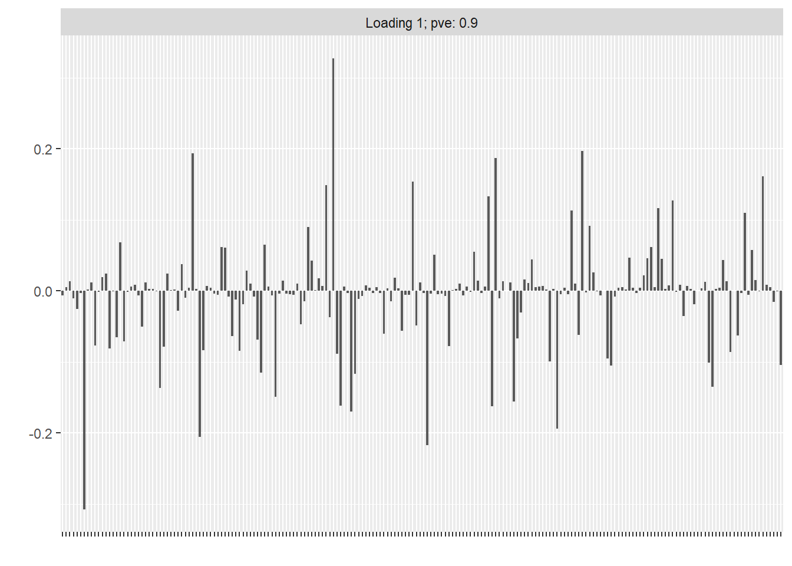
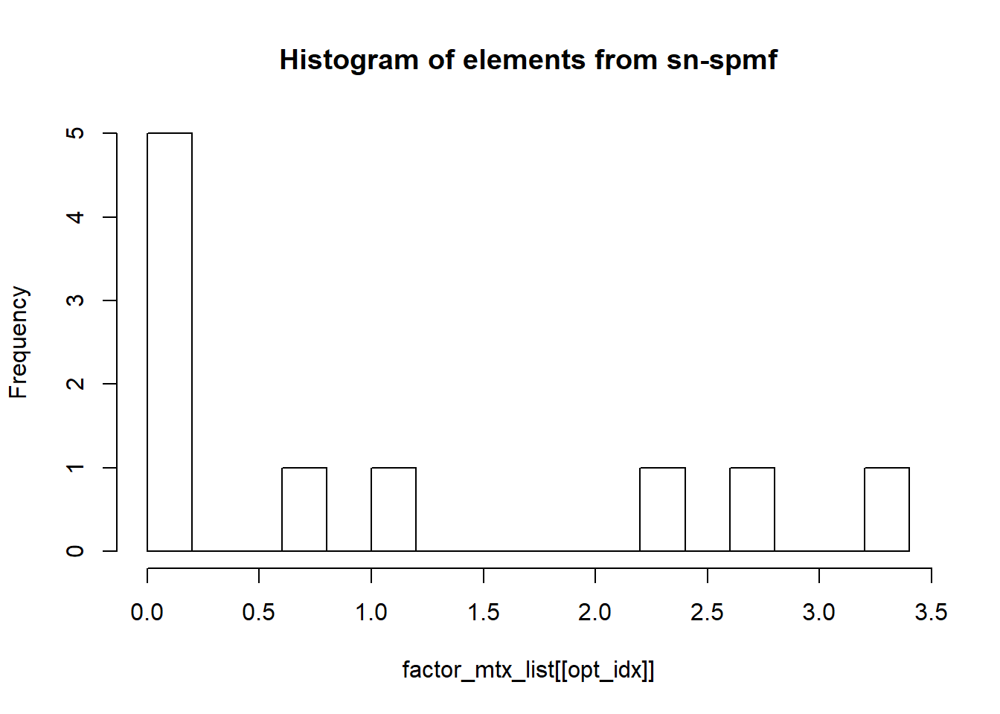
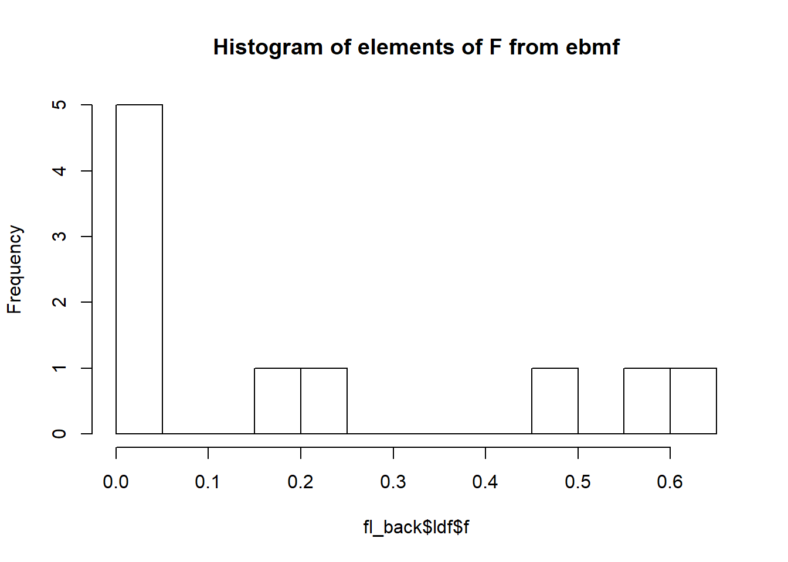
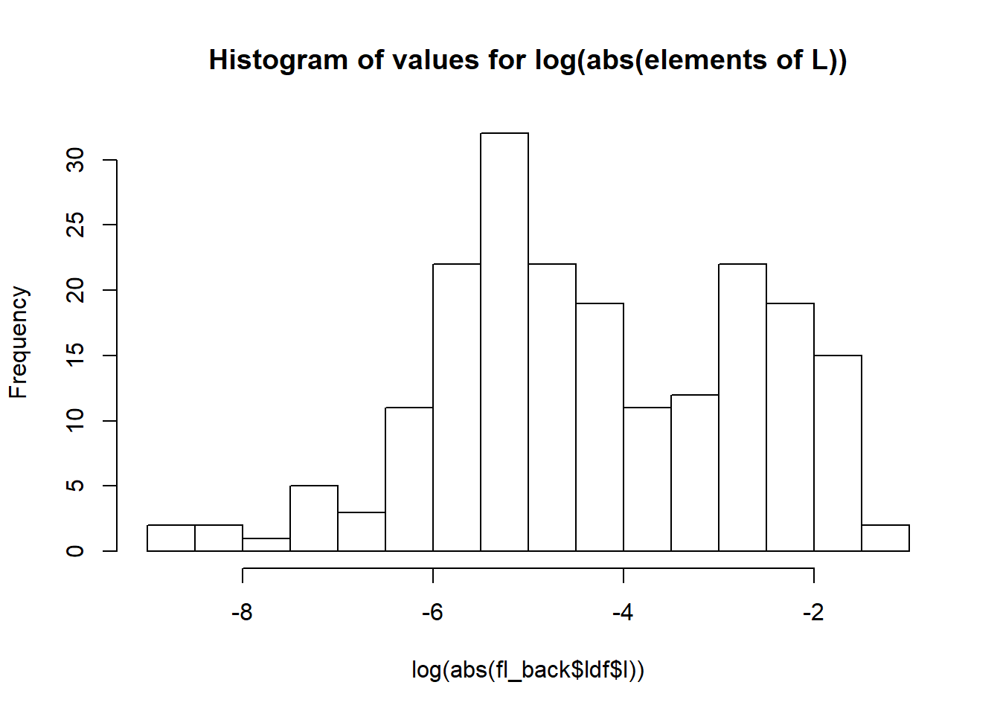
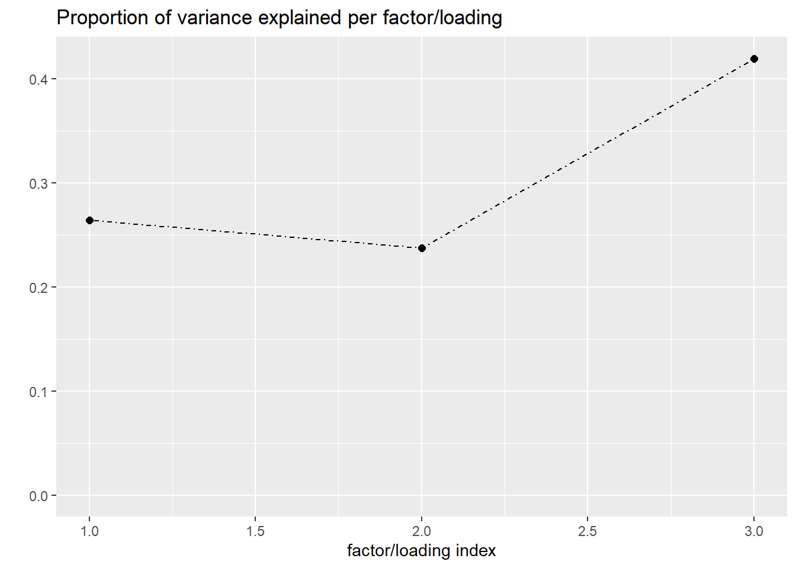
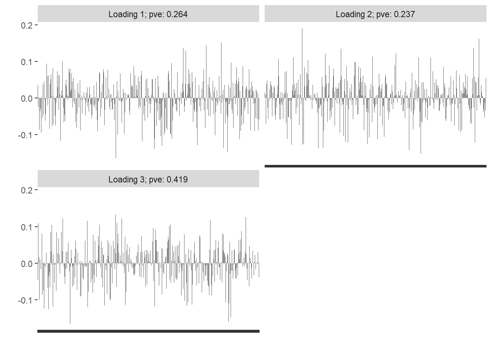
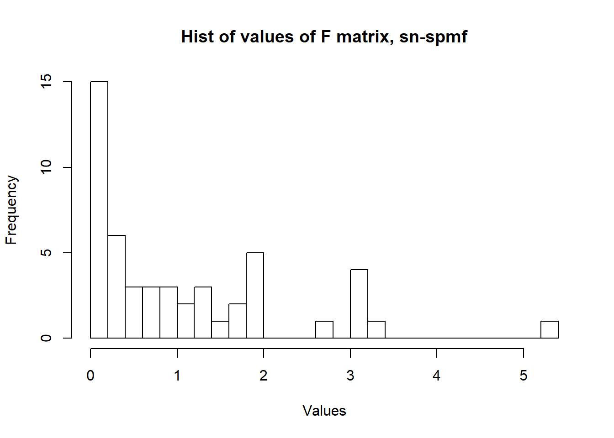
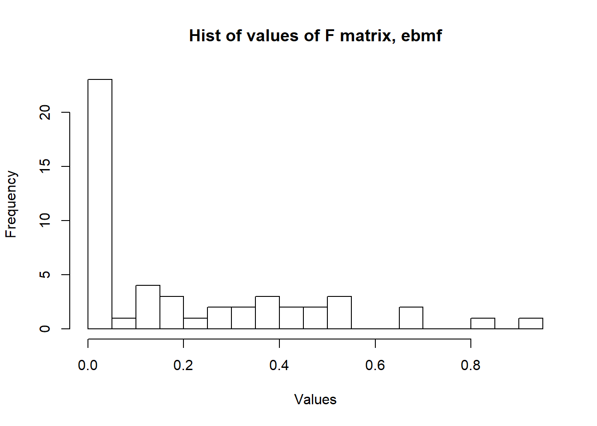

Last updated: 2020-02-17
Checks: 6 1
Knit directory: Code/
This reproducible R Markdown analysis was created with workflowr (version 1.4.0). The Checks tab describes the reproducibility checks that were applied when the results were created. The Past versions tab lists the development history.
Great! Since the R Markdown file has been committed to the Git repository, you know the exact version of the code that produced these results.
Great job! The global environment was empty. Objects defined in the global environment can affect the analysis in your R Markdown file in unknown ways. For reproduciblity it’s best to always run the code in an empty environment.
The command set.seed(20191013) was run prior to running the code in the R Markdown file. Setting a seed ensures that any results that rely on randomness, e.g. subsampling or permutations, are reproducible.
Great job! Recording the operating system, R version, and package versions is critical for reproducibility.
Nice! There were no cached chunks for this analysis, so you can be confident that you successfully produced the results during this run.
Using absolute paths to the files within your workflowr project makes it difficult for you and others to run your code on a different machine. Change the absolute path(s) below to the suggested relative path(s) to make your code more reproducible.
| absolute | relative |
|---|---|
| C:/Users/aclou/Documents/Projects/Thesis/Code/code/sn_spMF/ | code/sn_spMF |
| C:/Users/aclou/Documents/Projects/Thesis/Code/data/ | data |
Great! You are using Git for version control. Tracking code development and connecting the code version to the results is critical for reproducibility. The version displayed above was the version of the Git repository at the time these results were generated.
Note that you need to be careful to ensure that all relevant files for the analysis have been committed to Git prior to generating the results (you can use wflow_publish or wflow_git_commit). workflowr only checks the R Markdown file, but you know if there are other scripts or data files that it depends on. Below is the status of the Git repository when the results were generated:
Ignored files:
Ignored: .Rhistory
Ignored: analysis/.Rhistory
Ignored: analysis/figure/
Ignored: code/sn_spMF/.Rhistory
Untracked files:
Untracked: data/W_sim.txt
Untracked: data/X_sim.txt
Unstaged changes:
Modified: analysis/test_wflow.Rmd
Note that any generated files, e.g. HTML, png, CSS, etc., are not included in this status report because it is ok for generated content to have uncommitted changes.
These are the previous versions of the R Markdown and HTML files. If you’ve configured a remote Git repository (see ?wflow_git_remote), click on the hyperlinks in the table below to view them.
| File | Version | Author | Date | Message |
|---|---|---|---|---|
| Rmd | 1d506b9 | Adam Sun | 2020-02-17 | Initial analysis with 1 fac + 5 fac matrices |
| Rmd | 5b56f69 | Adam Sun | 2020-02-17 | initial analysis with 1 factor, 5 factor matrices |
| Rmd | 0ccbff4 | Adam Sun | 2020-02-17 | Files needed for running sn-spmf |
| html | 0ccbff4 | Adam Sun | 2020-02-17 | Files needed for running sn-spmf |
| html | 590c4f1 | Adam Sun | 2019-11-04 | Build site. |
| Rmd | 47a5189 | Adam Sun | 2019-11-04 | flashr 1-D, non-negative factor |
| html | 4d5fa70 | Adam Sun | 2019-10-13 | Build site. |
| Rmd | 1ab856d | Adam Sun | 2019-10-13 | First analysis |
Yuan He’s matrix factorization algorithm (sn-spMF) solves for non-negative F because “penalized”, the function used for iteratively solving for L and F, includes parameter to constrain coefficients to non-negative values. See fit_F.R, “penalized(…positive=T)”.
K, the number of factors, is selected outside the matrix factorization algorithm. Paper references producing a consensus matrix C “…after 30 runs with random initialization” and selecting K based off on which K maximizes the cophenetic correlation (uses compute_cophenet.R).
Sparsity coefficients on loadings matrix (L) and factors matrix (F)–denoted alpha and lambda in paper–are selected after K is selected.
# Prep Functions
rm(list=ls())
library(knitr)
library(penalized)Warning: package 'penalized' was built under R version 3.5.3Loading required package: survivalWelcome to penalized. For extended examples, see vignette("penalized").library(optparse)Warning: package 'optparse' was built under R version 3.5.3library(tidyverse)-- Attaching packages ----------------------------------------------------------------- tidyverse 1.2.1 --v ggplot2 3.2.1 v purrr 0.3.2
v tibble 2.1.3 v dplyr 0.8.0.1
v tidyr 0.8.1 v stringr 1.4.0
v readr 1.1.1 v forcats 0.3.0 Warning: package 'ggplot2' was built under R version 3.5.3Warning: package 'tibble' was built under R version 3.5.3Warning: package 'purrr' was built under R version 3.5.3Warning: package 'dplyr' was built under R version 3.5.3Warning: package 'stringr' was built under R version 3.5.3-- Conflicts -------------------------------------------------------------------- tidyverse_conflicts() --
x dplyr::filter() masks stats::filter()
x dplyr::lag() masks stats::lag()library(flashr)
library(devtools)Warning: package 'devtools' was built under R version 3.5.3Loading required package: usethisWarning: package 'usethis' was built under R version 3.5.3library(ebnm)
library(NNLM)Warning: package 'NNLM' was built under R version 3.5.3inputdir = "C:/Users/aclou/Documents/Projects/Thesis/Code/code/sn_spMF/"
source(paste0(inputdir, "compute_obj.R"))
source(paste0(inputdir, "fit_L.R"))
source(paste0(inputdir, "fit_F.R"))
source(paste0(inputdir, "readIn.R"))
source(paste0(inputdir, "Update_FL_AS.R"))
source(paste0(inputdir, "compute_cophenet.R"))-------------------------------------------------------------------------You have loaded plyr after dplyr - this is likely to cause problems.
If you need functions from both plyr and dplyr, please load plyr first, then dplyr:
library(plyr); library(dplyr)-------------------------------------------------------------------------
Attaching package: 'plyr'The following objects are masked from 'package:dplyr':
arrange, count, desc, failwith, id, mutate, rename, summarise,
summarizeThe following object is masked from 'package:purrr':
compactrun_nnf =
function(inputdir_data="C:/Users/aclou/Documents/Projects/Thesis/Code/data/",
X_mtx, W_mtx, num_facs,
max_iters = 100,
penalty_L = 0.1,
penalty_F = 0.1,
option_disp = T){
# Write to table first in order to work with "readIn" function format
# write.table(X_mtx, paste0(inputdir_data, "X_sim.txt"), row.names = FALSE)
# write.table(W_mtx, paste0(inputdir_data, "W_sim.txt"), row.names = FALSE)
# Define hyperparams for test
K = num_facs
alpha1 = penalty_L
lambda1 = penalty_F
outputdir = inputdir_data
xfn=X_mtx %>% as.data.frame()
wfn=W_mtx %>% as.data.frame()
Data = readIn(K, alpha1, lambda1, xfn, wfn)
X = Data[['X']];
W = Data[['W']];
option = Data[['option']];
option[['iter']] = max_iters;
option[['disp']] = option_disp
Fn_basename = Data[['Fn_basename']];
## run MF to learn the factors
print(paste0('Initial K=', (K), '; alpha1=', round(alpha1, 3),'; lambda1=', round(lambda1, 3)));
Run_iter = Update_FL(X, W, option);
FactorM = Run_iter[[1]]
LoadingM = Run_iter[[2]]
factor_corr = norm(cor(FactorM), 'F')
L_sparsity = Run_iter[[3]]
F_sparsity = Run_iter[[4]]
print(paste0('Final sparsity in Factor matrix =', (F_sparsity),'; Final sparsity in L =', (L_sparsity), '; '))
print(paste0((Run_iter[[5]]), ' final factors remaining; ; correlation between factors = ', (factor_corr)));
return(list(FactorM = FactorM, LoadingM = LoadingM))
}
Understand conceptually. Simulate 200x10 matrix. 50% sparse on factors (F) and 50% sparse on loadings (L). We set F to be non-negative with exp(1/2) distribution. Set to exp(1/2) so that signal is stronger than noise (SD of Error matrix = 1/2). L has N(0,1) distribution.
Use RRMSE for measurement (as per Wang Stephens paper) for comparison of methods.
set.seed(10000)
F_sparse = 0.50 # the true percentage of 0's
L_sparse = 0.50 # the true percentage of 0's
i = 1
# matrix prep
N = 200
P = 10
sd_noise = 0.5
sparseF_sim = 1 - rbinom(P, 1, prob = F_sparse[i])
F_sim = ifelse(sparseF_sim == 0, 0, rexp(P, rate = 1/2)) %>% matrix(nrow = P)
sparseL_sim = 1 - rbinom(N, 1, prob = L_sparse[i])
L_sim = ifelse(sparseL_sim == 0, 0, rnorm(N, 0, 1)) %>% matrix() # (nx1)
E_sim = rnorm(n = N*P, 0, sd_noise) %>% matrix(nrow = N)
X_sim = L_sim%*%t(F_sim) + E_sim
X_true = L_sim%*%t(F_sim)
F_sparse_true = sum(F_sim ==0)/length(F_sim)
paste0("F true sparsity: ", F_sparse_true)[1] "F true sparsity: 0.4"L_sparse_true = sum(L_sim ==0)/length(L_sim)
paste0("L true sparsity: ", L_sparse_true)[1] "L true sparsity: 0.535"Edited nnf code so it’s compatible with 1 factor.
Ideally, we would choose a vector of factors K and sparsity parameter values for L and F. However, the method of cophenetic correlation calculation (used in sn-spmf for finding the optimal number of factors K does not apply when K = 1). So for this simulation, we suppose that K = 1 is known. However, we run with initial K = 1 and 2 to see if sn-spmf redcues K to 1, We also vary sparsity parameters for L and F. We compute RRMSE from all runs to compare against EBMF method.
Note: sparsity parameter on Loadings (alpha1) could cause all elements shrunk to zero. Set max to 1.
[1] "K = 1 , F Penalty = 0.067"
[1] "Initial K=1; alpha1=0.291; lambda1=0.067"
[1] "Converged at itertaion 2"
[1] "Total time used for updating"
Time difference of 3.162584 secs
[1] "Final sparsity in Factor matrix =0; Final sparsity in L =0.05; "
[1] "1 final factors remaining; ; correlation between factors = 1"
[1] "K = 1 , F Penalty = 0.2735"
[1] "Initial K=1; alpha1=0.658; lambda1=0.274"
[1] "Converged at itertaion 2"
[1] "Total time used for updating"
Time difference of 2.938372 secs
[1] "Final sparsity in Factor matrix =0; Final sparsity in L =0.1; "
[1] "1 final factors remaining; ; correlation between factors = 1"
[1] "K = 1 , F Penalty = 0.1793"
[1] "Initial K=1; alpha1=0.639; lambda1=0.179"
[1] "Converged at itertaion 2"
[1] "Total time used for updating"
Time difference of 2.944138 secs
[1] "Final sparsity in Factor matrix =0; Final sparsity in L =0.095; "
[1] "1 final factors remaining; ; correlation between factors = 1"
[1] "K = 1 , F Penalty = 0.0062"
[1] "Initial K=1; alpha1=0.303; lambda1=0.006"
[1] "Converged at itertaion 2"
[1] "Total time used for updating"
Time difference of 2.980666 secs
[1] "Final sparsity in Factor matrix =0; Final sparsity in L =0.05; "
[1] "1 final factors remaining; ; correlation between factors = 1"
[1] "K = 1 , F Penalty = 0.3835"
[1] "Initial K=1; alpha1=0.29; lambda1=0.384"
[1] "Converged at itertaion 2"
[1] "Total time used for updating"
Time difference of 3.092625 secs
[1] "Final sparsity in Factor matrix =0; Final sparsity in L =0.05; "
[1] "1 final factors remaining; ; correlation between factors = 1"
[1] "K = 1 , F Penalty = 0.8655"
[1] "Initial K=1; alpha1=0.588; lambda1=0.865"
[1] "Converged at itertaion 2"
[1] "Total time used for updating"
Time difference of 3.105079 secs
[1] "Final sparsity in Factor matrix =0; Final sparsity in L =0.08; "
[1] "1 final factors remaining; ; correlation between factors = 1"
[1] "K = 1 , F Penalty = 0.6999"
[1] "Initial K=1; alpha1=0.436; lambda1=0.7"
[1] "Converged at itertaion 2"
[1] "Total time used for updating"
Time difference of 2.954488 secs
[1] "Final sparsity in Factor matrix =0; Final sparsity in L =0.06; "
[1] "1 final factors remaining; ; correlation between factors = 1"
[1] "K = 1 , F Penalty = 1.6011"
[1] "Initial K=1; alpha1=0.419; lambda1=1.601"
[1] "Converged at itertaion 2"
[1] "Total time used for updating"
Time difference of 2.939693 secs
[1] "Final sparsity in Factor matrix =0.1; Final sparsity in L =0.06; "
[1] "1 final factors remaining; ; correlation between factors = 1"
[1] "K = 1 , F Penalty = 0.9802"
[1] "Initial K=1; alpha1=0.782; lambda1=0.98"
[1] "Converged at itertaion 2"
[1] "Total time used for updating"
Time difference of 2.879358 secs
[1] "Final sparsity in Factor matrix =0; Final sparsity in L =0.12; "
[1] "1 final factors remaining; ; correlation between factors = 1"
[1] "K = 1 , F Penalty = 1.5402"
[1] "Initial K=1; alpha1=0.131; lambda1=1.54"
[1] "Converged at itertaion 2"
[1] "Total time used for updating"
Time difference of 2.963756 secs
[1] "Final sparsity in Factor matrix =0.1; Final sparsity in L =0.025; "
[1] "1 final factors remaining; ; correlation between factors = 1"
[1] "K = 1 , F Penalty = 2.8994"
[1] "Initial K=1; alpha1=0.009; lambda1=2.899"
[1] "Converged at itertaion 2"
[1] "Total time used for updating"
Time difference of 2.942514 secs
[1] "Final sparsity in Factor matrix =0.2; Final sparsity in L =0; "
[1] "1 final factors remaining; ; correlation between factors = 1"
[1] "K = 1 , F Penalty = 2.9647"
[1] "Initial K=1; alpha1=0.356; lambda1=2.965"
[1] "Converged at itertaion 2"
[1] "Total time used for updating"
Time difference of 2.958039 secs
[1] "Final sparsity in Factor matrix =0.2; Final sparsity in L =0.055; "
[1] "1 final factors remaining; ; correlation between factors = 1"
[1] "K = 1 , F Penalty = 4.7969"
[1] "Initial K=1; alpha1=0.073; lambda1=4.797"
[1] "Converged at itertaion 2"
[1] "Total time used for updating"
Time difference of 2.948888 secs
[1] "Final sparsity in Factor matrix =0.2; Final sparsity in L =0.02; "
[1] "1 final factors remaining; ; correlation between factors = 1"
[1] "K = 1 , F Penalty = 4.1581"
[1] "Initial K=1; alpha1=0.438; lambda1=4.158"
[1] "Converged at itertaion 2"
[1] "Total time used for updating"
Time difference of 2.915025 secs
[1] "Final sparsity in Factor matrix =0.2; Final sparsity in L =0.06; "
[1] "1 final factors remaining; ; correlation between factors = 1"
[1] "K = 1 , F Penalty = 4.834"
[1] "Initial K=1; alpha1=0.304; lambda1=4.834"
[1] "Converged at itertaion 2"
[1] "Total time used for updating"
Time difference of 3.059063 secs
[1] "Final sparsity in Factor matrix =0.2; Final sparsity in L =0.05; "
[1] "1 final factors remaining; ; correlation between factors = 1"
[1] "K = 2 , F Penalty = 0.4195"
[1] "Initial K=2; alpha1=0.182; lambda1=0.419"
[1] "Converged at itertaion 6"
[1] "Total time used for updating"
Time difference of 8.162067 secs
[1] "Final sparsity in Factor matrix =0.3; Final sparsity in L =0.1125; "
[1] "2 final factors remaining; ; correlation between factors = 1.62355440926459"
[1] "K = 2 , F Penalty = 0.2668"
[1] "Initial K=2; alpha1=0.049; lambda1=0.267"
[1] "Converged at itertaion 5"
[1] "Total time used for updating"
Time difference of 7.109549 secs
[1] "Final sparsity in Factor matrix =0.2; Final sparsity in L =0.0425; "
[1] "2 final factors remaining; ; correlation between factors = 1.86874523649295"
[1] "K = 2 , F Penalty = 0.0938"
[1] "Initial K=2; alpha1=0.53; lambda1=0.094"
[1] "Reached maximum iteration."
[1] "Total time used for updating"
Time difference of 58.57456 secs
[1] "Final sparsity in Factor matrix =0.45; Final sparsity in L =0.07; "
[1] "2 final factors remaining; ; correlation between factors = 1.45647373687279"
[1] "K = 2 , F Penalty = 0.2086"
[1] "Initial K=2; alpha1=0.358; lambda1=0.209"
[1] "Reached maximum iteration."
[1] "Total time used for updating"
Time difference of 1.005286 mins
[1] "Final sparsity in Factor matrix =0.4; Final sparsity in L =0.0475; "
[1] "2 final factors remaining; ; correlation between factors = 1.41425783274087"
[1] "K = 2 , F Penalty = 0.1579"
[1] "Initial K=2; alpha1=0.179; lambda1=0.158"
[1] "Converged at itertaion 22"
[1] "Total time used for updating"
Time difference of 27.02859 secs
[1] "Final sparsity in Factor matrix =0.4; Final sparsity in L =0.0475; "
[1] "2 final factors remaining; ; correlation between factors = 1.54964069096895"
[1] "K = 2 , F Penalty = 0.6271"
[1] "Initial K=2; alpha1=0.563; lambda1=0.627"
[1] "Converged at itertaion 26"
[1] "Total time used for updating"
Time difference of 31.61074 secs
[1] "Final sparsity in Factor matrix =0.45; Final sparsity in L =0.1125; "
[1] "2 final factors remaining; ; correlation between factors = 1.41476747938638"
[1] "K = 2 , F Penalty = 1.6884"
[1] "Initial K=2; alpha1=0.151; lambda1=1.688"
[1] "Converged at itertaion 7"
[1] "Total time used for updating"
Time difference of 9.373383 secs
[1] "Final sparsity in Factor matrix =0.35; Final sparsity in L =0.055; "
[1] "2 final factors remaining; ; correlation between factors = 1.55817896459536"
[1] "K = 2 , F Penalty = 0.8019"
[1] "Initial K=2; alpha1=0.246; lambda1=0.802"
[1] "Converged at itertaion 29"
[1] "Total time used for updating"
Time difference of 36.27052 secs
[1] "Final sparsity in Factor matrix =0.45; Final sparsity in L =0.0675; "
[1] "2 final factors remaining; ; correlation between factors = 1.4278762828959"
[1] "K = 2 , F Penalty = 0.9453"
[1] "Initial K=2; alpha1=0.666; lambda1=0.945"
[1] "Converged at itertaion 21"
[1] "Total time used for updating"
Time difference of 26.10549 secs
[1] "Final sparsity in Factor matrix =0.45; Final sparsity in L =0.13; "
[1] "2 final factors remaining; ; correlation between factors = 1.455400577773"
[1] "K = 2 , F Penalty = 1.3803"
[1] "Initial K=2; alpha1=0.724; lambda1=1.38"
[1] "Converged at itertaion 19"
[1] "Total time used for updating"
Time difference of 22.80863 secs
[1] "Final sparsity in Factor matrix =0.5; Final sparsity in L =0.1475; "
[1] "2 final factors remaining; ; correlation between factors = 1.4773100289939"
[1] "K = 2 , F Penalty = 4.7249"
[1] "Initial K=2; alpha1=0.856; lambda1=4.725"
[1] "Converged at itertaion 3"
[1] "Total time used for updating"
Time difference of 4.266898 secs
[1] "Final sparsity in Factor matrix =0.2; Final sparsity in L =0.13; "
[1] "1 final factors remaining; ; correlation between factors = 1"
[1] "K = 2 , F Penalty = 3.7965"
[1] "Initial K=2; alpha1=0.227; lambda1=3.796"
[1] "Converged at itertaion 38"
[1] "Total time used for updating"
Time difference of 45.98385 secs
[1] "Final sparsity in Factor matrix =0.55; Final sparsity in L =0.0525; "
[1] "2 final factors remaining; ; correlation between factors = 1.45355869130756"
[1] "K = 2 , F Penalty = 2.6524"
[1] "Initial K=2; alpha1=0.543; lambda1=2.652"
[1] "Converged at itertaion 14"
[1] "Total time used for updating"
Time difference of 17.12281 secs
[1] "Final sparsity in Factor matrix =0.55; Final sparsity in L =0.1875; "
[1] "2 final factors remaining; ; correlation between factors = 1.4270193608421"
[1] "K = 2 , F Penalty = 2.8155"
[1] "Initial K=2; alpha1=0.192; lambda1=2.815"
[1] "Converged at itertaion 14"
[1] "Total time used for updating"
Time difference of 17.95272 secs
[1] "Final sparsity in Factor matrix =0.5; Final sparsity in L =0.1275; "
[1] "2 final factors remaining; ; correlation between factors = 1.51658082314244"
[1] "K = 2 , F Penalty = 4.1009"
[1] "Initial K=2; alpha1=0.036; lambda1=4.101"
[1] "Converged at itertaion 7"
[1] "Total time used for updating"
Time difference of 11.33732 secs
[1] "Final sparsity in Factor matrix =0.45; Final sparsity in L =0.045; "
[1] "2 final factors remaining; ; correlation between factors = 1.83357304095053"Next, perform matrix factorization with EBMF. We use non-negative mf proposed by JW. We change the “ebnm_param” object so that F is non-negative but L can be any number. We do this by assigning “uniform+” prior on F, and a default normal prior with mean 0 and 1 SD to L.
Reference: https://willwerscheid.github.io/FLASHvestigations/nonnegative.html
We first use the normal flash function to confirm that L takes any values and F takes non-negative values. Next, we run flash_backfit over a range of starting K’s from 1 to 5 and choose the final run as the one which maximizes the objective.
# flash object of simulated X matrix
X_flash = flash_set_data(X_sim)
names(X_flash)[1] "Yorig" "S" "anyNA" "missing" "Y" f = flash_add_factors_from_data(X_flash, K=1, backfit=FALSE) # assume K = 1
ebnm_param_l = list(g=ashr::normalmix(1,0,1), fixg=TRUE)
ebnm_fn = "ebnm_ash"
ebnm_param = list(
l = ebnm_param_l, # L can be any number
f = list(mixcompdist = "+uniform"), # Factors are non-negative
warmstart = TRUE)
# non-negative
udv_nn = function(Y, K = 1) {
tmp = NNLM::nnmf(Y, K, verbose = FALSE)
return(list(d = rep(1, K), u = tmp$W, v = t(tmp$H)))
}
# function to run flash once (for any matrix X)
run_flash_once <- function(X_mtx, f_init) {
flash(X_mtx, f_init = f_init,
ebnm_fn = ebnm_fn, ebnm_param = ebnm_param,
var_type="constant", init_fn = udv_nn,
backfit = TRUE, verbose = FALSE)
}
fl_init <- flash_add_factors_from_data(X_flash, K = 5,
init_fn = udv_nn,
ebnm_param = ebnm_param,
backfit = FALSE)
fl_iter <- run_flash_once(X_sim, f_init = fl_init)
print(paste0("number of non-negative elements in l: ", length(which(fl_iter$ldf$l < 0)))) [1] "number of non-negative elements in l: 96"print(paste0("number of non-negative elements in f: ", length(which(fl_iter$ldf$f < 0)))) [1] "number of non-negative elements in f: 0"df_ebmf_results = matrix(0, nrow = 0, ncol = 5) %>% as.data.frame()
all_flash_f = list()
all_flash_l = list()
all_flash_d = list()
for (K_iter in 1:5){
fl_init <- flash_add_factors_from_data(X_flash, K = K_iter,
init_fn = udv_nn,
ebnm_param = ebnm_param,
backfit = FALSE)
time_eb = Sys.time()
fl_back <- flash_backfit(data = X_flash, f_init = fl_init,
ebnm_fn = ebnm_fn,
ebnm_param = ebnm_param,
var_type = "constant",
verbose = FALSE)
fl_back_l = fl_back$ldf$l
fl_back_d = diag(x = fl_back$ldf$d, nrow = length(fl_back$ldf$d))
fl_back_f = fl_back$ldf$f
X_hat_eb = fl_back_l %*% fl_back_d %*% t(fl_back_f)
RRMSE_eb = sqrt(sum((X_hat_eb - X_true)^2)/sum(X_true^2))
time_eb = difftime(Sys.time(), time_eb, units = "secs")
df_ebmf_results = rbind(df_ebmf_results,
c(K_iter, time_eb, fl_back$nfactors, fl_back$objective, RRMSE_eb))
all_flash_f[[K_iter]] = fl_back_f
all_flash_l[[K_iter]] = fl_back_l
all_flash_d[[K_iter]] = fl_back_d
}
colnames(df_ebmf_results) = c("K", "Time_Taken", "Num Factors", "Objective", "RRMSE")
plot(fl_back, plot_loadings = TRUE)Warning in plot.flash(fl_back, plot_loadings = TRUE): Not enough factors to
create a scree plot.
The average accuracy across all sp-snmf runs was 0.114, while ebmf produced the same RRMSE of 0.1 for all initial starting K’s. This is marginally higher than the average sp-snmf RRMSE by 0.014.
As mentioned before, sn-spmf chooses the best K by minimizing cophenetic correlation. However, this does not apply for K = 1, so we assume that K = 1 is known for sn-spmf and focus only on runs where final K = 1 to compare against ebmf. In this case, the average RRMSE of sn-spmf runs had an RRMSE of 0.094, and the highest accuracy (‘optimal’) run had the lowest RRMSE of 0.088.
All ebmf runs correctly identified that the true factor matrix had rank K = 1. Meanwhile, note that not all sn-spmf runs correctly identified that K = 1. When initialized with K = 2, 14 out of 15 runs did not correctly identify the true K to be 1. That, however, could be partially because the maximum iteration is set to 50. If we ran to convergence, we may perhaps see better accuracy results (at the expense of longer runs).
In terms of time, the ebmf runs outperformed sn-spmf at an individual run level. Each run of sn-spmf took an average time of 14.303 seconds. Meanwhile, ebmf runs took an average of 6.904 seconds. Additionally, when the number of factors is misspecified, sn-spmf took considerably longer (NaN seconds when mis-specified versus NaN seconds when not). Meanwhile, for ebmf, for any initial K flash_backfit took relatively more similar amounts of time, ranging from 3 seconds to at most 15 seconds (scales linearly with the initial number of K’s for flash_backfit, from 1 to 5).
When looking at final sparsities on L and F, we note that the sparsities on the output matrices L and F from sn-spmf – 0.13 and 0.2 – are not that close to the true values of 0.535 and 0.4. Note that the final sparsity estimate on F shows that F is not at all sparse. However, certain estimates may be noise, and observing the histogram of values of F, we see that indeed values smaller than 0.5 could potentially be treated as noise. Ignoring elements of F < 0.1 gives us a sparsity estimate on F of 0.5, which is more similar to the true sparsity on F of 0.4.
Under ebmf, the prior distributions on L and F did not include the mix of point estimate densities, so we go with the approach above to estimate sparsity. By observing the histogram of values of F and log-abs-values of L, we use reasonable cutoff values of 0.1 and -4 to get estimated sparsities of 0.405 and 0.5, respectively, for F and L. If we trust this hacky method of estimating sparsity on L and F, this suggests that flash_backfit and sn-spmf are similar to each other in estimating the sparsity on F. In addition, flash_backfit is fairly accurate in estimating the sparsity of L of 0.535.
Finally, since both sn-spmf and ebmf both produce optimal matrices on F with 1 factor (i.e. K = 1), we do a side-by-side comparison of the two F vectors below with the true factor F used to generate the matrix X. While the orders of magnitude are different, the indices of elements which are larger than other elements in their respective vectors tie out accordingly across the three F’s.

sn-spmf F flash_back F true F
f 3.210 5.169 4.336
f 2.286 3.726 3.089
f 2.768 4.504 3.726
f 0.031 0.052 0.000
f 1.096 1.805 1.497
f 0.197 0.355 0.306
f 0.007 0.041 0.000
f 0.000 0.034 0.000
f 0.000 0.036 0.000
f 0.775 1.294 1.020[1] "Initial K=1; alpha1=0.65; lambda1=10"
[1] "Iter1:"
[1] "Loading Sparsity = 0.1; Factor sparsity = 0.3; 1 factors remain"
[1] "Objective change for updating F = -2451.72517090557; for updating L = -42.0225548154162; Total change = -2493.74772572098"
[1] "Factor matrix Frobenius norm change = 3.62677297079626"
[1] "Iter2:"
[1] "Loading Sparsity = 0.105; Factor sparsity = 0.3; 1 factors remain"
[1] "Objective change for updating F = 0.782348899268641; for updating L = -0.619918729927917; Total change = 0.162430169340723"
[1] "Factor matrix Frobenius norm change = 0.0428805518351706"
[1] "Converged at itertaion 2"
[1] "Total time used for updating"
Time difference of 3.343847 secs
[1] "Final sparsity in Factor matrix =0.3; Final sparsity in L =0.105; "
[1] "1 final factors remaining; ; correlation between factors = 1"As a thought experiment, I try to see if we can do better on sn-spmf by finding an optimal solution for the starting penalty parameters on L and F by modeling the RRMSE as a quadratic function of the two parameters. (Note I have to bound L above by 1 and F b y 10, because otherwise it seems the sparsity on L and F will get pushed initially to 1 and cause either matrices to be the 0 matrix which sometimes ends the matrix factorization). The optimal sparsity estimates on F and L is the vector \((\lambda_1, \alpha_1)\) = 10, 0.65. This is not surprising since the coefficient on the quadratic term F is negative.
This does not achieve a better accuracy than our best sn-spmf run, resulting in an RRMSE of 0.091. The final sparsities on F and L on this run are 0.3 and 0.105.
[1] "Final 'optimal' run results:" Run K_start K_final F_lambda1 L_alpha1 F_sparse_final L_sparse_final
31 9999 1 1 10 0.65 0.3 0.105
Time Error
31 3.349795 0.09058209[1] "Reg coefficients with quadratic terms:" Estimate Std. Error t value Pr(>|t|)
(Intercept) 0.134 0.016 8.268 0.000
I(F_lambda1^2) -0.001 0.002 -0.664 0.513
I(L_alpha1^2) 0.025 0.079 0.313 0.757
F_lambda1 0.002 0.010 0.197 0.845
L_alpha1 -0.060 0.069 -0.866 0.395
F_lambda1:L_alpha1 0.003 0.010 0.270 0.789
For conceptual understanding how both matrix factorizations perform for slightly more complicated matrices, we simulate a 400x10 matrix with the true number of latent factors as 5. 25% sparse on F and 25% on L this time. Again, non-sparse factor values have exp(1/2) distribution (so the signals are positive and also strong enough to be noise). Error matrix has SD = 1/2. L has N(0,1) distribution as above.
Use RRMSE for measurement (as per Wang Stephens paper) for comparison of methods.
[1] "True (avg) sparsity on F: 0.34"[1] "True (avg) sparsity on L: 0.232"[1] "Dimension of X: 400x10"We would choose vector of factors K and sparsity parameter values for L and F. We start with K = 3. For this nnf run, we suppose that K is unknown and use cophenetic correlation to determine K and sparsity parameters for L and F. We compute RRMSE from all runs to later compare against EB method.
[1] "Initial K=3; alpha1=0.162; lambda1=3.712"
[1] "Iter1:"
[1] "Loading Sparsity = 0.0191666666666667; Factor sparsity = 0.133333333333333; 3 factors remain"
[1] "Objective change for updating F = -17886.6458618673; for updating L = -3624.18871210131; Total change = -21510.8345739686"
[1] "Factor matrix Frobenius norm change = 3.54032997160988"
[1] "Iter2:"
[1] "Loading Sparsity = 0.0158333333333333; Factor sparsity = 0.1; 3 factors remain"
[1] "Objective change for updating F = -318.795830905223; for updating L = -35.0709565461721; Total change = -353.866787451395"
[1] "Factor matrix Frobenius norm change = 0.514569490742367"
[1] "Iter3:"
[1] "Loading Sparsity = 0.0191666666666667; Factor sparsity = 0.0666666666666667; 3 factors remain"
[1] "Objective change for updating F = -40.0390972090063; for updating L = -7.55902566447548; Total change = -47.5981228734818"
[1] "Factor matrix Frobenius norm change = 0.139750305004524"
[1] "Iter4:"
[1] "Loading Sparsity = 0.02; Factor sparsity = 0.0666666666666667; 3 factors remain"
[1] "Objective change for updating F = -31.971045529438; for updating L = -3.86136896628796; Total change = -35.832414495726"
[1] "Factor matrix Frobenius norm change = 0.100613019284724"
[1] "Iter5:"
[1] "Loading Sparsity = 0.0191666666666667; Factor sparsity = 0.0666666666666667; 3 factors remain"
[1] "Objective change for updating F = -27.5998544111462; for updating L = -2.09453188865882; Total change = -29.694386299805"
[1] "Factor matrix Frobenius norm change = 0.076330265096386"
[1] "Converged at itertaion 5"
[1] "Total time used for updating"
Time difference of 18.35316 secs
[1] "Final sparsity in Factor matrix =0.0666666666666667; Final sparsity in L =0.0191666666666667; "
[1] "3 final factors remaining; ; correlation between factors = 2.6562517047508"
[1] "Initial K=3; alpha1=0.808; lambda1=2.634"
[1] "Iter1:"
[1] "Loading Sparsity = 0.0591666666666667; Factor sparsity = 0.2; 3 factors remain"
[1] "Objective change for updating F = -22409.7763509086; for updating L = -1526.47351509443; Total change = -23936.249866003"
[1] "Factor matrix Frobenius norm change = 3.18509883545848"
[1] "Iter2:"
[1] "Loading Sparsity = 0.0575; Factor sparsity = 0.2; 3 factors remain"
[1] "Objective change for updating F = -219.415849815341; for updating L = -26.4498198546617; Total change = -245.865669670003"
[1] "Factor matrix Frobenius norm change = 0.287969944023206"
[1] "Iter3:"
[1] "Loading Sparsity = 0.0616666666666667; Factor sparsity = 0.2; 3 factors remain"
[1] "Objective change for updating F = -132.975159810935; for updating L = -10.0944705236952; Total change = -143.06963033463"
[1] "Factor matrix Frobenius norm change = 0.216717574014582"
[1] "Iter4:"
[1] "Loading Sparsity = 0.06; Factor sparsity = 0.233333333333333; 3 factors remain"
[1] "Objective change for updating F = -111.376899063883; for updating L = -5.52013477395212; Total change = -116.897033837835"
[1] "Factor matrix Frobenius norm change = 0.204877581420065"
[1] "Iter5:"
[1] "Loading Sparsity = 0.06; Factor sparsity = 0.233333333333333; 3 factors remain"
[1] "Objective change for updating F = -95.8029405440311; for updating L = -3.81462651307447; Total change = -99.6175670571056"
[1] "Factor matrix Frobenius norm change = 0.199899226775361"
[1] "Iter6:"
[1] "Loading Sparsity = 0.0591666666666667; Factor sparsity = 0.233333333333333; 3 factors remain"
[1] "Objective change for updating F = -84.4042779542742; for updating L = -2.95805892346834; Total change = -87.3623368777426"
[1] "Factor matrix Frobenius norm change = 0.196506596629652"
[1] "Iter7:"
[1] "Loading Sparsity = 0.0616666666666667; Factor sparsity = 0.233333333333333; 3 factors remain"
[1] "Objective change for updating F = -75.3861775101032; for updating L = -2.17896721921352; Total change = -77.5651447293167"
[1] "Factor matrix Frobenius norm change = 0.193513748793471"
[1] "Iter8:"
[1] "Loading Sparsity = 0.0608333333333333; Factor sparsity = 0.233333333333333; 3 factors remain"
[1] "Objective change for updating F = -67.8854888556862; for updating L = -1.70781760106092; Total change = -69.5933064567471"
[1] "Factor matrix Frobenius norm change = 0.190769033676593"
[1] "Iter9:"
[1] "Loading Sparsity = 0.0608333333333333; Factor sparsity = 0.233333333333333; 3 factors remain"
[1] "Objective change for updating F = -61.6067310575681; for updating L = -1.3147159944956; Total change = -62.9214470520637"
[1] "Factor matrix Frobenius norm change = 0.18832703103118"
[1] "Iter10:"
[1] "Loading Sparsity = 0.0575; Factor sparsity = 0.233333333333333; 3 factors remain"
[1] "Objective change for updating F = -56.0333465275571; for updating L = -0.837298752473544; Total change = -56.8706452800307"
[1] "Factor matrix Frobenius norm change = 0.185720423216954"
[1] "Iter11:"
[1] "Loading Sparsity = 0.0533333333333333; Factor sparsity = 0.233333333333333; 3 factors remain"
[1] "Objective change for updating F = -51.1237451439265; for updating L = -0.572696866308434; Total change = -51.6964420102349"
[1] "Factor matrix Frobenius norm change = 0.183040465407529"
[1] "Iter12:"
[1] "Loading Sparsity = 0.0508333333333333; Factor sparsity = 0.2; 3 factors remain"
[1] "Objective change for updating F = -46.7544468846381; for updating L = -0.311313342314861; Total change = -47.065760226953"
[1] "Factor matrix Frobenius norm change = 0.180298445870055"
[1] "Iter13:"
[1] "Loading Sparsity = 0.0475; Factor sparsity = 0.2; 3 factors remain"
[1] "Objective change for updating F = -43.0529685752599; for updating L = -0.182659891906951; Total change = -43.2356284671669"
[1] "Factor matrix Frobenius norm change = 0.17810797931555"
[1] "Iter14:"
[1] "Loading Sparsity = 0.0466666666666667; Factor sparsity = 0.2; 3 factors remain"
[1] "Objective change for updating F = -39.975849213557; for updating L = -0.0901626974919054; Total change = -40.0660119110489"
[1] "Factor matrix Frobenius norm change = 0.176377720712674"
[1] "Iter15:"
[1] "Loading Sparsity = 0.0441666666666667; Factor sparsity = 0.2; 3 factors remain"
[1] "Objective change for updating F = -37.2571600706842; for updating L = -0.0347186536191657; Total change = -37.2918787243034"
[1] "Factor matrix Frobenius norm change = 0.174694218337088"
[1] "Iter16:"
[1] "Loading Sparsity = 0.0416666666666667; Factor sparsity = 0.2; 3 factors remain"
[1] "Objective change for updating F = -34.7713241846805; for updating L = 0.191343068017886; Total change = -34.5799811166626"
[1] "Factor matrix Frobenius norm change = 0.172929689877089"
[1] "Iter17:"
[1] "Loading Sparsity = 0.04; Factor sparsity = 0.2; 3 factors remain"
[1] "Objective change for updating F = -32.5351959327254; for updating L = 0.220605773823081; Total change = -32.3145901589023"
[1] "Factor matrix Frobenius norm change = 0.171240388571561"
[1] "Iter18:"
[1] "Loading Sparsity = 0.0366666666666667; Factor sparsity = 0.2; 3 factors remain"
[1] "Objective change for updating F = -30.5263257302131; for updating L = 0.362665571217804; Total change = -30.1636601589953"
[1] "Factor matrix Frobenius norm change = 0.169641173776253"
[1] "Iter19:"
[1] "Loading Sparsity = 0.035; Factor sparsity = 0.2; 3 factors remain"
[1] "Objective change for updating F = -28.7322022587714; for updating L = 0.426120044487106; Total change = -28.3060822142843"
[1] "Factor matrix Frobenius norm change = 0.168175291263863"
[1] "Iter20:"
[1] "Loading Sparsity = 0.0366666666666667; Factor sparsity = 0.2; 3 factors remain"
[1] "Objective change for updating F = -27.1236072554302; for updating L = 0.426295126832883; Total change = -26.6973121285973"
[1] "Factor matrix Frobenius norm change = 0.166860857763062"
[1] "Iter21:"
[1] "Loading Sparsity = 0.0366666666666667; Factor sparsity = 0.2; 3 factors remain"
[1] "Objective change for updating F = -25.6813021167045; for updating L = 0.4698109435476; Total change = -25.2114911731569"
[1] "Factor matrix Frobenius norm change = 0.165693354980354"
[1] "Iter22:"
[1] "Loading Sparsity = 0.0366666666666667; Factor sparsity = 0.166666666666667; 3 factors remain"
[1] "Objective change for updating F = -24.3347472205332; for updating L = 0.540983268523632; Total change = -23.7937639520096"
[1] "Factor matrix Frobenius norm change = 0.164448660690688"
[1] "Iter23:"
[1] "Loading Sparsity = 0.0341666666666667; Factor sparsity = 0.166666666666667; 3 factors remain"
[1] "Objective change for updating F = -23.1249246233656; for updating L = 0.540089505573633; Total change = -22.584835117792"
[1] "Factor matrix Frobenius norm change = 0.163337205840562"
[1] "Iter24:"
[1] "Loading Sparsity = 0.0341666666666667; Factor sparsity = 0.166666666666667; 3 factors remain"
[1] "Objective change for updating F = -21.9959955789582; for updating L = 0.573912896466027; Total change = -21.4220826824921"
[1] "Factor matrix Frobenius norm change = 0.162171697475624"
[1] "Iter25:"
[1] "Loading Sparsity = 0.0341666666666667; Factor sparsity = 0.166666666666667; 3 factors remain"
[1] "Objective change for updating F = -20.9824817028393; for updating L = 0.594250797529639; Total change = -20.3882309053097"
[1] "Factor matrix Frobenius norm change = 0.161210803968457"
[1] "Iter26:"
[1] "Loading Sparsity = 0.0333333333333333; Factor sparsity = 0.166666666666667; 3 factors remain"
[1] "Objective change for updating F = -20.0150781454058; for updating L = 0.657983888691888; Total change = -19.3570942567139"
[1] "Factor matrix Frobenius norm change = 0.160124400257633"
[1] "Iter27:"
[1] "Loading Sparsity = 0.0325; Factor sparsity = 0.166666666666667; 3 factors remain"
[1] "Objective change for updating F = -19.0929004082036; for updating L = 0.686178964891951; Total change = -18.4067214433117"
[1] "Factor matrix Frobenius norm change = 0.15891493458621"
[1] "Iter28:"
[1] "Loading Sparsity = 0.0308333333333333; Factor sparsity = 0.166666666666667; 3 factors remain"
[1] "Objective change for updating F = -18.2491605976129; for updating L = 0.667929204448228; Total change = -17.5812313931647"
[1] "Factor matrix Frobenius norm change = 0.157829353474926"
[1] "Iter29:"
[1] "Loading Sparsity = 0.0291666666666667; Factor sparsity = 0.166666666666667; 3 factors remain"
[1] "Objective change for updating F = -17.4667305537732; for updating L = 0.729879668114336; Total change = -16.7368508856589"
[1] "Factor matrix Frobenius norm change = 0.156784871354979"
[1] "Iter30:"
[1] "Loading Sparsity = 0.0258333333333333; Factor sparsity = 0.166666666666667; 3 factors remain"
[1] "Objective change for updating F = -16.7349222843359; for updating L = 0.737975639495744; Total change = -15.9969466448401"
[1] "Factor matrix Frobenius norm change = 0.155767300288476"
[1] "Iter31:"
[1] "Loading Sparsity = 0.0208333333333333; Factor sparsity = 0.1; 3 factors remain"
[1] "Objective change for updating F = -16.0795982322488; for updating L = 0.720321232651258; Total change = -15.3592769995976"
[1] "Factor matrix Frobenius norm change = 0.15505030436485"
[1] "Iter32:"
[1] "Loading Sparsity = 0.02; Factor sparsity = 0.1; 3 factors remain"
[1] "Objective change for updating F = -15.4805359946449; for updating L = 0.706201037722167; Total change = -14.7743349569228"
[1] "Factor matrix Frobenius norm change = 0.154455324273456"
[1] "Iter33:"
[1] "Loading Sparsity = 0.0225; Factor sparsity = 0.1; 3 factors remain"
[1] "Objective change for updating F = -14.9165053256611; for updating L = 0.694831231987337; Total change = -14.2216740936738"
[1] "Factor matrix Frobenius norm change = 0.153901350741931"
[1] "Iter34:"
[1] "Loading Sparsity = 0.0233333333333333; Factor sparsity = 0.1; 3 factors remain"
[1] "Objective change for updating F = -14.3791218009337; for updating L = 0.677230751412026; Total change = -13.7018910495217"
[1] "Factor matrix Frobenius norm change = 0.153311625757514"
[1] "Iter35:"
[1] "Loading Sparsity = 0.025; Factor sparsity = 0.1; 3 factors remain"
[1] "Objective change for updating F = -13.8630811638895; for updating L = 0.657922253080869; Total change = -13.2051589108087"
[1] "Factor matrix Frobenius norm change = 0.152653378955177"
[1] "Iter36:"
[1] "Loading Sparsity = 0.0233333333333333; Factor sparsity = 0.1; 3 factors remain"
[1] "Objective change for updating F = -13.3267211090524; for updating L = 0.681792485432197; Total change = -12.6449286236202"
[1] "Factor matrix Frobenius norm change = 0.151548688842685"
[1] "Iter37:"
[1] "Loading Sparsity = 0.0241666666666667; Factor sparsity = 0.1; 3 factors remain"
[1] "Objective change for updating F = -12.818334522588; for updating L = 0.702306471761403; Total change = -12.1160280508266"
[1] "Factor matrix Frobenius norm change = 0.150393559099256"
[1] "Iter38:"
[1] "Loading Sparsity = 0.0241666666666667; Factor sparsity = 0.1; 3 factors remain"
[1] "Objective change for updating F = -12.3611537144789; for updating L = 0.683196860237331; Total change = -11.6779568542415"
[1] "Factor matrix Frobenius norm change = 0.149477051405751"
[1] "Iter39:"
[1] "Loading Sparsity = 0.025; Factor sparsity = 0.1; 3 factors remain"
[1] "Objective change for updating F = -11.9464844906724; for updating L = 0.66907431859363; Total change = -11.2774101720788"
[1] "Factor matrix Frobenius norm change = 0.148811027990633"
[1] "Iter40:"
[1] "Loading Sparsity = 0.0258333333333333; Factor sparsity = 0.1; 3 factors remain"
[1] "Objective change for updating F = -11.5601694691486; for updating L = 0.671592952199717; Total change = -10.8885765169489"
[1] "Factor matrix Frobenius norm change = 0.148305944291292"
[1] "Iter41:"
[1] "Loading Sparsity = 0.0283333333333333; Factor sparsity = 0.1; 3 factors remain"
[1] "Objective change for updating F = -11.16115115501; for updating L = 0.701635403770524; Total change = -10.4595157512395"
[1] "Factor matrix Frobenius norm change = 0.147520799507729"
[1] "Iter42:"
[1] "Loading Sparsity = 0.0266666666666667; Factor sparsity = 0.1; 3 factors remain"
[1] "Objective change for updating F = -10.7742572775687; for updating L = 0.72388990708896; Total change = -10.0503673704798"
[1] "Factor matrix Frobenius norm change = 0.146672374851142"
[1] "Iter43:"
[1] "Loading Sparsity = 0.0291666666666667; Factor sparsity = 0.1; 3 factors remain"
[1] "Objective change for updating F = -10.4092807231154; for updating L = 0.711719272310347; Total change = -9.6975614508051"
[1] "Factor matrix Frobenius norm change = 0.145853506465336"
[1] "Iter44:"
[1] "Loading Sparsity = 0.03; Factor sparsity = 0.1; 3 factors remain"
[1] "Objective change for updating F = -10.064668984287; for updating L = 0.705301071613576; Total change = -9.35936791267341"
[1] "Factor matrix Frobenius norm change = 0.145077217364886"
[1] "Iter45:"
[1] "Loading Sparsity = 0.0325; Factor sparsity = 0.1; 3 factors remain"
[1] "Objective change for updating F = -9.73432436929579; for updating L = 0.698905346728225; Total change = -9.03541902256757"
[1] "Factor matrix Frobenius norm change = 0.144265034251874"
[1] "Iter46:"
[1] "Loading Sparsity = 0.0341666666666667; Factor sparsity = 0.1; 3 factors remain"
[1] "Objective change for updating F = -9.40954090845662; for updating L = 0.706100991611038; Total change = -8.70343991684558"
[1] "Factor matrix Frobenius norm change = 0.143373362420527"
[1] "Iter47:"
[1] "Loading Sparsity = 0.0325; Factor sparsity = 0.133333333333333; 3 factors remain"
[1] "Objective change for updating F = -9.05984254320128; for updating L = 0.819927221077705; Total change = -8.23991532212358"
[1] "Factor matrix Frobenius norm change = 0.140692201732211"
[1] "Iter48:"
[1] "Loading Sparsity = 0.0341666666666667; Factor sparsity = 0.133333333333333; 3 factors remain"
[1] "Objective change for updating F = -8.58688363547208; for updating L = 0.925163170587439; Total change = -7.66172046488464"
[1] "Factor matrix Frobenius norm change = 0.137629274502853"
[1] "Iter49:"
[1] "Loading Sparsity = 0.0341666666666667; Factor sparsity = 0.166666666666667; 3 factors remain"
[1] "Objective change for updating F = -8.18816755504304; for updating L = 1.00972398233989; Total change = -7.17844357270315"
[1] "Factor matrix Frobenius norm change = 0.134255403134106"
[1] "Iter50:"
[1] "Loading Sparsity = 0.0316666666666667; Factor sparsity = 0.166666666666667; 3 factors remain"
[1] "Objective change for updating F = -7.79723865778078; for updating L = 1.07196338014001; Total change = -6.72527527764078"
[1] "Factor matrix Frobenius norm change = 0.131543950734526"
[1] "Reached maximum iteration."
[1] "Total time used for updating"
Time difference of 2.182663 mins
[1] "Final sparsity in Factor matrix =0.166666666666667; Final sparsity in L =0.0316666666666667; "
[1] "3 final factors remaining; ; correlation between factors = 1.9404561677616"
[1] "Initial K=3; alpha1=0.315; lambda1=3.399"
[1] "Iter1:"
[1] "Loading Sparsity = 0.0383333333333333; Factor sparsity = 0.133333333333333; 3 factors remain"
[1] "Objective change for updating F = -17395.2657480884; for updating L = -7587.5059189215; Total change = -24982.7716670099"
[1] "Factor matrix Frobenius norm change = 2.6486071615033"
[1] "Iter2:"
[1] "Loading Sparsity = 0.0383333333333333; Factor sparsity = 0.1; 3 factors remain"
[1] "Objective change for updating F = -1492.36803425731; for updating L = -248.494905059888; Total change = -1740.8629393172"
[1] "Factor matrix Frobenius norm change = 0.66321535302769"
[1] "Iter3:"
[1] "Loading Sparsity = 0.0383333333333333; Factor sparsity = 0.1; 3 factors remain"
[1] "Objective change for updating F = -66.3706972079717; for updating L = -9.52175377374988; Total change = -75.8924509817216"
[1] "Factor matrix Frobenius norm change = 0.163442700916441"
[1] "Iter4:"
[1] "Loading Sparsity = 0.0325; Factor sparsity = 0.1; 3 factors remain"
[1] "Objective change for updating F = -34.3078328723468; for updating L = -1.42808563174094; Total change = -35.7359185040877"
[1] "Factor matrix Frobenius norm change = 0.0906760653836114"
[1] "Converged at itertaion 4"
[1] "Total time used for updating"
Time difference of 13.34196 secs
[1] "Final sparsity in Factor matrix =0.1; Final sparsity in L =0.0325; "
[1] "3 final factors remaining; ; correlation between factors = 1.89009128210324"
[1] "Initial K=3; alpha1=0.02; lambda1=0.477"
[1] "Iter1:"
[1] "Loading Sparsity = 0; Factor sparsity = 0.166666666666667; 3 factors remain"
[1] "Objective change for updating F = -17255.9886210297; for updating L = -9351.60023168513; Total change = -26607.5888527149"
[1] "Factor matrix Frobenius norm change = 5.26755964074197"
[1] "Iter2:"
[1] "Loading Sparsity = 0.00166666666666667; Factor sparsity = 0.133333333333333; 3 factors remain"
[1] "Objective change for updating F = -1381.16801260485; for updating L = -293.868809948998; Total change = -1675.03682255384"
[1] "Factor matrix Frobenius norm change = 1.36886518613321"
[1] "Iter3:"
[1] "Loading Sparsity = 0.0025; Factor sparsity = 0.0666666666666667; 3 factors remain"
[1] "Objective change for updating F = -72.8681846634126; for updating L = -26.7574838815199; Total change = -99.6256685449325"
[1] "Factor matrix Frobenius norm change = 0.435414753707751"
[1] "Iter4:"
[1] "Loading Sparsity = 0.0025; Factor sparsity = 0.0666666666666667; 3 factors remain"
[1] "Objective change for updating F = -10.5913161802441; for updating L = -4.27399474368667; Total change = -14.8653109239308"
[1] "Factor matrix Frobenius norm change = 0.174043897107306"
[1] "Iter5:"
[1] "Loading Sparsity = 0.0025; Factor sparsity = 0.0666666666666667; 3 factors remain"
[1] "Objective change for updating F = -1.82729848169993; for updating L = -0.690762861489929; Total change = -2.51806134318986"
[1] "Factor matrix Frobenius norm change = 0.0708173958549119"
[1] "Converged at itertaion 5"
[1] "Total time used for updating"
Time difference of 16.80089 secs
[1] "Final sparsity in Factor matrix =0.0666666666666667; Final sparsity in L =0.0025; "
[1] "3 final factors remaining; ; correlation between factors = 2.5283164201665"
[1] "Initial K=3; alpha1=0.55; lambda1=0.466"
[1] "Iter1:"
[1] "Loading Sparsity = 0.04; Factor sparsity = 0.166666666666667; 3 factors remain"
[1] "Objective change for updating F = -16260.5254925723; for updating L = -15172.0120641846; Total change = -31432.5375567569"
[1] "Factor matrix Frobenius norm change = 4.96976282986156"
[1] "Iter2:"
[1] "Loading Sparsity = 0.0358333333333333; Factor sparsity = 0.1; 3 factors remain"
[1] "Objective change for updating F = -805.679318221396; for updating L = -85.5087262842453; Total change = -891.188044505641"
[1] "Factor matrix Frobenius norm change = 0.772416951862062"
[1] "Iter3:"
[1] "Loading Sparsity = 0.04; Factor sparsity = 0.1; 3 factors remain"
[1] "Objective change for updating F = -31.4108654988913; for updating L = -2.30035838666754; Total change = -33.7112238855589"
[1] "Factor matrix Frobenius norm change = 0.144463926373364"
[1] "Iter4:"
[1] "Loading Sparsity = 0.04; Factor sparsity = 0.1; 3 factors remain"
[1] "Objective change for updating F = -19.1290365410523; for updating L = -0.0935559610907148; Total change = -19.222592502143"
[1] "Factor matrix Frobenius norm change = 0.109576472483859"
[1] "Iter5:"
[1] "Loading Sparsity = 0.0416666666666667; Factor sparsity = 0.1; 3 factors remain"
[1] "Objective change for updating F = -17.6671240922924; for updating L = 0.0646775964924018; Total change = -17.6024464958"
[1] "Factor matrix Frobenius norm change = 0.10710233564094"
[1] "Iter6:"
[1] "Loading Sparsity = 0.0416666666666667; Factor sparsity = 0.1; 3 factors remain"
[1] "Objective change for updating F = -16.6963441760872; for updating L = 0.109912544748113; Total change = -16.5864316313391"
[1] "Factor matrix Frobenius norm change = 0.106313967088883"
[1] "Iter7:"
[1] "Loading Sparsity = 0.0416666666666667; Factor sparsity = 0.0666666666666667; 3 factors remain"
[1] "Objective change for updating F = -15.8657542189258; for updating L = 0.131854441623545; Total change = -15.7338997773022"
[1] "Factor matrix Frobenius norm change = 0.105748819615027"
[1] "Iter8:"
[1] "Loading Sparsity = 0.0383333333333333; Factor sparsity = 0.0666666666666667; 3 factors remain"
[1] "Objective change for updating F = -15.1323262523956; for updating L = 0.0974528049746368; Total change = -15.034873447421"
[1] "Factor matrix Frobenius norm change = 0.105286302841584"
[1] "Iter9:"
[1] "Loading Sparsity = 0.0358333333333333; Factor sparsity = 0.0666666666666667; 3 factors remain"
[1] "Objective change for updating F = -14.5039936645021; for updating L = 0.0514667903439658; Total change = -14.4525268741581"
[1] "Factor matrix Frobenius norm change = 0.104999187124966"
[1] "Iter10:"
[1] "Loading Sparsity = 0.0383333333333333; Factor sparsity = 0.1; 3 factors remain"
[1] "Objective change for updating F = -13.945631014642; for updating L = 0.0264630891620072; Total change = -13.91916792548"
[1] "Factor matrix Frobenius norm change = 0.104743434101792"
[1] "Iter11:"
[1] "Loading Sparsity = 0.035; Factor sparsity = 0.1; 3 factors remain"
[1] "Objective change for updating F = -13.3955347555393; for updating L = 0.0202476822405515; Total change = -13.3752870732988"
[1] "Factor matrix Frobenius norm change = 0.104239265356215"
[1] "Iter12:"
[1] "Loading Sparsity = 0.0341666666666667; Factor sparsity = 0.1; 3 factors remain"
[1] "Objective change for updating F = -12.8948893466777; for updating L = 0.00478054750510637; Total change = -12.8901087991726"
[1] "Factor matrix Frobenius norm change = 0.103830751439155"
[1] "Iter13:"
[1] "Loading Sparsity = 0.0333333333333333; Factor sparsity = 0.1; 3 factors remain"
[1] "Objective change for updating F = -12.4458218894324; for updating L = -0.0158165870525409; Total change = -12.4616384764849"
[1] "Factor matrix Frobenius norm change = 0.103559638780704"
[1] "Iter14:"
[1] "Loading Sparsity = 0.0325; Factor sparsity = 0.1; 3 factors remain"
[1] "Objective change for updating F = -12.028418684512; for updating L = -0.0255611135994513; Total change = -12.0539797981114"
[1] "Factor matrix Frobenius norm change = 0.103355887683663"
[1] "Iter15:"
[1] "Loading Sparsity = 0.0341666666666667; Factor sparsity = 0.1; 3 factors remain"
[1] "Objective change for updating F = -11.6375727658087; for updating L = -0.0404525997905694; Total change = -11.6780253655993"
[1] "Factor matrix Frobenius norm change = 0.103199265077587"
[1] "Iter16:"
[1] "Loading Sparsity = 0.035; Factor sparsity = 0.1; 3 factors remain"
[1] "Objective change for updating F = -11.27115944155; for updating L = -0.0464124797003933; Total change = -11.3175719212504"
[1] "Factor matrix Frobenius norm change = 0.1030871629394"
[1] "Iter17:"
[1] "Loading Sparsity = 0.035; Factor sparsity = 0.1; 3 factors remain"
[1] "Objective change for updating F = -10.9218517749141; for updating L = -0.0457672515281047; Total change = -10.9676190264422"
[1] "Factor matrix Frobenius norm change = 0.102981628062107"
[1] "Iter18:"
[1] "Loading Sparsity = 0.0341666666666667; Factor sparsity = 0.1; 3 factors remain"
[1] "Objective change for updating F = -10.5889326051006; for updating L = -0.0453842893002729; Total change = -10.6343168944009"
[1] "Factor matrix Frobenius norm change = 0.102881094133514"
[1] "Iter19:"
[1] "Loading Sparsity = 0.0316666666666667; Factor sparsity = 0.1; 3 factors remain"
[1] "Objective change for updating F = -10.2704496402148; for updating L = -0.0468362584033457; Total change = -10.3172858986181"
[1] "Factor matrix Frobenius norm change = 0.102780084990451"
[1] "Iter20:"
[1] "Loading Sparsity = 0.03; Factor sparsity = 0.1; 3 factors remain"
[1] "Objective change for updating F = -9.96693982838315; for updating L = -0.0462755779676627; Total change = -10.0132154063508"
[1] "Factor matrix Frobenius norm change = 0.102682133543065"
[1] "Iter21:"
[1] "Loading Sparsity = 0.0291666666666667; Factor sparsity = 0.1; 3 factors remain"
[1] "Objective change for updating F = -9.6799787320997; for updating L = -0.0409423145715664; Total change = -9.72092104667126"
[1] "Factor matrix Frobenius norm change = 0.102599777002206"
[1] "Iter22:"
[1] "Loading Sparsity = 0.0308333333333333; Factor sparsity = 0.1; 3 factors remain"
[1] "Objective change for updating F = -9.40533669954311; for updating L = -0.0394678034845128; Total change = -9.44480450302763"
[1] "Factor matrix Frobenius norm change = 0.102516325172685"
[1] "Iter23:"
[1] "Loading Sparsity = 0.0316666666666667; Factor sparsity = 0.133333333333333; 3 factors remain"
[1] "Objective change for updating F = -9.14004565559662; for updating L = -0.0335392069932823; Total change = -9.17358486258991"
[1] "Factor matrix Frobenius norm change = 0.102424506572199"
[1] "Iter24:"
[1] "Loading Sparsity = 0.0358333333333333; Factor sparsity = 0.133333333333333; 3 factors remain"
[1] "Objective change for updating F = -8.88286933167683; for updating L = -0.035007438800676; Total change = -8.91787677047751"
[1] "Factor matrix Frobenius norm change = 0.102323291912184"
[1] "Iter25:"
[1] "Loading Sparsity = 0.0341666666666667; Factor sparsity = 0.133333333333333; 3 factors remain"
[1] "Objective change for updating F = -8.62948242230595; for updating L = -0.0306624757522513; Total change = -8.66014489805821"
[1] "Factor matrix Frobenius norm change = 0.102184638586608"
[1] "Iter26:"
[1] "Loading Sparsity = 0.0341666666666667; Factor sparsity = 0.133333333333333; 3 factors remain"
[1] "Objective change for updating F = -8.38818172331776; for updating L = -0.0168030845161411; Total change = -8.4049848078339"
[1] "Factor matrix Frobenius norm change = 0.10206085504452"
[1] "Iter27:"
[1] "Loading Sparsity = 0.035; Factor sparsity = 0.133333333333333; 3 factors remain"
[1] "Objective change for updating F = -8.15781569935825; for updating L = -0.002845451610483; Total change = -8.16066115096874"
[1] "Factor matrix Frobenius norm change = 0.101940185110826"
[1] "Iter28:"
[1] "Loading Sparsity = 0.0358333333333333; Factor sparsity = 0.133333333333333; 3 factors remain"
[1] "Objective change for updating F = -7.93702742944606; for updating L = 0.00924580262426389; Total change = -7.9277816268218"
[1] "Factor matrix Frobenius norm change = 0.101817278284437"
[1] "Iter29:"
[1] "Loading Sparsity = 0.0325; Factor sparsity = 0.133333333333333; 3 factors remain"
[1] "Objective change for updating F = -7.72520535237072; for updating L = 0.0127412597698822; Total change = -7.71246409260084"
[1] "Factor matrix Frobenius norm change = 0.101693153974439"
[1] "Iter30:"
[1] "Loading Sparsity = 0.0291666666666667; Factor sparsity = 0.133333333333333; 3 factors remain"
[1] "Objective change for updating F = -7.52590892023954; for updating L = 0.0128792119016907; Total change = -7.51302970833785"
[1] "Factor matrix Frobenius norm change = 0.101590059621919"
[1] "Iter31:"
[1] "Loading Sparsity = 0.0283333333333333; Factor sparsity = 0.133333333333333; 3 factors remain"
[1] "Objective change for updating F = -7.33765910940656; for updating L = 0.0127294337817148; Total change = -7.32492967562484"
[1] "Factor matrix Frobenius norm change = 0.101504769576228"
[1] "Iter32:"
[1] "Loading Sparsity = 0.0275; Factor sparsity = 0.133333333333333; 3 factors remain"
[1] "Objective change for updating F = -7.15891779573212; for updating L = 0.0169149091661893; Total change = -7.14200288656593"
[1] "Factor matrix Frobenius norm change = 0.101423135589688"
[1] "Iter33:"
[1] "Loading Sparsity = 0.0266666666666667; Factor sparsity = 0.133333333333333; 3 factors remain"
[1] "Objective change for updating F = -6.98675162881909; for updating L = 0.0182270111363323; Total change = -6.96852461768276"
[1] "Factor matrix Frobenius norm change = 0.101346917881286"
[1] "Iter34:"
[1] "Loading Sparsity = 0.0258333333333333; Factor sparsity = 0.133333333333333; 3 factors remain"
[1] "Objective change for updating F = -6.82055924846372; for updating L = 0.020647358378028; Total change = -6.7999118900857"
[1] "Factor matrix Frobenius norm change = 0.101272902597667"
[1] "Iter35:"
[1] "Loading Sparsity = 0.0266666666666667; Factor sparsity = 0.133333333333333; 3 factors remain"
[1] "Objective change for updating F = -6.65952038246087; for updating L = 0.0234118612479506; Total change = -6.63610852121292"
[1] "Factor matrix Frobenius norm change = 0.101196314783176"
[1] "Iter36:"
[1] "Loading Sparsity = 0.0275; Factor sparsity = 0.133333333333333; 3 factors remain"
[1] "Objective change for updating F = -6.50131521207004; for updating L = 0.0286104669926317; Total change = -6.47270474507741"
[1] "Factor matrix Frobenius norm change = 0.101101669353688"
[1] "Iter37:"
[1] "Loading Sparsity = 0.0283333333333333; Factor sparsity = 0.133333333333333; 3 factors remain"
[1] "Objective change for updating F = -6.34716027087961; for updating L = 0.0315428759299721; Total change = -6.31561739494964"
[1] "Factor matrix Frobenius norm change = 0.100994589942379"
[1] "Iter38:"
[1] "Loading Sparsity = 0.03; Factor sparsity = 0.133333333333333; 3 factors remain"
[1] "Objective change for updating F = -6.19439708552363; for updating L = 0.0395332131502073; Total change = -6.15486387237343"
[1] "Factor matrix Frobenius norm change = 0.100855248797422"
[1] "Iter39:"
[1] "Loading Sparsity = 0.03; Factor sparsity = 0.133333333333333; 3 factors remain"
[1] "Objective change for updating F = -6.04644346652731; for updating L = 0.0482829115926506; Total change = -5.99816055493466"
[1] "Factor matrix Frobenius norm change = 0.100714591978375"
[1] "Iter40:"
[1] "Loading Sparsity = 0.0291666666666667; Factor sparsity = 0.133333333333333; 3 factors remain"
[1] "Objective change for updating F = -5.90357288484211; for updating L = 0.0525943652501155; Total change = -5.85097851959199"
[1] "Factor matrix Frobenius norm change = 0.100578850859556"
[1] "Iter41:"
[1] "Loading Sparsity = 0.0283333333333333; Factor sparsity = 0.133333333333333; 3 factors remain"
[1] "Objective change for updating F = -5.76883681889831; for updating L = 0.053476617897104; Total change = -5.7153602010012"
[1] "Factor matrix Frobenius norm change = 0.100467696974308"
[1] "Iter42:"
[1] "Loading Sparsity = 0.0258333333333333; Factor sparsity = 0.133333333333333; 3 factors remain"
[1] "Objective change for updating F = -5.64252640625637; for updating L = 0.0558091268112548; Total change = -5.58671727944511"
[1] "Factor matrix Frobenius norm change = 0.100387881372898"
[1] "Iter43:"
[1] "Loading Sparsity = 0.0258333333333333; Factor sparsity = 0.166666666666667; 3 factors remain"
[1] "Objective change for updating F = -5.52105142922301; for updating L = 0.0648049566934787; Total change = -5.45624647252953"
[1] "Factor matrix Frobenius norm change = 0.100275856593117"
[1] "Iter44:"
[1] "Loading Sparsity = 0.0266666666666667; Factor sparsity = 0.166666666666667; 3 factors remain"
[1] "Objective change for updating F = -5.38835021221894; for updating L = 0.0799427876263508; Total change = -5.30840742459259"
[1] "Factor matrix Frobenius norm change = 0.100167201610251"
[1] "Iter45:"
[1] "Loading Sparsity = 0.0258333333333333; Factor sparsity = 0.166666666666667; 3 factors remain"
[1] "Objective change for updating F = -5.25955294080222; for updating L = 0.0884686058293482; Total change = -5.17108433497287"
[1] "Factor matrix Frobenius norm change = 0.0999836164075178"
[1] "Converged at itertaion 45"
[1] "Total time used for updating"
Time difference of 1.9446 mins
[1] "Final sparsity in Factor matrix =0.166666666666667; Final sparsity in L =0.0258333333333333; "
[1] "3 final factors remaining; ; correlation between factors = 1.94512461164608"
[1] "Initial K=3; alpha1=0.254; lambda1=0.094"
[1] "Iter1:"
[1] "Loading Sparsity = 0.0325; Factor sparsity = 0.0666666666666667; 3 factors remain"
[1] "Objective change for updating F = -15788.2602453382; for updating L = -8130.84722485503; Total change = -23919.1074701932"
[1] "Factor matrix Frobenius norm change = 2.54298666028286"
[1] "Iter2:"
[1] "Loading Sparsity = 0.035; Factor sparsity = 0.0333333333333333; 3 factors remain"
[1] "Objective change for updating F = -3845.43198358423; for updating L = -1132.14501206256; Total change = -4977.57699564679"
[1] "Factor matrix Frobenius norm change = 0.94446942267397"
[1] "Iter3:"
[1] "Loading Sparsity = 0.0316666666666667; Factor sparsity = 0.0333333333333333; 3 factors remain"
[1] "Objective change for updating F = -240.71747556391; for updating L = -39.185822035337; Total change = -279.903297599247"
[1] "Factor matrix Frobenius norm change = 0.242333938480674"
[1] "Iter4:"
[1] "Loading Sparsity = 0.03; Factor sparsity = 0.0666666666666667; 3 factors remain"
[1] "Objective change for updating F = -26.1920981062945; for updating L = -1.14981988522004; Total change = -27.3419179915145"
[1] "Factor matrix Frobenius norm change = 0.0778575072503253"
[1] "Converged at itertaion 4"
[1] "Total time used for updating"
Time difference of 16.49025 secs
[1] "Final sparsity in Factor matrix =0.0666666666666667; Final sparsity in L =0.03; "
[1] "3 final factors remaining; ; correlation between factors = 1.78043913979074"
[1] "Initial K=3; alpha1=0.018; lambda1=1.173"
[1] "Iter1:"
[1] "Loading Sparsity = 0.0025; Factor sparsity = 0.0666666666666667; 3 factors remain"
[1] "Objective change for updating F = -17051.7623894355; for updating L = -3680.65966381292; Total change = -20732.4220532484"
[1] "Factor matrix Frobenius norm change = 3.1373117336031"
[1] "Iter2:"
[1] "Loading Sparsity = 0.00166666666666667; Factor sparsity = 0.0333333333333333; 3 factors remain"
[1] "Objective change for updating F = -514.990650489247; for updating L = -80.3519951456678; Total change = -595.342645634915"
[1] "Factor matrix Frobenius norm change = 0.596129218045987"
[1] "Iter3:"
[1] "Loading Sparsity = 0.00166666666666667; Factor sparsity = 0.0333333333333333; 3 factors remain"
[1] "Objective change for updating F = -11.269102146327; for updating L = -1.6975901503024; Total change = -12.9666922966294"
[1] "Factor matrix Frobenius norm change = 0.103245004157471"
[1] "Iter4:"
[1] "Loading Sparsity = 0.00333333333333333; Factor sparsity = 0.0333333333333333; 3 factors remain"
[1] "Objective change for updating F = -0.456508491109616; for updating L = -0.078431859723878; Total change = -0.534940350833494"
[1] "Factor matrix Frobenius norm change = 0.0173512594237663"
[1] "Converged at itertaion 4"
[1] "Total time used for updating"
Time difference of 13.47743 secs
[1] "Final sparsity in Factor matrix =0.0333333333333333; Final sparsity in L =0.00333333333333333; "
[1] "3 final factors remaining; ; correlation between factors = 2.59506009560032"
[1] "Initial K=5; alpha1=0.063; lambda1=2.615"
[1] "Iter1:"
[1] "Loading Sparsity = 0.0105; Factor sparsity = 0.16; 5 factors remain"
[1] "Objective change for updating F = -17815.0787830106; for updating L = -4948.84490177857; Total change = -22763.9236847891"
[1] "Factor matrix Frobenius norm change = 4.34772786239555"
[1] "Iter2:"
[1] "Loading Sparsity = 0.011; Factor sparsity = 0.12; 5 factors remain"
[1] "Objective change for updating F = -587.277179572285; for updating L = -294.448958091662; Total change = -881.726137663947"
[1] "Factor matrix Frobenius norm change = 1.07152279042331"
[1] "Iter3:"
[1] "Loading Sparsity = 0.0125; Factor sparsity = 0.08; 5 factors remain"
[1] "Objective change for updating F = -104.64833446983; for updating L = -39.3711540657469; Total change = -144.019488535577"
[1] "Factor matrix Frobenius norm change = 0.35657163192371"
[1] "Iter4:"
[1] "Loading Sparsity = 0.015; Factor sparsity = 0.08; 5 factors remain"
[1] "Objective change for updating F = -18.4613588088671; for updating L = -4.73411073664045; Total change = -23.1954695455075"
[1] "Factor matrix Frobenius norm change = 0.126799455307985"
[1] "Iter5:"
[1] "Loading Sparsity = 0.0145; Factor sparsity = 0.08; 5 factors remain"
[1] "Objective change for updating F = -6.63632895166666; for updating L = -0.944649599125228; Total change = -7.58097855079188"
[1] "Factor matrix Frobenius norm change = 0.0540986069097062"
[1] "Converged at itertaion 5"
[1] "Total time used for updating"
Time difference of 20.21834 secs
[1] "Final sparsity in Factor matrix =0.08; Final sparsity in L =0.0145; "
[1] "5 final factors remaining; ; correlation between factors = 3.21628461317711"
[1] "Initial K=5; alpha1=0.687; lambda1=2.195"
[1] "Iter1:"
[1] "Loading Sparsity = 0.131; Factor sparsity = 0.2; 5 factors remain"
[1] "Objective change for updating F = -12060.7205500605; for updating L = -5631.59821885018; Total change = -17692.3187689107"
[1] "Factor matrix Frobenius norm change = 3.49175627422749"
[1] "Iter2:"
[1] "Loading Sparsity = 0.114; Factor sparsity = 0.16; 5 factors remain"
[1] "Objective change for updating F = -1255.78889976303; for updating L = -232.156397307372; Total change = -1487.94529707041"
[1] "Factor matrix Frobenius norm change = 0.835086013166069"
[1] "Iter3:"
[1] "Loading Sparsity = 0.101; Factor sparsity = 0.14; 5 factors remain"
[1] "Objective change for updating F = -450.035819338791; for updating L = -69.0240641143596; Total change = -519.059883453151"
[1] "Factor matrix Frobenius norm change = 0.367028015468864"
[1] "Iter4:"
[1] "Loading Sparsity = 0.094; Factor sparsity = 0.12; 5 factors remain"
[1] "Objective change for updating F = -302.518291302286; for updating L = -30.8164277333335; Total change = -333.334719035619"
[1] "Factor matrix Frobenius norm change = 0.286348736480598"
[1] "Iter5:"
[1] "Loading Sparsity = 0.0945; Factor sparsity = 0.1; 5 factors remain"
[1] "Objective change for updating F = -222.876418441009; for updating L = -19.0705638811783; Total change = -241.946982322188"
[1] "Factor matrix Frobenius norm change = 0.267643788115415"
[1] "Iter6:"
[1] "Loading Sparsity = 0.091; Factor sparsity = 0.1; 5 factors remain"
[1] "Objective change for updating F = -177.426828707409; for updating L = -12.5595623315776; Total change = -189.986391038987"
[1] "Factor matrix Frobenius norm change = 0.259817185593698"
[1] "Iter7:"
[1] "Loading Sparsity = 0.083; Factor sparsity = 0.1; 5 factors remain"
[1] "Objective change for updating F = -146.491485922368; for updating L = -8.24782294458373; Total change = -154.739308866951"
[1] "Factor matrix Frobenius norm change = 0.252394951139869"
[1] "Iter8:"
[1] "Loading Sparsity = 0.0835; Factor sparsity = 0.1; 5 factors remain"
[1] "Objective change for updating F = -123.893035575925; for updating L = -5.57565276998548; Total change = -129.468688345911"
[1] "Factor matrix Frobenius norm change = 0.246947979462326"
[1] "Iter9:"
[1] "Loading Sparsity = 0.0815; Factor sparsity = 0.12; 5 factors remain"
[1] "Objective change for updating F = -105.684496084256; for updating L = -2.49995051904443; Total change = -108.1844466033"
[1] "Factor matrix Frobenius norm change = 0.243120249972695"
[1] "Iter10:"
[1] "Loading Sparsity = 0.075; Factor sparsity = 0.12; 5 factors remain"
[1] "Objective change for updating F = -90.0841660400893; for updating L = -1.96055589209345; Total change = -92.0447219321827"
[1] "Factor matrix Frobenius norm change = 0.247463862631867"
[1] "Iter11:"
[1] "Loading Sparsity = 0.0685; Factor sparsity = 0.12; 5 factors remain"
[1] "Objective change for updating F = -80.6035178164634; for updating L = -1.8172220675383; Total change = -82.4207398840017"
[1] "Factor matrix Frobenius norm change = 0.246223743179734"
[1] "Iter12:"
[1] "Loading Sparsity = 0.0705; Factor sparsity = 0.14; 5 factors remain"
[1] "Objective change for updating F = -73.4447371680603; for updating L = -1.89977827775238; Total change = -75.3445154458127"
[1] "Factor matrix Frobenius norm change = 0.245722946232937"
[1] "Iter13:"
[1] "Loading Sparsity = 0.0705; Factor sparsity = 0.14; 5 factors remain"
[1] "Objective change for updating F = -67.3832952386256; for updating L = -1.90881540957344; Total change = -69.292110648199"
[1] "Factor matrix Frobenius norm change = 0.245491720424834"
[1] "Iter14:"
[1] "Loading Sparsity = 0.0665; Factor sparsity = 0.14; 5 factors remain"
[1] "Objective change for updating F = -61.8845541562696; for updating L = -1.72749297650353; Total change = -63.6120471327731"
[1] "Factor matrix Frobenius norm change = 0.244788070537343"
[1] "Iter15:"
[1] "Loading Sparsity = 0.067; Factor sparsity = 0.16; 5 factors remain"
[1] "Objective change for updating F = -57.2288348008069; for updating L = -1.78075941961833; Total change = -59.0095942204252"
[1] "Factor matrix Frobenius norm change = 0.244020667837351"
[1] "Iter16:"
[1] "Loading Sparsity = 0.067; Factor sparsity = 0.16; 5 factors remain"
[1] "Objective change for updating F = -53.1953877901951; for updating L = -1.86249506939839; Total change = -55.0578828595935"
[1] "Factor matrix Frobenius norm change = 0.244292425131806"
[1] "Iter17:"
[1] "Loading Sparsity = 0.0675; Factor sparsity = 0.16; 5 factors remain"
[1] "Objective change for updating F = -49.6756554479307; for updating L = -2.02194546118608; Total change = -51.6976009091168"
[1] "Factor matrix Frobenius norm change = 0.244577776251916"
[1] "Iter18:"
[1] "Loading Sparsity = 0.0665; Factor sparsity = 0.16; 5 factors remain"
[1] "Objective change for updating F = -46.7396922430294; for updating L = -2.42609594499754; Total change = -49.1657881880269"
[1] "Factor matrix Frobenius norm change = 0.246473580545953"
[1] "Iter19:"
[1] "Loading Sparsity = 0.0635; Factor sparsity = 0.16; 5 factors remain"
[1] "Objective change for updating F = -44.1618982383261; for updating L = -2.68263888034153; Total change = -46.8445371186676"
[1] "Factor matrix Frobenius norm change = 0.249582784940281"
[1] "Iter20:"
[1] "Loading Sparsity = 0.062; Factor sparsity = 0.16; 5 factors remain"
[1] "Objective change for updating F = -41.7896654318324; for updating L = -2.68972908324076; Total change = -44.4793945150732"
[1] "Factor matrix Frobenius norm change = 0.252462398299235"
[1] "Iter21:"
[1] "Loading Sparsity = 0.0565; Factor sparsity = 0.16; 5 factors remain"
[1] "Objective change for updating F = -39.5226875853164; for updating L = -2.84300350591184; Total change = -42.3656910912282"
[1] "Factor matrix Frobenius norm change = 0.255050697921424"
[1] "Iter22:"
[1] "Loading Sparsity = 0.058; Factor sparsity = 0.18; 5 factors remain"
[1] "Objective change for updating F = -37.4628188128981; for updating L = -3.09770603587822; Total change = -40.5605248487764"
[1] "Factor matrix Frobenius norm change = 0.257114552747539"
[1] "Iter23:"
[1] "Loading Sparsity = 0.058; Factor sparsity = 0.18; 5 factors remain"
[1] "Objective change for updating F = -35.6474555457153; for updating L = -3.09363835542922; Total change = -38.7410939011445"
[1] "Factor matrix Frobenius norm change = 0.258170090327077"
[1] "Iter24:"
[1] "Loading Sparsity = 0.058; Factor sparsity = 0.18; 5 factors remain"
[1] "Objective change for updating F = -34.0116701610423; for updating L = -3.2358938516852; Total change = -37.2475640127275"
[1] "Factor matrix Frobenius norm change = 0.258602959242954"
[1] "Iter25:"
[1] "Loading Sparsity = 0.055; Factor sparsity = 0.2; 5 factors remain"
[1] "Objective change for updating F = -32.671962274494; for updating L = -3.06768240165252; Total change = -35.7396446761466"
[1] "Factor matrix Frobenius norm change = 0.260204467034049"
[1] "Iter26:"
[1] "Loading Sparsity = 0.0545; Factor sparsity = 0.2; 5 factors remain"
[1] "Objective change for updating F = -31.1218432720996; for updating L = -2.87510690743829; Total change = -33.9969501795379"
[1] "Factor matrix Frobenius norm change = 0.262140064909009"
[1] "Iter27:"
[1] "Loading Sparsity = 0.0535; Factor sparsity = 0.2; 5 factors remain"
[1] "Objective change for updating F = -29.892943518111; for updating L = -2.60764821419957; Total change = -32.5005917323106"
[1] "Factor matrix Frobenius norm change = 0.263092772152403"
[1] "Iter28:"
[1] "Loading Sparsity = 0.056; Factor sparsity = 0.22; 5 factors remain"
[1] "Objective change for updating F = -28.748979630069; for updating L = -2.46391701896709; Total change = -31.2128966490361"
[1] "Factor matrix Frobenius norm change = 0.26392601994806"
[1] "Iter29:"
[1] "Loading Sparsity = 0.054; Factor sparsity = 0.24; 5 factors remain"
[1] "Objective change for updating F = -27.2614155749604; for updating L = -2.00597682511693; Total change = -29.2673924000774"
[1] "Factor matrix Frobenius norm change = 0.258339714132147"
[1] "Iter30:"
[1] "Loading Sparsity = 0.0535; Factor sparsity = 0.24; 5 factors remain"
[1] "Objective change for updating F = -24.6080101188982; for updating L = -1.27997284592425; Total change = -25.8879829648224"
[1] "Factor matrix Frobenius norm change = 0.237320008660579"
[1] "Iter31:"
[1] "Loading Sparsity = 0.051; Factor sparsity = 0.24; 5 factors remain"
[1] "Objective change for updating F = -23.0920031591113; for updating L = -1.06848943699924; Total change = -24.1604925961105"
[1] "Factor matrix Frobenius norm change = 0.22975914589095"
[1] "Iter32:"
[1] "Loading Sparsity = 0.0485; Factor sparsity = 0.24; 5 factors remain"
[1] "Objective change for updating F = -22.0409700537255; for updating L = -0.748997342905341; Total change = -22.7899673966308"
[1] "Factor matrix Frobenius norm change = 0.228878998864616"
[1] "Iter33:"
[1] "Loading Sparsity = 0.047; Factor sparsity = 0.24; 5 factors remain"
[1] "Objective change for updating F = -21.1645231412867; for updating L = -0.60981924134876; Total change = -21.7743423826355"
[1] "Factor matrix Frobenius norm change = 0.229599625051412"
[1] "Iter34:"
[1] "Loading Sparsity = 0.048; Factor sparsity = 0.24; 5 factors remain"
[1] "Objective change for updating F = -20.4413897490517; for updating L = -0.451489869135912; Total change = -20.8928796181876"
[1] "Factor matrix Frobenius norm change = 0.229129623038041"
[1] "Iter35:"
[1] "Loading Sparsity = 0.048; Factor sparsity = 0.24; 5 factors remain"
[1] "Objective change for updating F = -19.5024166717053; for updating L = -0.238299294494482; Total change = -19.7407159661998"
[1] "Factor matrix Frobenius norm change = 0.22370024558265"
[1] "Iter36:"
[1] "Loading Sparsity = 0.0475; Factor sparsity = 0.24; 5 factors remain"
[1] "Objective change for updating F = -18.6108832733285; for updating L = -0.0473688246670463; Total change = -18.6582520979955"
[1] "Factor matrix Frobenius norm change = 0.220299689586719"
[1] "Iter37:"
[1] "Loading Sparsity = 0.05; Factor sparsity = 0.24; 5 factors remain"
[1] "Objective change for updating F = -17.8058285041598; for updating L = 0.136714076315229; Total change = -17.6691144278445"
[1] "Factor matrix Frobenius norm change = 0.218647810120929"
[1] "Iter38:"
[1] "Loading Sparsity = 0.0495; Factor sparsity = 0.26; 5 factors remain"
[1] "Objective change for updating F = -17.0269465374142; for updating L = 0.264518181862059; Total change = -16.7624283555522"
[1] "Factor matrix Frobenius norm change = 0.216520406519679"
[1] "Iter39:"
[1] "Loading Sparsity = 0.0505; Factor sparsity = 0.26; 5 factors remain"
[1] "Objective change for updating F = -16.1834624911985; for updating L = 0.396827553273852; Total change = -15.7866349379246"
[1] "Factor matrix Frobenius norm change = 0.214328934372817"
[1] "Iter40:"
[1] "Loading Sparsity = 0.053; Factor sparsity = 0.26; 5 factors remain"
[1] "Objective change for updating F = -15.4214003394609; for updating L = 0.576077236955143; Total change = -14.8453231025057"
[1] "Factor matrix Frobenius norm change = 0.212340180720853"
[1] "Iter41:"
[1] "Loading Sparsity = 0.0535; Factor sparsity = 0.26; 5 factors remain"
[1] "Objective change for updating F = -14.7029929973644; for updating L = 0.727931541224279; Total change = -13.9750614561401"
[1] "Factor matrix Frobenius norm change = 0.209763457700597"
[1] "Iter42:"
[1] "Loading Sparsity = 0.053; Factor sparsity = 0.26; 5 factors remain"
[1] "Objective change for updating F = -14.0345337562349; for updating L = 0.785724684111301; Total change = -13.2488090721235"
[1] "Factor matrix Frobenius norm change = 0.207176774946307"
[1] "Iter43:"
[1] "Loading Sparsity = 0.052; Factor sparsity = 0.26; 5 factors remain"
[1] "Objective change for updating F = -13.485484081252; for updating L = 0.815760620492256; Total change = -12.6697234607598"
[1] "Factor matrix Frobenius norm change = 0.205799155625981"
[1] "Iter44:"
[1] "Loading Sparsity = 0.0515; Factor sparsity = 0.26; 5 factors remain"
[1] "Objective change for updating F = -12.9935564784641; for updating L = 0.795682281365089; Total change = -12.1978741970991"
[1] "Factor matrix Frobenius norm change = 0.204977655129497"
[1] "Iter45:"
[1] "Loading Sparsity = 0.053; Factor sparsity = 0.26; 5 factors remain"
[1] "Objective change for updating F = -12.5299491172475; for updating L = 0.82880271606632; Total change = -11.7011464011812"
[1] "Factor matrix Frobenius norm change = 0.204064573839123"
[1] "Iter46:"
[1] "Loading Sparsity = 0.054; Factor sparsity = 0.24; 5 factors remain"
[1] "Objective change for updating F = -12.0870698913527; for updating L = 0.86567021327528; Total change = -11.2213996780774"
[1] "Factor matrix Frobenius norm change = 0.202961709898601"
[1] "Iter47:"
[1] "Loading Sparsity = 0.052; Factor sparsity = 0.26; 5 factors remain"
[1] "Objective change for updating F = -11.6410422185652; for updating L = 0.889077885261713; Total change = -10.7519643333035"
[1] "Factor matrix Frobenius norm change = 0.200937553636399"
[1] "Iter48:"
[1] "Loading Sparsity = 0.049; Factor sparsity = 0.26; 5 factors remain"
[1] "Objective change for updating F = -11.2152092536071; for updating L = 0.82162637880333; Total change = -10.3935828748038"
[1] "Factor matrix Frobenius norm change = 0.199020105418157"
[1] "Iter49:"
[1] "Loading Sparsity = 0.0475; Factor sparsity = 0.26; 5 factors remain"
[1] "Objective change for updating F = -10.8546464533297; for updating L = 0.780469115903315; Total change = -10.0741773374264"
[1] "Factor matrix Frobenius norm change = 0.19782806699707"
[1] "Iter50:"
[1] "Loading Sparsity = 0.045; Factor sparsity = 0.26; 5 factors remain"
[1] "Objective change for updating F = -10.4512864356266; for updating L = 0.813872615929085; Total change = -9.63741381969749"
[1] "Factor matrix Frobenius norm change = 0.1963838789176"
[1] "Reached maximum iteration."
[1] "Total time used for updating"
Time difference of 2.526347 mins
[1] "Final sparsity in Factor matrix =0.26; Final sparsity in L =0.045; "
[1] "5 final factors remaining; ; correlation between factors = 2.4739213780909"
[1] "Initial K=5; alpha1=0.237; lambda1=1.601"
[1] "Iter1:"
[1] "Loading Sparsity = 0.062; Factor sparsity = 0.08; 5 factors remain"
[1] "Objective change for updating F = -9667.22203912692; for updating L = -3320.65103812597; Total change = -12987.8730772529"
[1] "Factor matrix Frobenius norm change = 2.47856908283078"
[1] "Iter2:"
[1] "Loading Sparsity = 0.0515; Factor sparsity = 0.1; 5 factors remain"
[1] "Objective change for updating F = -461.744036878482; for updating L = -42.7356534750743; Total change = -504.479690353556"
[1] "Factor matrix Frobenius norm change = 0.482045393789121"
[1] "Iter3:"
[1] "Loading Sparsity = 0.047; Factor sparsity = 0.08; 5 factors remain"
[1] "Objective change for updating F = -73.9452244285253; for updating L = -3.45024703038189; Total change = -77.3954714589072"
[1] "Factor matrix Frobenius norm change = 0.127253174118869"
[1] "Iter4:"
[1] "Loading Sparsity = 0.043; Factor sparsity = 0.08; 5 factors remain"
[1] "Objective change for updating F = -62.1666809398084; for updating L = -2.06751056708026; Total change = -64.2341915068887"
[1] "Factor matrix Frobenius norm change = 0.110365508988571"
[1] "Iter5:"
[1] "Loading Sparsity = 0.048; Factor sparsity = 0.08; 5 factors remain"
[1] "Objective change for updating F = -55.2097435591152; for updating L = -1.61103482652493; Total change = -56.8207783856401"
[1] "Factor matrix Frobenius norm change = 0.10847302021315"
[1] "Iter6:"
[1] "Loading Sparsity = 0.044; Factor sparsity = 0.08; 5 factors remain"
[1] "Objective change for updating F = -49.3164345121929; for updating L = -1.31065743350723; Total change = -50.6270919457002"
[1] "Factor matrix Frobenius norm change = 0.106536790121233"
[1] "Iter7:"
[1] "Loading Sparsity = 0.0405; Factor sparsity = 0.08; 5 factors remain"
[1] "Objective change for updating F = -44.4582857529558; for updating L = -1.01707778055697; Total change = -45.4753635335128"
[1] "Factor matrix Frobenius norm change = 0.105207211887496"
[1] "Iter8:"
[1] "Loading Sparsity = 0.0395; Factor sparsity = 0.1; 5 factors remain"
[1] "Objective change for updating F = -40.4197187448312; for updating L = -0.697572765317091; Total change = -41.1172915101483"
[1] "Factor matrix Frobenius norm change = 0.103710693557563"
[1] "Iter9:"
[1] "Loading Sparsity = 0.038; Factor sparsity = 0.12; 5 factors remain"
[1] "Objective change for updating F = -36.8157774593933; for updating L = -0.425919070378541; Total change = -37.2416965297718"
[1] "Factor matrix Frobenius norm change = 0.10227008562467"
[1] "Iter10:"
[1] "Loading Sparsity = 0.0375; Factor sparsity = 0.12; 5 factors remain"
[1] "Objective change for updating F = -33.4707260488628; for updating L = -0.102660615581271; Total change = -33.5733866644441"
[1] "Factor matrix Frobenius norm change = 0.0987594372751788"
[1] "Converged at itertaion 10"
[1] "Total time used for updating"
Time difference of 40.07744 secs
[1] "Final sparsity in Factor matrix =0.12; Final sparsity in L =0.0375; "
[1] "5 final factors remaining; ; correlation between factors = 2.45223979467489"
[1] "Initial K=5; alpha1=0.86; lambda1=3.668"
[1] "Iter1:"
[1] "Loading Sparsity = 0.162; Factor sparsity = 0.2; 5 factors remain"
[1] "Objective change for updating F = -14346.6425786544; for updating L = -7587.17309678383; Total change = -21933.8156754382"
[1] "Factor matrix Frobenius norm change = 3.49473526551968"
[1] "Iter2:"
[1] "Loading Sparsity = 0.1575; Factor sparsity = 0.2; 5 factors remain"
[1] "Objective change for updating F = -666.840694704671; for updating L = -170.217984211462; Total change = -837.058678916134"
[1] "Factor matrix Frobenius norm change = 0.693109911024909"
[1] "Iter3:"
[1] "Loading Sparsity = 0.154; Factor sparsity = 0.22; 5 factors remain"
[1] "Objective change for updating F = -277.426059803927; for updating L = -51.9623015008765; Total change = -329.388361304803"
[1] "Factor matrix Frobenius norm change = 0.379244676719685"
[1] "Iter4:"
[1] "Loading Sparsity = 0.1475; Factor sparsity = 0.22; 5 factors remain"
[1] "Objective change for updating F = -203.458629482542; for updating L = -27.5007857248538; Total change = -230.959415207396"
[1] "Factor matrix Frobenius norm change = 0.324428200611967"
[1] "Iter5:"
[1] "Loading Sparsity = 0.143; Factor sparsity = 0.22; 5 factors remain"
[1] "Objective change for updating F = -166.735748705843; for updating L = -18.4737587651912; Total change = -185.209507471034"
[1] "Factor matrix Frobenius norm change = 0.309404010262628"
[1] "Iter6:"
[1] "Loading Sparsity = 0.133; Factor sparsity = 0.22; 5 factors remain"
[1] "Objective change for updating F = -140.937938702349; for updating L = -13.0297199642368; Total change = -153.967658666586"
[1] "Factor matrix Frobenius norm change = 0.300513596719434"
[1] "Iter7:"
[1] "Loading Sparsity = 0.126; Factor sparsity = 0.24; 5 factors remain"
[1] "Objective change for updating F = -120.418314042528; for updating L = -8.821222477437; Total change = -129.239536519965"
[1] "Factor matrix Frobenius norm change = 0.292856946736799"
[1] "Iter8:"
[1] "Loading Sparsity = 0.1145; Factor sparsity = 0.24; 5 factors remain"
[1] "Objective change for updating F = -104.816364164993; for updating L = -6.15687551887413; Total change = -110.973239683867"
[1] "Factor matrix Frobenius norm change = 0.288101739162765"
[1] "Iter9:"
[1] "Loading Sparsity = 0.1105; Factor sparsity = 0.24; 5 factors remain"
[1] "Objective change for updating F = -93.0249438768606; for updating L = -4.93559038994817; Total change = -97.9605342668087"
[1] "Factor matrix Frobenius norm change = 0.285562276585722"
[1] "Iter10:"
[1] "Loading Sparsity = 0.108; Factor sparsity = 0.26; 5 factors remain"
[1] "Objective change for updating F = -80.9070237883548; for updating L = -1.80990919127271; Total change = -82.7169329796275"
[1] "Factor matrix Frobenius norm change = 0.289030663632356"
[1] "Iter11:"
[1] "Loading Sparsity = 0.101; Factor sparsity = 0.26; 5 factors remain"
[1] "Objective change for updating F = -71.7450145999865; for updating L = -1.53040652298887; Total change = -73.2754211229753"
[1] "Factor matrix Frobenius norm change = 0.290901258761821"
[1] "Iter12:"
[1] "Loading Sparsity = 0.0975; Factor sparsity = 0.26; 5 factors remain"
[1] "Objective change for updating F = -65.9829356808264; for updating L = -1.00882534606853; Total change = -66.9917610268949"
[1] "Factor matrix Frobenius norm change = 0.290232399442268"
[1] "Iter13:"
[1] "Loading Sparsity = 0.0935; Factor sparsity = 0.28; 5 factors remain"
[1] "Objective change for updating F = -60.8171589607832; for updating L = -0.265434226391335; Total change = -61.0825931871746"
[1] "Factor matrix Frobenius norm change = 0.285350480314856"
[1] "Iter14:"
[1] "Loading Sparsity = 0.091; Factor sparsity = 0.28; 5 factors remain"
[1] "Objective change for updating F = -55.5305054375185; for updating L = 0.685636068222266; Total change = -54.8448693692962"
[1] "Factor matrix Frobenius norm change = 0.278291472708678"
[1] "Iter15:"
[1] "Loading Sparsity = 0.0875; Factor sparsity = 0.28; 5 factors remain"
[1] "Objective change for updating F = -51.2132850459993; for updating L = 1.15400303656725; Total change = -50.0592820094321"
[1] "Factor matrix Frobenius norm change = 0.272309423232862"
[1] "Iter16:"
[1] "Loading Sparsity = 0.089; Factor sparsity = 0.28; 5 factors remain"
[1] "Objective change for updating F = -47.4492685875844; for updating L = 1.49274580116526; Total change = -45.9565227864191"
[1] "Factor matrix Frobenius norm change = 0.267400058968899"
[1] "Iter17:"
[1] "Loading Sparsity = 0.0865; Factor sparsity = 0.28; 5 factors remain"
[1] "Objective change for updating F = -44.18000161596; for updating L = 1.63882401704859; Total change = -42.5411775989114"
[1] "Factor matrix Frobenius norm change = 0.263033537211799"
[1] "Iter18:"
[1] "Loading Sparsity = 0.0865; Factor sparsity = 0.28; 5 factors remain"
[1] "Objective change for updating F = -41.315974878722; for updating L = 1.71491268888894; Total change = -39.6010621898331"
[1] "Factor matrix Frobenius norm change = 0.259033502157015"
[1] "Iter19:"
[1] "Loading Sparsity = 0.083; Factor sparsity = 0.28; 5 factors remain"
[1] "Objective change for updating F = -38.4834387638602; for updating L = 2.13417760882476; Total change = -36.3492611550355"
[1] "Factor matrix Frobenius norm change = 0.253406423665756"
[1] "Iter20:"
[1] "Loading Sparsity = 0.079; Factor sparsity = 0.28; 5 factors remain"
[1] "Objective change for updating F = -36.0190258967659; for updating L = 2.11628017909334; Total change = -33.9027457176726"
[1] "Factor matrix Frobenius norm change = 0.248727735637294"
[1] "Iter21:"
[1] "Loading Sparsity = 0.0775; Factor sparsity = 0.28; 5 factors remain"
[1] "Objective change for updating F = -34.015627208863; for updating L = 2.05934360071524; Total change = -31.9562836081477"
[1] "Factor matrix Frobenius norm change = 0.245115573174816"
[1] "Iter22:"
[1] "Loading Sparsity = 0.073; Factor sparsity = 0.3; 5 factors remain"
[1] "Objective change for updating F = -32.2787327159135; for updating L = 2.05163017704626; Total change = -30.2271025388673"
[1] "Factor matrix Frobenius norm change = 0.242233443671412"
[1] "Iter23:"
[1] "Loading Sparsity = 0.0715; Factor sparsity = 0.3; 5 factors remain"
[1] "Objective change for updating F = -30.7035031211794; for updating L = 2.0517879970148; Total change = -28.6517151241646"
[1] "Factor matrix Frobenius norm change = 0.239659864579538"
[1] "Iter24:"
[1] "Loading Sparsity = 0.07; Factor sparsity = 0.3; 5 factors remain"
[1] "Objective change for updating F = -29.2470616202786; for updating L = 2.07633570621783; Total change = -27.1707259140608"
[1] "Factor matrix Frobenius norm change = 0.237419435142832"
[1] "Iter25:"
[1] "Loading Sparsity = 0.073; Factor sparsity = 0.3; 5 factors remain"
[1] "Objective change for updating F = -27.4781876449106; for updating L = 2.181475593502; Total change = -25.2967120514086"
[1] "Factor matrix Frobenius norm change = 0.224423799341071"
[1] "Iter26:"
[1] "Loading Sparsity = 0.074; Factor sparsity = 0.3; 5 factors remain"
[1] "Objective change for updating F = -26.0435513876614; for updating L = 2.16027019712601; Total change = -23.8832811905354"
[1] "Factor matrix Frobenius norm change = 0.220997846922362"
[1] "Iter27:"
[1] "Loading Sparsity = 0.074; Factor sparsity = 0.3; 5 factors remain"
[1] "Objective change for updating F = -24.7826173338103; for updating L = 2.21769761568748; Total change = -22.5649197181228"
[1] "Factor matrix Frobenius norm change = 0.218650015095093"
[1] "Iter28:"
[1] "Loading Sparsity = 0.0745; Factor sparsity = 0.3; 5 factors remain"
[1] "Objective change for updating F = -23.6283509295499; for updating L = 2.28468414738791; Total change = -21.343666782162"
[1] "Factor matrix Frobenius norm change = 0.21640490101925"
[1] "Iter29:"
[1] "Loading Sparsity = 0.072; Factor sparsity = 0.3; 5 factors remain"
[1] "Objective change for updating F = -22.5690245354408; for updating L = 2.3296556867042; Total change = -20.2393688487366"
[1] "Factor matrix Frobenius norm change = 0.214165132937225"
[1] "Iter30:"
[1] "Loading Sparsity = 0.07; Factor sparsity = 0.28; 5 factors remain"
[1] "Objective change for updating F = -21.6129857862197; for updating L = 2.35252069523972; Total change = -19.26046509098"
[1] "Factor matrix Frobenius norm change = 0.21200045890868"
[1] "Iter31:"
[1] "Loading Sparsity = 0.067; Factor sparsity = 0.28; 5 factors remain"
[1] "Objective change for updating F = -20.7400329404704; for updating L = 2.35268331045563; Total change = -18.3873496300148"
[1] "Factor matrix Frobenius norm change = 0.20988863167518"
[1] "Iter32:"
[1] "Loading Sparsity = 0.0665; Factor sparsity = 0.26; 5 factors remain"
[1] "Objective change for updating F = -19.9361620940317; for updating L = 2.35227000553255; Total change = -17.5838920884992"
[1] "Factor matrix Frobenius norm change = 0.207823509936509"
[1] "Iter33:"
[1] "Loading Sparsity = 0.0655; Factor sparsity = 0.26; 5 factors remain"
[1] "Objective change for updating F = -19.1847569834711; for updating L = 2.29694001167809; Total change = -16.887816971793"
[1] "Factor matrix Frobenius norm change = 0.205819129171077"
[1] "Iter34:"
[1] "Loading Sparsity = 0.0665; Factor sparsity = 0.26; 5 factors remain"
[1] "Objective change for updating F = -18.4767972869909; for updating L = 2.25249458341932; Total change = -16.2243027035715"
[1] "Factor matrix Frobenius norm change = 0.203883729424451"
[1] "Iter35:"
[1] "Loading Sparsity = 0.0645; Factor sparsity = 0.26; 5 factors remain"
[1] "Objective change for updating F = -17.7798524699961; for updating L = 2.24284737404355; Total change = -15.5370050959525"
[1] "Factor matrix Frobenius norm change = 0.201833390347838"
[1] "Iter36:"
[1] "Loading Sparsity = 0.064; Factor sparsity = 0.26; 5 factors remain"
[1] "Objective change for updating F = -17.1308405645952; for updating L = 2.20025265348386; Total change = -14.9305879111114"
[1] "Factor matrix Frobenius norm change = 0.199821861408514"
[1] "Iter37:"
[1] "Loading Sparsity = 0.066; Factor sparsity = 0.26; 5 factors remain"
[1] "Objective change for updating F = -16.5422445876825; for updating L = 2.17426633654622; Total change = -14.3679782511363"
[1] "Factor matrix Frobenius norm change = 0.198010648904355"
[1] "Iter38:"
[1] "Loading Sparsity = 0.066; Factor sparsity = 0.26; 5 factors remain"
[1] "Objective change for updating F = -15.9875240542578; for updating L = 2.16227739101714; Total change = -13.8252466632407"
[1] "Factor matrix Frobenius norm change = 0.19627475249084"
[1] "Iter39:"
[1] "Loading Sparsity = 0.067; Factor sparsity = 0.26; 5 factors remain"
[1] "Objective change for updating F = -15.4456720199842; for updating L = 2.17494581756; Total change = -13.2707262024242"
[1] "Factor matrix Frobenius norm change = 0.194559683521693"
[1] "Iter40:"
[1] "Loading Sparsity = 0.068; Factor sparsity = 0.26; 5 factors remain"
[1] "Objective change for updating F = -14.9292616418752; for updating L = 2.18611594296476; Total change = -12.7431456989104"
[1] "Factor matrix Frobenius norm change = 0.192842148978827"
[1] "Iter41:"
[1] "Loading Sparsity = 0.071; Factor sparsity = 0.26; 5 factors remain"
[1] "Objective change for updating F = -14.4394687729316; for updating L = 2.19209014659555; Total change = -12.2473786263361"
[1] "Factor matrix Frobenius norm change = 0.191190331543892"
[1] "Iter42:"
[1] "Loading Sparsity = 0.07; Factor sparsity = 0.26; 5 factors remain"
[1] "Objective change for updating F = -13.9712768439099; for updating L = 2.18263664148344; Total change = -11.7886402024264"
[1] "Factor matrix Frobenius norm change = 0.189610373182768"
[1] "Iter43:"
[1] "Loading Sparsity = 0.0675; Factor sparsity = 0.26; 5 factors remain"
[1] "Objective change for updating F = -13.5202490657998; for updating L = 2.15169172905007; Total change = -11.3685573367497"
[1] "Factor matrix Frobenius norm change = 0.188098969797366"
[1] "Iter44:"
[1] "Loading Sparsity = 0.068; Factor sparsity = 0.26; 5 factors remain"
[1] "Objective change for updating F = -13.0970159442766; for updating L = 2.13855152533301; Total change = -10.9584644189435"
[1] "Factor matrix Frobenius norm change = 0.186706052959064"
[1] "Iter45:"
[1] "Loading Sparsity = 0.067; Factor sparsity = 0.26; 5 factors remain"
[1] "Objective change for updating F = -12.6993630603638; for updating L = 2.09544712697289; Total change = -10.6039159333909"
[1] "Factor matrix Frobenius norm change = 0.185383454869426"
[1] "Iter46:"
[1] "Loading Sparsity = 0.0655; Factor sparsity = 0.26; 5 factors remain"
[1] "Objective change for updating F = -12.3102871895007; for updating L = 2.0860573445957; Total change = -10.224229844905"
[1] "Factor matrix Frobenius norm change = 0.183948997924654"
[1] "Iter47:"
[1] "Loading Sparsity = 0.0675; Factor sparsity = 0.26; 5 factors remain"
[1] "Objective change for updating F = -11.9405316047757; for updating L = 2.09105802207955; Total change = -9.84947358269619"
[1] "Factor matrix Frobenius norm change = 0.182567389906583"
[1] "Iter48:"
[1] "Loading Sparsity = 0.067; Factor sparsity = 0.26; 5 factors remain"
[1] "Objective change for updating F = -11.5847521418186; for updating L = 2.09706418252335; Total change = -9.48768795929527"
[1] "Factor matrix Frobenius norm change = 0.181344338538589"
[1] "Iter49:"
[1] "Loading Sparsity = 0.066; Factor sparsity = 0.26; 5 factors remain"
[1] "Objective change for updating F = -11.2440139740152; for updating L = 2.07231571705279; Total change = -9.17169825696237"
[1] "Factor matrix Frobenius norm change = 0.180177881526381"
[1] "Iter50:"
[1] "Loading Sparsity = 0.066; Factor sparsity = 0.26; 5 factors remain"
[1] "Objective change for updating F = -10.9282019152779; for updating L = 2.03465551547106; Total change = -8.89354639980684"
[1] "Factor matrix Frobenius norm change = 0.179022298494234"
[1] "Reached maximum iteration."
[1] "Total time used for updating"
Time difference of 2.2809 mins
[1] "Final sparsity in Factor matrix =0.26; Final sparsity in L =0.066; "
[1] "5 final factors remaining; ; correlation between factors = 2.61657762736717"
[1] "Initial K=5; alpha1=0.964; lambda1=4.843"
[1] "Iter1:"
[1] "Loading Sparsity = 0.2205; Factor sparsity = 0.26; 5 factors remain"
[1] "Objective change for updating F = -18637.1874482892; for updating L = -11656.0666884854; Total change = -30293.2541367746"
[1] "Factor matrix Frobenius norm change = 7.65578680276471"
[1] "Iter2:"
[1] "Loading Sparsity = 0.154; Factor sparsity = 0.16; 5 factors remain"
[1] "Objective change for updating F = -1121.40384478113; for updating L = -299.104031532313; Total change = -1420.50787631345"
[1] "Factor matrix Frobenius norm change = 1.88759856509026"
[1] "Iter3:"
[1] "Loading Sparsity = 0.129; Factor sparsity = 0.18; 5 factors remain"
[1] "Objective change for updating F = -232.827905278546; for updating L = -31.2915628684755; Total change = -264.119468147022"
[1] "Factor matrix Frobenius norm change = 0.65877486632847"
[1] "Iter4:"
[1] "Loading Sparsity = 0.11; Factor sparsity = 0.18; 5 factors remain"
[1] "Objective change for updating F = -152.269907169731; for updating L = -11.7516334461411; Total change = -164.021540615872"
[1] "Factor matrix Frobenius norm change = 0.495603027916535"
[1] "Iter5:"
[1] "Loading Sparsity = 0.107; Factor sparsity = 0.2; 5 factors remain"
[1] "Objective change for updating F = -122.408415278122; for updating L = -6.55128317465324; Total change = -128.959698452775"
[1] "Factor matrix Frobenius norm change = 0.445594034309085"
[1] "Iter6:"
[1] "Loading Sparsity = 0.096; Factor sparsity = 0.2; 5 factors remain"
[1] "Objective change for updating F = -102.925431341733; for updating L = -3.35158485439933; Total change = -106.277016196132"
[1] "Factor matrix Frobenius norm change = 0.414043534798638"
[1] "Iter7:"
[1] "Loading Sparsity = 0.089; Factor sparsity = 0.22; 5 factors remain"
[1] "Objective change for updating F = -88.7952544582799; for updating L = -1.74572046910771; Total change = -90.5409749273877"
[1] "Factor matrix Frobenius norm change = 0.388203485471369"
[1] "Iter8:"
[1] "Loading Sparsity = 0.0805; Factor sparsity = 0.24; 5 factors remain"
[1] "Objective change for updating F = -77.582607379491; for updating L = -0.938989952309839; Total change = -78.5215973318009"
[1] "Factor matrix Frobenius norm change = 0.367727462170071"
[1] "Iter9:"
[1] "Loading Sparsity = 0.076; Factor sparsity = 0.22; 5 factors remain"
[1] "Objective change for updating F = -68.938389673317; for updating L = -0.21215174913641; Total change = -69.1505414224534"
[1] "Factor matrix Frobenius norm change = 0.349746223867812"
[1] "Iter10:"
[1] "Loading Sparsity = 0.0705; Factor sparsity = 0.22; 5 factors remain"
[1] "Objective change for updating F = -62.1055349900862; for updating L = 0.217957299710633; Total change = -61.8875776903756"
[1] "Factor matrix Frobenius norm change = 0.33477592885401"
[1] "Iter11:"
[1] "Loading Sparsity = 0.0635; Factor sparsity = 0.22; 5 factors remain"
[1] "Objective change for updating F = -56.5504024347156; for updating L = 0.199264532417601; Total change = -56.351137902298"
[1] "Factor matrix Frobenius norm change = 0.321495119533261"
[1] "Iter12:"
[1] "Loading Sparsity = 0.059; Factor sparsity = 0.22; 5 factors remain"
[1] "Objective change for updating F = -52.1440310007497; for updating L = 0.156245753684743; Total change = -51.9877852470649"
[1] "Factor matrix Frobenius norm change = 0.311909300581181"
[1] "Iter13:"
[1] "Loading Sparsity = 0.0555; Factor sparsity = 0.22; 5 factors remain"
[1] "Objective change for updating F = -48.1909525347337; for updating L = 0.302322830852972; Total change = -47.8886297038807"
[1] "Factor matrix Frobenius norm change = 0.304801684507646"
[1] "Iter14:"
[1] "Loading Sparsity = 0.055; Factor sparsity = 0.24; 5 factors remain"
[1] "Objective change for updating F = -44.7410296413991; for updating L = 0.682657188464873; Total change = -44.0583724529342"
[1] "Factor matrix Frobenius norm change = 0.297832508021185"
[1] "Iter15:"
[1] "Loading Sparsity = 0.0585; Factor sparsity = 0.24; 5 factors remain"
[1] "Objective change for updating F = -41.0829439753561; for updating L = 1.6229241547162; Total change = -39.4600198206399"
[1] "Factor matrix Frobenius norm change = 0.288458507348724"
[1] "Iter16:"
[1] "Loading Sparsity = 0.0585; Factor sparsity = 0.26; 5 factors remain"
[1] "Objective change for updating F = -37.5656623702594; for updating L = 1.99749685789357; Total change = -35.5681655123658"
[1] "Factor matrix Frobenius norm change = 0.277418435249557"
[1] "Iter17:"
[1] "Loading Sparsity = 0.057; Factor sparsity = 0.26; 5 factors remain"
[1] "Objective change for updating F = -34.6794214255292; for updating L = 2.26055853099706; Total change = -32.4188628945321"
[1] "Factor matrix Frobenius norm change = 0.26777842760198"
[1] "Iter18:"
[1] "Loading Sparsity = 0.0565; Factor sparsity = 0.26; 5 factors remain"
[1] "Objective change for updating F = -32.1966060785794; for updating L = 2.43025496844257; Total change = -29.7663511101368"
[1] "Factor matrix Frobenius norm change = 0.259643470958652"
[1] "Iter19:"
[1] "Loading Sparsity = 0.054; Factor sparsity = 0.28; 5 factors remain"
[1] "Objective change for updating F = -30.0664845046003; for updating L = 2.52053788586954; Total change = -27.5459466187308"
[1] "Factor matrix Frobenius norm change = 0.251466259769513"
[1] "Iter20:"
[1] "Loading Sparsity = 0.054; Factor sparsity = 0.28; 5 factors remain"
[1] "Objective change for updating F = -28.1791267162839; for updating L = 2.61600005389391; Total change = -25.56312666239"
[1] "Factor matrix Frobenius norm change = 0.240137781137766"
[1] "Iter21:"
[1] "Loading Sparsity = 0.0545; Factor sparsity = 0.28; 5 factors remain"
[1] "Objective change for updating F = -26.5216012575793; for updating L = 2.61534679457691; Total change = -23.9062544630024"
[1] "Factor matrix Frobenius norm change = 0.235154993393993"
[1] "Iter22:"
[1] "Loading Sparsity = 0.0525; Factor sparsity = 0.28; 5 factors remain"
[1] "Objective change for updating F = -24.9982399742776; for updating L = 2.58641544854709; Total change = -22.4118245257305"
[1] "Factor matrix Frobenius norm change = 0.230647087814327"
[1] "Iter23:"
[1] "Loading Sparsity = 0.054; Factor sparsity = 0.28; 5 factors remain"
[1] "Objective change for updating F = -23.6263464896742; for updating L = 2.55691705299432; Total change = -21.0694294366799"
[1] "Factor matrix Frobenius norm change = 0.227357893401531"
[1] "Iter24:"
[1] "Loading Sparsity = 0.052; Factor sparsity = 0.26; 5 factors remain"
[1] "Objective change for updating F = -22.3936309356964; for updating L = 2.50745341015318; Total change = -19.8861775255432"
[1] "Factor matrix Frobenius norm change = 0.224487626621985"
[1] "Iter25:"
[1] "Loading Sparsity = 0.0515; Factor sparsity = 0.26; 5 factors remain"
[1] "Objective change for updating F = -21.2378691218173; for updating L = 2.44106356043721; Total change = -18.7968055613801"
[1] "Factor matrix Frobenius norm change = 0.221770245581299"
[1] "Iter26:"
[1] "Loading Sparsity = 0.0505; Factor sparsity = 0.26; 5 factors remain"
[1] "Objective change for updating F = -20.1686818402022; for updating L = 2.39125509794167; Total change = -17.7774267422606"
[1] "Factor matrix Frobenius norm change = 0.219752235064471"
[1] "Iter27:"
[1] "Loading Sparsity = 0.049; Factor sparsity = 0.26; 5 factors remain"
[1] "Objective change for updating F = -19.1673174783837; for updating L = 2.33852653473787; Total change = -16.8287909436458"
[1] "Factor matrix Frobenius norm change = 0.217756134304859"
[1] "Iter28:"
[1] "Loading Sparsity = 0.0495; Factor sparsity = 0.26; 5 factors remain"
[1] "Objective change for updating F = -18.2308534274657; for updating L = 2.27741476241863; Total change = -15.9534386650471"
[1] "Factor matrix Frobenius norm change = 0.215354862895914"
[1] "Iter29:"
[1] "Loading Sparsity = 0.0475; Factor sparsity = 0.26; 5 factors remain"
[1] "Objective change for updating F = -17.3978398347301; for updating L = 2.23117650312088; Total change = -15.1666633316092"
[1] "Factor matrix Frobenius norm change = 0.213228702516196"
[1] "Iter30:"
[1] "Loading Sparsity = 0.047; Factor sparsity = 0.26; 5 factors remain"
[1] "Objective change for updating F = -16.6607147794084; for updating L = 2.15834376424527; Total change = -14.5023710151631"
[1] "Factor matrix Frobenius norm change = 0.21156400374125"
[1] "Iter31:"
[1] "Loading Sparsity = 0.049; Factor sparsity = 0.26; 5 factors remain"
[1] "Objective change for updating F = -16.0027495822767; for updating L = 2.07958552427021; Total change = -13.9231640580065"
[1] "Factor matrix Frobenius norm change = 0.21021962366573"
[1] "Iter32:"
[1] "Loading Sparsity = 0.051; Factor sparsity = 0.26; 5 factors remain"
[1] "Objective change for updating F = -15.3947787689599; for updating L = 1.99488135071829; Total change = -13.3998974182416"
[1] "Factor matrix Frobenius norm change = 0.20989247356698"
[1] "Iter33:"
[1] "Loading Sparsity = 0.0505; Factor sparsity = 0.3; 5 factors remain"
[1] "Objective change for updating F = -14.8996316097102; for updating L = 2.17776215559343; Total change = -12.7218694541168"
[1] "Factor matrix Frobenius norm change = 0.201103378969968"
[1] "Iter34:"
[1] "Loading Sparsity = 0.05; Factor sparsity = 0.3; 5 factors remain"
[1] "Objective change for updating F = -14.0028103952968; for updating L = 2.10852693309721; Total change = -11.8942834621996"
[1] "Factor matrix Frobenius norm change = 0.186581599521091"
[1] "Iter35:"
[1] "Loading Sparsity = 0.052; Factor sparsity = 0.3; 5 factors remain"
[1] "Objective change for updating F = -13.4716654461995; for updating L = 2.11662434935033; Total change = -11.3550410968492"
[1] "Factor matrix Frobenius norm change = 0.183217331828104"
[1] "Iter36:"
[1] "Loading Sparsity = 0.0535; Factor sparsity = 0.3; 5 factors remain"
[1] "Objective change for updating F = -12.9402443915615; for updating L = 2.16448147122037; Total change = -10.7757629203411"
[1] "Factor matrix Frobenius norm change = 0.180509283147885"
[1] "Iter37:"
[1] "Loading Sparsity = 0.0525; Factor sparsity = 0.3; 5 factors remain"
[1] "Objective change for updating F = -12.4212773669735; for updating L = 2.18048608584127; Total change = -10.2407912811323"
[1] "Factor matrix Frobenius norm change = 0.177868219343499"
[1] "Iter38:"
[1] "Loading Sparsity = 0.051; Factor sparsity = 0.3; 5 factors remain"
[1] "Objective change for updating F = -11.9553749646745; for updating L = 2.16266323491459; Total change = -9.79271172975996"
[1] "Factor matrix Frobenius norm change = 0.175699014154641"
[1] "Iter39:"
[1] "Loading Sparsity = 0.05; Factor sparsity = 0.3; 5 factors remain"
[1] "Objective change for updating F = -11.5196574699567; for updating L = 2.13818821761834; Total change = -9.38146925233832"
[1] "Factor matrix Frobenius norm change = 0.173857422478547"
[1] "Iter40:"
[1] "Loading Sparsity = 0.0535; Factor sparsity = 0.3; 5 factors remain"
[1] "Objective change for updating F = -11.107888620129; for updating L = 2.04662004763213; Total change = -9.06126857249683"
[1] "Factor matrix Frobenius norm change = 0.172289894201708"
[1] "Iter41:"
[1] "Loading Sparsity = 0.0535; Factor sparsity = 0.3; 5 factors remain"
[1] "Objective change for updating F = -10.7174650343882; for updating L = 2.00392431994578; Total change = -8.71354071444239"
[1] "Factor matrix Frobenius norm change = 0.171095434857794"
[1] "Iter42:"
[1] "Loading Sparsity = 0.053; Factor sparsity = 0.3; 5 factors remain"
[1] "Objective change for updating F = -10.324136399684; for updating L = 1.94783354524793; Total change = -8.37630285443606"
[1] "Factor matrix Frobenius norm change = 0.169838450231058"
[1] "Iter43:"
[1] "Loading Sparsity = 0.054; Factor sparsity = 0.3; 5 factors remain"
[1] "Objective change for updating F = -9.95545310029752; for updating L = 1.86703683261021; Total change = -8.08841626768731"
[1] "Factor matrix Frobenius norm change = 0.168862464710086"
[1] "Iter44:"
[1] "Loading Sparsity = 0.056; Factor sparsity = 0.32; 5 factors remain"
[1] "Objective change for updating F = -9.67973770022672; for updating L = 1.8320421211713; Total change = -7.84769557905543"
[1] "Factor matrix Frobenius norm change = 0.161942055334166"
[1] "Iter45:"
[1] "Loading Sparsity = 0.0555; Factor sparsity = 0.32; 5 factors remain"
[1] "Objective change for updating F = -9.33010949746267; for updating L = 1.78230943829226; Total change = -7.54780005917041"
[1] "Factor matrix Frobenius norm change = 0.158701321824188"
[1] "Iter46:"
[1] "Loading Sparsity = 0.0545; Factor sparsity = 0.32; 5 factors remain"
[1] "Objective change for updating F = -8.96023416520848; for updating L = 1.79463860379201; Total change = -7.16559556141647"
[1] "Factor matrix Frobenius norm change = 0.15588659302175"
[1] "Iter47:"
[1] "Loading Sparsity = 0.0515; Factor sparsity = 0.32; 5 factors remain"
[1] "Objective change for updating F = -8.59253923630149; for updating L = 1.73479067672406; Total change = -6.85774855957743"
[1] "Factor matrix Frobenius norm change = 0.152955999536122"
[1] "Iter48:"
[1] "Loading Sparsity = 0.0505; Factor sparsity = 0.32; 5 factors remain"
[1] "Objective change for updating F = -8.30066668478298; for updating L = 1.69224554666994; Total change = -6.60842113811304"
[1] "Factor matrix Frobenius norm change = 0.151157319069871"
[1] "Iter49:"
[1] "Loading Sparsity = 0.0485; Factor sparsity = 0.32; 5 factors remain"
[1] "Objective change for updating F = -8.01652010253019; for updating L = 1.65408988696004; Total change = -6.36243021557016"
[1] "Factor matrix Frobenius norm change = 0.149506358412009"
[1] "Iter50:"
[1] "Loading Sparsity = 0.049; Factor sparsity = 0.32; 5 factors remain"
[1] "Objective change for updating F = -7.76119349130636; for updating L = 1.61234651705536; Total change = -6.148846974251"
[1] "Factor matrix Frobenius norm change = 0.148189965928281"
[1] "Reached maximum iteration."
[1] "Total time used for updating"
Time difference of 2.2891 mins
[1] "Final sparsity in Factor matrix =0.32; Final sparsity in L =0.049; "
[1] "5 final factors remaining; ; correlation between factors = 2.49881826698528"
[1] "Initial K=5; alpha1=0.419; lambda1=3.572"
[1] "Iter1:"
[1] "Loading Sparsity = 0.107; Factor sparsity = 0.16; 5 factors remain"
[1] "Objective change for updating F = -20944.6132201686; for updating L = -3397.91412675084; Total change = -24342.5273469195"
[1] "Factor matrix Frobenius norm change = 4.17823556031796"
[1] "Iter2:"
[1] "Loading Sparsity = 0.0865; Factor sparsity = 0.1; 5 factors remain"
[1] "Objective change for updating F = -548.330954697775; for updating L = -89.8745780109007; Total change = -638.205532708675"
[1] "Factor matrix Frobenius norm change = 0.581531539360305"
[1] "Iter3:"
[1] "Loading Sparsity = 0.0715; Factor sparsity = 0.1; 5 factors remain"
[1] "Objective change for updating F = -202.595386207999; for updating L = -20.5934258384641; Total change = -223.188812046463"
[1] "Factor matrix Frobenius norm change = 0.278201199522034"
[1] "Iter4:"
[1] "Loading Sparsity = 0.0655; Factor sparsity = 0.14; 5 factors remain"
[1] "Objective change for updating F = -158.301177195551; for updating L = -13.4406715801315; Total change = -171.741848775683"
[1] "Factor matrix Frobenius norm change = 0.251438532727851"
[1] "Iter5:"
[1] "Loading Sparsity = 0.064; Factor sparsity = 0.14; 5 factors remain"
[1] "Objective change for updating F = -129.897176339006; for updating L = -9.16869992741749; Total change = -139.065876266423"
[1] "Factor matrix Frobenius norm change = 0.23542836178897"
[1] "Iter6:"
[1] "Loading Sparsity = 0.0635; Factor sparsity = 0.16; 5 factors remain"
[1] "Objective change for updating F = -109.345522423043; for updating L = -7.58411020106405; Total change = -116.929632624107"
[1] "Factor matrix Frobenius norm change = 0.225674073759011"
[1] "Iter7:"
[1] "Loading Sparsity = 0.0585; Factor sparsity = 0.16; 5 factors remain"
[1] "Objective change for updating F = -94.2263313590338; for updating L = -6.32045764136319; Total change = -100.546789000397"
[1] "Factor matrix Frobenius norm change = 0.216302369719635"
[1] "Iter8:"
[1] "Loading Sparsity = 0.055; Factor sparsity = 0.16; 5 factors remain"
[1] "Objective change for updating F = -83.379333840242; for updating L = -5.35258923112906; Total change = -88.7319230713711"
[1] "Factor matrix Frobenius norm change = 0.206577847029661"
[1] "Iter9:"
[1] "Loading Sparsity = 0.0525; Factor sparsity = 0.16; 5 factors remain"
[1] "Objective change for updating F = -74.2960607240357; for updating L = -3.95015963520382; Total change = -78.2462203592395"
[1] "Factor matrix Frobenius norm change = 0.198003547900071"
[1] "Iter10:"
[1] "Loading Sparsity = 0.0515; Factor sparsity = 0.16; 5 factors remain"
[1] "Objective change for updating F = -66.9677386904445; for updating L = -2.92035318532317; Total change = -69.8880918757677"
[1] "Factor matrix Frobenius norm change = 0.190161797765523"
[1] "Iter11:"
[1] "Loading Sparsity = 0.049; Factor sparsity = 0.16; 5 factors remain"
[1] "Objective change for updating F = -60.9339298110335; for updating L = -2.30917184179361; Total change = -63.2431016528271"
[1] "Factor matrix Frobenius norm change = 0.183840967391696"
[1] "Iter12:"
[1] "Loading Sparsity = 0.0495; Factor sparsity = 0.16; 5 factors remain"
[1] "Objective change for updating F = -55.8557943374394; for updating L = -1.85617263859103; Total change = -57.7119669760305"
[1] "Factor matrix Frobenius norm change = 0.179238067177432"
[1] "Iter13:"
[1] "Loading Sparsity = 0.053; Factor sparsity = 0.16; 5 factors remain"
[1] "Objective change for updating F = -51.7997029618991; for updating L = -1.6273903847582; Total change = -53.4270933466573"
[1] "Factor matrix Frobenius norm change = 0.177164211471196"
[1] "Iter14:"
[1] "Loading Sparsity = 0.0525; Factor sparsity = 0.16; 5 factors remain"
[1] "Objective change for updating F = -48.080952542276; for updating L = -1.33786268087715; Total change = -49.4188152231532"
[1] "Factor matrix Frobenius norm change = 0.175290986091042"
[1] "Iter15:"
[1] "Loading Sparsity = 0.0525; Factor sparsity = 0.16; 5 factors remain"
[1] "Objective change for updating F = -44.4398220028156; for updating L = -0.911903115559198; Total change = -45.3517251183748"
[1] "Factor matrix Frobenius norm change = 0.171545045487033"
[1] "Iter16:"
[1] "Loading Sparsity = 0.049; Factor sparsity = 0.16; 5 factors remain"
[1] "Objective change for updating F = -41.4768399157665; for updating L = -0.785701668994989; Total change = -42.2625415847615"
[1] "Factor matrix Frobenius norm change = 0.1691063026829"
[1] "Iter17:"
[1] "Loading Sparsity = 0.0465; Factor sparsity = 0.16; 5 factors remain"
[1] "Objective change for updating F = -38.7160851366059; for updating L = -0.554203790031579; Total change = -39.2702889266375"
[1] "Factor matrix Frobenius norm change = 0.166238858283644"
[1] "Iter18:"
[1] "Loading Sparsity = 0.043; Factor sparsity = 0.16; 5 factors remain"
[1] "Objective change for updating F = -36.4289561314622; for updating L = -0.437374263958873; Total change = -36.8663303954211"
[1] "Factor matrix Frobenius norm change = 0.164511546539519"
[1] "Iter19:"
[1] "Loading Sparsity = 0.041; Factor sparsity = 0.16; 5 factors remain"
[1] "Objective change for updating F = -34.4212163442442; for updating L = -0.307575404865929; Total change = -34.7287917491101"
[1] "Factor matrix Frobenius norm change = 0.163154608529948"
[1] "Iter20:"
[1] "Loading Sparsity = 0.037; Factor sparsity = 0.16; 5 factors remain"
[1] "Objective change for updating F = -32.286508740829; for updating L = -0.210491262465439; Total change = -32.4970000032945"
[1] "Factor matrix Frobenius norm change = 0.160239891105516"
[1] "Iter21:"
[1] "Loading Sparsity = 0.036; Factor sparsity = 0.18; 5 factors remain"
[1] "Objective change for updating F = -30.6000287811266; for updating L = 0.018349389565401; Total change = -30.5816793915612"
[1] "Factor matrix Frobenius norm change = 0.156624305192014"
[1] "Iter22:"
[1] "Loading Sparsity = 0.035; Factor sparsity = 0.18; 5 factors remain"
[1] "Objective change for updating F = -28.3873506849939; for updating L = 0.562535663698327; Total change = -27.8248150212955"
[1] "Factor matrix Frobenius norm change = 0.151650739233526"
[1] "Iter23:"
[1] "Loading Sparsity = 0.036; Factor sparsity = 0.18; 5 factors remain"
[1] "Objective change for updating F = -26.4967074758936; for updating L = 0.663645356829193; Total change = -25.8330621190644"
[1] "Factor matrix Frobenius norm change = 0.147064144024051"
[1] "Iter24:"
[1] "Loading Sparsity = 0.0335; Factor sparsity = 0.14; 5 factors remain"
[1] "Objective change for updating F = -25.0841538506622; for updating L = 0.638257305445222; Total change = -24.445896545217"
[1] "Factor matrix Frobenius norm change = 0.145944614440457"
[1] "Iter25:"
[1] "Loading Sparsity = 0.0345; Factor sparsity = 0.14; 5 factors remain"
[1] "Objective change for updating F = -23.8395952826731; for updating L = 0.607539097469498; Total change = -23.2320561852036"
[1] "Factor matrix Frobenius norm change = 0.145575772135165"
[1] "Iter26:"
[1] "Loading Sparsity = 0.036; Factor sparsity = 0.16; 5 factors remain"
[1] "Objective change for updating F = -22.7881462749569; for updating L = 0.668216503927169; Total change = -22.1199297710298"
[1] "Factor matrix Frobenius norm change = 0.145284256815254"
[1] "Iter27:"
[1] "Loading Sparsity = 0.0375; Factor sparsity = 0.16; 5 factors remain"
[1] "Objective change for updating F = -21.6022985483139; for updating L = 0.722384529266947; Total change = -20.879914019047"
[1] "Factor matrix Frobenius norm change = 0.14434779183715"
[1] "Iter28:"
[1] "Loading Sparsity = 0.0365; Factor sparsity = 0.16; 5 factors remain"
[1] "Objective change for updating F = -20.5382238631935; for updating L = 0.777333416967167; Total change = -19.7608904462263"
[1] "Factor matrix Frobenius norm change = 0.143000771268137"
[1] "Iter29:"
[1] "Loading Sparsity = 0.036; Factor sparsity = 0.18; 5 factors remain"
[1] "Objective change for updating F = -19.5881343185101; for updating L = 0.95384987265993; Total change = -18.6342844458502"
[1] "Factor matrix Frobenius norm change = 0.139047911390983"
[1] "Iter30:"
[1] "Loading Sparsity = 0.0365; Factor sparsity = 0.18; 5 factors remain"
[1] "Objective change for updating F = -18.6035597700627; for updating L = 0.925255542401828; Total change = -17.6783042276609"
[1] "Factor matrix Frobenius norm change = 0.137050550634422"
[1] "Iter31:"
[1] "Loading Sparsity = 0.035; Factor sparsity = 0.18; 5 factors remain"
[1] "Objective change for updating F = -17.8914180779716; for updating L = 0.868734869404761; Total change = -17.0226832085668"
[1] "Factor matrix Frobenius norm change = 0.136819431338063"
[1] "Iter32:"
[1] "Loading Sparsity = 0.034; Factor sparsity = 0.22; 5 factors remain"
[1] "Objective change for updating F = -17.0934514530513; for updating L = 1.18901605388305; Total change = -15.9044353991683"
[1] "Factor matrix Frobenius norm change = 0.130283564141219"
[1] "Iter33:"
[1] "Loading Sparsity = 0.0335; Factor sparsity = 0.22; 5 factors remain"
[1] "Objective change for updating F = -16.0362774409166; for updating L = 1.26287362567109; Total change = -14.7734038152455"
[1] "Factor matrix Frobenius norm change = 0.122860818529516"
[1] "Iter34:"
[1] "Loading Sparsity = 0.034; Factor sparsity = 0.22; 5 factors remain"
[1] "Objective change for updating F = -15.3322510105475; for updating L = 1.24182261326769; Total change = -14.0904283972798"
[1] "Factor matrix Frobenius norm change = 0.118797426036893"
[1] "Iter35:"
[1] "Loading Sparsity = 0.0345; Factor sparsity = 0.22; 5 factors remain"
[1] "Objective change for updating F = -14.721302570779; for updating L = 1.16711924334118; Total change = -13.5541833274378"
[1] "Factor matrix Frobenius norm change = 0.116556145599667"
[1] "Iter36:"
[1] "Loading Sparsity = 0.0365; Factor sparsity = 0.22; 5 factors remain"
[1] "Objective change for updating F = -14.150403509723; for updating L = 1.12630075037509; Total change = -13.0241027593479"
[1] "Factor matrix Frobenius norm change = 0.114848996495754"
[1] "Iter37:"
[1] "Loading Sparsity = 0.0365; Factor sparsity = 0.22; 5 factors remain"
[1] "Objective change for updating F = -13.5875332445987; for updating L = 1.1185978516005; Total change = -12.4689353929982"
[1] "Factor matrix Frobenius norm change = 0.113386874711159"
[1] "Iter38:"
[1] "Loading Sparsity = 0.038; Factor sparsity = 0.22; 5 factors remain"
[1] "Objective change for updating F = -13.0371775760564; for updating L = 1.09418579066596; Total change = -11.9429917853904"
[1] "Factor matrix Frobenius norm change = 0.112003188841894"
[1] "Iter39:"
[1] "Loading Sparsity = 0.0395; Factor sparsity = 0.22; 5 factors remain"
[1] "Objective change for updating F = -12.5285717184158; for updating L = 1.07922257647374; Total change = -11.4493491419421"
[1] "Factor matrix Frobenius norm change = 0.11055929895675"
[1] "Iter40:"
[1] "Loading Sparsity = 0.038; Factor sparsity = 0.22; 5 factors remain"
[1] "Objective change for updating F = -12.0573957815486; for updating L = 1.09762452745417; Total change = -10.9597712540944"
[1] "Factor matrix Frobenius norm change = 0.109351918209996"
[1] "Iter41:"
[1] "Loading Sparsity = 0.037; Factor sparsity = 0.22; 5 factors remain"
[1] "Objective change for updating F = -11.6109769216364; for updating L = 1.09589125098819; Total change = -10.5150856706482"
[1] "Factor matrix Frobenius norm change = 0.1083319602601"
[1] "Iter42:"
[1] "Loading Sparsity = 0.0365; Factor sparsity = 0.22; 5 factors remain"
[1] "Objective change for updating F = -11.2279174869232; for updating L = 1.03560744708284; Total change = -10.1923100398403"
[1] "Factor matrix Frobenius norm change = 0.107736296187084"
[1] "Iter43:"
[1] "Loading Sparsity = 0.037; Factor sparsity = 0.22; 5 factors remain"
[1] "Objective change for updating F = -10.8595704730747; for updating L = 1.01869747381079; Total change = -9.84087299926387"
[1] "Factor matrix Frobenius norm change = 0.107134513859318"
[1] "Iter44:"
[1] "Loading Sparsity = 0.0365; Factor sparsity = 0.22; 5 factors remain"
[1] "Objective change for updating F = -10.4714191294559; for updating L = 1.035037818094; Total change = -9.43638131136186"
[1] "Factor matrix Frobenius norm change = 0.106377979339645"
[1] "Iter45:"
[1] "Loading Sparsity = 0.0355; Factor sparsity = 0.22; 5 factors remain"
[1] "Objective change for updating F = -10.0955329254375; for updating L = 1.03516274041294; Total change = -9.06037018502457"
[1] "Factor matrix Frobenius norm change = 0.105621661367584"
[1] "Iter46:"
[1] "Loading Sparsity = 0.036; Factor sparsity = 0.22; 5 factors remain"
[1] "Objective change for updating F = -9.75522458590763; for updating L = 1.00060069263623; Total change = -8.7546238932714"
[1] "Factor matrix Frobenius norm change = 0.105021132318406"
[1] "Iter47:"
[1] "Loading Sparsity = 0.035; Factor sparsity = 0.22; 5 factors remain"
[1] "Objective change for updating F = -9.45681451495329; for updating L = 0.972350040735137; Total change = -8.48446447421816"
[1] "Factor matrix Frobenius norm change = 0.104546573628094"
[1] "Iter48:"
[1] "Loading Sparsity = 0.033; Factor sparsity = 0.22; 5 factors remain"
[1] "Objective change for updating F = -9.1618282713946; for updating L = 0.953271585531184; Total change = -8.20855668586341"
[1] "Factor matrix Frobenius norm change = 0.104048662441747"
[1] "Iter49:"
[1] "Loading Sparsity = 0.0355; Factor sparsity = 0.22; 5 factors remain"
[1] "Objective change for updating F = -8.87538340548554; for updating L = 0.91626293346053; Total change = -7.95912047202501"
[1] "Factor matrix Frobenius norm change = 0.103581095309384"
[1] "Iter50:"
[1] "Loading Sparsity = 0.0335; Factor sparsity = 0.22; 5 factors remain"
[1] "Objective change for updating F = -8.6225549998951; for updating L = 0.895934226414056; Total change = -7.72662077348105"
[1] "Factor matrix Frobenius norm change = 0.103415728098277"
[1] "Reached maximum iteration."
[1] "Total time used for updating"
Time difference of 2.421471 mins
[1] "Final sparsity in Factor matrix =0.22; Final sparsity in L =0.0335; "
[1] "5 final factors remaining; ; correlation between factors = 2.42705671587333"
[1] "Initial K=5; alpha1=0.117; lambda1=2.289"
[1] "Iter1:"
[1] "Loading Sparsity = 0.028; Factor sparsity = 0.14; 5 factors remain"
[1] "Objective change for updating F = -20972.6607269259; for updating L = -4616.0480359456; Total change = -25588.7087628715"
[1] "Factor matrix Frobenius norm change = 4.59332396985387"
[1] "Iter2:"
[1] "Loading Sparsity = 0.0305; Factor sparsity = 0.14; 5 factors remain"
[1] "Objective change for updating F = -328.712048108142; for updating L = -133.708990624831; Total change = -462.421038732973"
[1] "Factor matrix Frobenius norm change = 0.939235781021529"
[1] "Iter3:"
[1] "Loading Sparsity = 0.027; Factor sparsity = 0.14; 5 factors remain"
[1] "Objective change for updating F = -53.1516303068802; for updating L = -13.446610624685; Total change = -66.5982409315652"
[1] "Factor matrix Frobenius norm change = 0.306209220236189"
[1] "Iter4:"
[1] "Loading Sparsity = 0.0255; Factor sparsity = 0.12; 5 factors remain"
[1] "Objective change for updating F = -25.6414978448679; for updating L = -5.7305814305555; Total change = -31.3720792754234"
[1] "Factor matrix Frobenius norm change = 0.164165457900706"
[1] "Iter5:"
[1] "Loading Sparsity = 0.026; Factor sparsity = 0.12; 5 factors remain"
[1] "Objective change for updating F = -21.5323115744509; for updating L = -4.38993890661823; Total change = -25.9222504810691"
[1] "Factor matrix Frobenius norm change = 0.139914727993864"
[1] "Iter6:"
[1] "Loading Sparsity = 0.024; Factor sparsity = 0.12; 5 factors remain"
[1] "Objective change for updating F = -19.039087387112; for updating L = -3.52743338265827; Total change = -22.5665207697702"
[1] "Factor matrix Frobenius norm change = 0.125063269313136"
[1] "Iter7:"
[1] "Loading Sparsity = 0.0235; Factor sparsity = 0.12; 5 factors remain"
[1] "Objective change for updating F = -17.105793735383; for updating L = -2.81703130255369; Total change = -19.9228250379367"
[1] "Factor matrix Frobenius norm change = 0.113280319878497"
[1] "Iter8:"
[1] "Loading Sparsity = 0.0235; Factor sparsity = 0.12; 5 factors remain"
[1] "Objective change for updating F = -15.4773792281946; for updating L = -2.24309068193907; Total change = -17.7204699101337"
[1] "Factor matrix Frobenius norm change = 0.103335840098688"
[1] "Iter9:"
[1] "Loading Sparsity = 0.0235; Factor sparsity = 0.12; 5 factors remain"
[1] "Objective change for updating F = -14.1164915268853; for updating L = -1.83557674655844; Total change = -15.9520682734437"
[1] "Factor matrix Frobenius norm change = 0.0950127145236484"
[1] "Converged at itertaion 9"
[1] "Total time used for updating"
Time difference of 37.44445 secs
[1] "Final sparsity in Factor matrix =0.12; Final sparsity in L =0.0235; "
[1] "5 final factors remaining; ; correlation between factors = 3.28339919508826"
[1] "Initial K=7; alpha1=0.001; lambda1=4.386"
[1] "Iter1:"
[1] "Loading Sparsity = 0.000714285714285714; Factor sparsity = 0.0714285714285714; 7 factors remain"
[1] "Objective change for updating F = -4484.79276161333; for updating L = -189.030454164103; Total change = -4673.82321577743"
[1] "Factor matrix Frobenius norm change = 1.90706108298212"
[1] "Iter2:"
[1] "Loading Sparsity = 0.000357142857142857; Factor sparsity = 0.0714285714285714; 7 factors remain"
[1] "Objective change for updating F = -11.693062131124; for updating L = -14.4888423466749; Total change = -26.1819044777989"
[1] "Factor matrix Frobenius norm change = 0.429147312191945"
[1] "Iter3:"
[1] "Loading Sparsity = 0.000714285714285714; Factor sparsity = 0.114285714285714; 7 factors remain"
[1] "Objective change for updating F = -1.64961247940943; for updating L = -9.11995051547285; Total change = -10.7695629948823"
[1] "Factor matrix Frobenius norm change = 0.291577334370693"
[1] "Iter4:"
[1] "Loading Sparsity = 0; Factor sparsity = 0.114285714285714; 7 factors remain"
[1] "Objective change for updating F = -0.799947390099874; for updating L = -7.13160816770483; Total change = -7.9315555578047"
[1] "Factor matrix Frobenius norm change = 0.226361314365443"
[1] "Iter5:"
[1] "Loading Sparsity = 0.000357142857142857; Factor sparsity = 0.114285714285714; 7 factors remain"
[1] "Objective change for updating F = -0.660059100337776; for updating L = -6.43337105060158; Total change = -7.09343015093935"
[1] "Factor matrix Frobenius norm change = 0.205051428886222"
[1] "Iter6:"
[1] "Loading Sparsity = 0.00107142857142857; Factor sparsity = 0.128571428571429; 7 factors remain"
[1] "Objective change for updating F = -0.683539439220226; for updating L = -5.56210372237109; Total change = -6.24564316159132"
[1] "Factor matrix Frobenius norm change = 0.185816911657855"
[1] "Iter7:"
[1] "Loading Sparsity = 0; Factor sparsity = 0.128571428571429; 7 factors remain"
[1] "Objective change for updating F = -0.471623339764733; for updating L = -4.4582511746458; Total change = -4.92987451441053"
[1] "Factor matrix Frobenius norm change = 0.154026601807623"
[1] "Iter8:"
[1] "Loading Sparsity = 0.000714285714285714; Factor sparsity = 0.142857142857143; 7 factors remain"
[1] "Objective change for updating F = -0.482552943525832; for updating L = -3.61045501877413; Total change = -4.09300796229996"
[1] "Factor matrix Frobenius norm change = 0.130603321159462"
[1] "Iter9:"
[1] "Loading Sparsity = 0.000357142857142857; Factor sparsity = 0.142857142857143; 7 factors remain"
[1] "Objective change for updating F = -0.234425304261435; for updating L = -3.23058643813181; Total change = -3.46501174239324"
[1] "Factor matrix Frobenius norm change = 0.115480588223612"
[1] "Iter10:"
[1] "Loading Sparsity = 0.000357142857142857; Factor sparsity = 0.142857142857143; 7 factors remain"
[1] "Objective change for updating F = -0.204599199341487; for updating L = -3.02237172636006; Total change = -3.22697092570155"
[1] "Factor matrix Frobenius norm change = 0.108322223764023"
[1] "Iter11:"
[1] "Loading Sparsity = 0; Factor sparsity = 0.142857142857143; 7 factors remain"
[1] "Objective change for updating F = -0.182327523830054; for updating L = -2.85532739099705; Total change = -3.0376549148271"
[1] "Factor matrix Frobenius norm change = 0.103013160435701"
[1] "Iter12:"
[1] "Loading Sparsity = 0; Factor sparsity = 0.157142857142857; 7 factors remain"
[1] "Objective change for updating F = -0.174703990428952; for updating L = -2.6995456828526; Total change = -2.87424967328155"
[1] "Factor matrix Frobenius norm change = 0.0988791965338929"
[1] "Converged at itertaion 12"
[1] "Total time used for updating"
Time difference of 1.927357 mins
[1] "Final sparsity in Factor matrix =0.157142857142857; Final sparsity in L =0; "
[1] "7 final factors remaining; ; correlation between factors = 3.63550021271082"
[1] "Initial K=7; alpha1=0.212; lambda1=2.844"
[1] "Iter1:"
[1] "Loading Sparsity = 0.181428571428571; Factor sparsity = 0.0857142857142857; 7 factors remain"
[1] "Objective change for updating F = -7776.95383913217; for updating L = -1065.57068482821; Total change = -8842.52452396038"
[1] "Factor matrix Frobenius norm change = 2.28316720691417"
[1] "Iter2:"
[1] "Loading Sparsity = 0.195; Factor sparsity = 0.0571428571428571; 7 factors remain"
[1] "Objective change for updating F = -644.915997625431; for updating L = -76.7971633176389; Total change = -721.71316094307"
[1] "Factor matrix Frobenius norm change = 0.464092529317261"
[1] "Iter3:"
[1] "Loading Sparsity = 0.184642857142857; Factor sparsity = 0.0714285714285714; 7 factors remain"
[1] "Objective change for updating F = -260.722127411965; for updating L = -27.9911406182441; Total change = -288.713268030209"
[1] "Factor matrix Frobenius norm change = 0.376683421849135"
[1] "Iter4:"
[1] "Loading Sparsity = 0.179642857142857; Factor sparsity = 0.1; 7 factors remain"
[1] "Objective change for updating F = -197.984287500727; for updating L = -29.120910656764; Total change = -227.105198157491"
[1] "Factor matrix Frobenius norm change = 0.31745466012261"
[1] "Iter5:"
[1] "Loading Sparsity = 0.178571428571429; Factor sparsity = 0.114285714285714; 7 factors remain"
[1] "Objective change for updating F = -171.205823301909; for updating L = -6.81914190021143; Total change = -178.02496520212"
[1] "Factor matrix Frobenius norm change = 0.248602140753794"
[1] "Iter6:"
[1] "Loading Sparsity = 0.18; Factor sparsity = 0.128571428571429; 7 factors remain"
[1] "Objective change for updating F = -139.692536520344; for updating L = -4.59286266496565; Total change = -144.285399185309"
[1] "Factor matrix Frobenius norm change = 0.190438091316981"
[1] "Iter7:"
[1] "Loading Sparsity = 0.172857142857143; Factor sparsity = 0.128571428571429; 7 factors remain"
[1] "Objective change for updating F = -115.58731205042; for updating L = -3.8910331883244; Total change = -119.478345238744"
[1] "Factor matrix Frobenius norm change = 0.164969434441125"
[1] "Iter8:"
[1] "Loading Sparsity = 0.175357142857143; Factor sparsity = 0.128571428571429; 7 factors remain"
[1] "Objective change for updating F = -96.0167800367781; for updating L = -4.88658110900201; Total change = -100.90336114578"
[1] "Factor matrix Frobenius norm change = 0.145177631831023"
[1] "Iter9:"
[1] "Loading Sparsity = 0.166785714285714; Factor sparsity = 0.128571428571429; 7 factors remain"
[1] "Objective change for updating F = -81.122243261115; for updating L = -5.48449792479823; Total change = -86.6067411859133"
[1] "Factor matrix Frobenius norm change = 0.138778493464425"
[1] "Iter10:"
[1] "Loading Sparsity = 0.153571428571429; Factor sparsity = 0.142857142857143; 7 factors remain"
[1] "Objective change for updating F = -68.9814721540965; for updating L = -5.52116372675709; Total change = -74.5026358808536"
[1] "Factor matrix Frobenius norm change = 0.126425075069105"
[1] "Iter11:"
[1] "Loading Sparsity = 0.138214285714286; Factor sparsity = 0.142857142857143; 7 factors remain"
[1] "Objective change for updating F = -58.6938417518541; for updating L = -5.98295612720585; Total change = -64.6767978790599"
[1] "Factor matrix Frobenius norm change = 0.134295772577038"
[1] "Iter12:"
[1] "Loading Sparsity = 0.123214285714286; Factor sparsity = 0.157142857142857; 7 factors remain"
[1] "Objective change for updating F = -51.2619124381886; for updating L = -6.49856680396442; Total change = -57.760479242153"
[1] "Factor matrix Frobenius norm change = 0.139292617790064"
[1] "Iter13:"
[1] "Loading Sparsity = 0.116071428571429; Factor sparsity = 0.157142857142857; 7 factors remain"
[1] "Objective change for updating F = -45.5352619189591; for updating L = -5.89688544718388; Total change = -51.432147366143"
[1] "Factor matrix Frobenius norm change = 0.147134786866722"
[1] "Iter14:"
[1] "Loading Sparsity = 0.101428571428571; Factor sparsity = 0.185714285714286; 7 factors remain"
[1] "Objective change for updating F = -40.4685678974424; for updating L = -4.39730804534042; Total change = -44.8658759427828"
[1] "Factor matrix Frobenius norm change = 0.139087447394913"
[1] "Iter15:"
[1] "Loading Sparsity = 0.0928571428571429; Factor sparsity = 0.185714285714286; 7 factors remain"
[1] "Objective change for updating F = -36.1393929422172; for updating L = -3.32587679699259; Total change = -39.4652697392098"
[1] "Factor matrix Frobenius norm change = 0.137551208238498"
[1] "Iter16:"
[1] "Loading Sparsity = 0.0857142857142857; Factor sparsity = 0.185714285714286; 7 factors remain"
[1] "Objective change for updating F = -33.0918444798833; for updating L = -3.08358042334498; Total change = -36.1754249032283"
[1] "Factor matrix Frobenius norm change = 0.140262876485471"
[1] "Iter17:"
[1] "Loading Sparsity = 0.0771428571428571; Factor sparsity = 0.2; 7 factors remain"
[1] "Objective change for updating F = -30.4223381880818; for updating L = -2.26961926217109; Total change = -32.6919574502529"
[1] "Factor matrix Frobenius norm change = 0.141007791119394"
[1] "Iter18:"
[1] "Loading Sparsity = 0.0728571428571429; Factor sparsity = 0.228571428571429; 7 factors remain"
[1] "Objective change for updating F = -26.2503421828278; for updating L = -0.685952664170145; Total change = -26.936294846998"
[1] "Factor matrix Frobenius norm change = 0.113319805392293"
[1] "Iter19:"
[1] "Loading Sparsity = 0.0721428571428571; Factor sparsity = 0.228571428571429; 7 factors remain"
[1] "Objective change for updating F = -24.022785028865; for updating L = -0.613315791497598; Total change = -24.6361008203626"
[1] "Factor matrix Frobenius norm change = 0.112937864008716"
[1] "Iter20:"
[1] "Loading Sparsity = 0.07; Factor sparsity = 0.228571428571429; 7 factors remain"
[1] "Objective change for updating F = -22.3565197536138; for updating L = -0.381643166849472; Total change = -22.7381629204633"
[1] "Factor matrix Frobenius norm change = 0.113711104602351"
[1] "Iter21:"
[1] "Loading Sparsity = 0.0678571428571429; Factor sparsity = 0.228571428571429; 7 factors remain"
[1] "Objective change for updating F = -20.9423658394892; for updating L = -0.295209925302515; Total change = -21.2375757647917"
[1] "Factor matrix Frobenius norm change = 0.11476474475048"
[1] "Iter22:"
[1] "Loading Sparsity = 0.0682142857142857; Factor sparsity = 0.228571428571429; 7 factors remain"
[1] "Objective change for updating F = -19.7158847269486; for updating L = -0.287699029104488; Total change = -20.0035837560531"
[1] "Factor matrix Frobenius norm change = 0.116277898286779"
[1] "Iter23:"
[1] "Loading Sparsity = 0.0664285714285714; Factor sparsity = 0.228571428571429; 7 factors remain"
[1] "Objective change for updating F = -18.6160944164512; for updating L = -0.248330678983621; Total change = -18.8644250954349"
[1] "Factor matrix Frobenius norm change = 0.118682909306483"
[1] "Iter24:"
[1] "Loading Sparsity = 0.0639285714285714; Factor sparsity = 0.228571428571429; 7 factors remain"
[1] "Objective change for updating F = -17.5618988026497; for updating L = -0.20907340324834; Total change = -17.770972205898"
[1] "Factor matrix Frobenius norm change = 0.121804094467571"
[1] "Iter25:"
[1] "Loading Sparsity = 0.0642857142857143; Factor sparsity = 0.228571428571429; 7 factors remain"
[1] "Objective change for updating F = -16.618323168467; for updating L = -0.242412740790769; Total change = -16.8607359092578"
[1] "Factor matrix Frobenius norm change = 0.126690316109484"
[1] "Iter26:"
[1] "Loading Sparsity = 0.0607142857142857; Factor sparsity = 0.228571428571429; 7 factors remain"
[1] "Objective change for updating F = -15.8099557824862; for updating L = -0.243752469100627; Total change = -16.0537082515868"
[1] "Factor matrix Frobenius norm change = 0.133810721741957"
[1] "Iter27:"
[1] "Loading Sparsity = 0.0607142857142857; Factor sparsity = 0.242857142857143; 7 factors remain"
[1] "Objective change for updating F = -15.1155747203341; for updating L = -0.343604374725373; Total change = -15.4591790950594"
[1] "Factor matrix Frobenius norm change = 0.142398887830207"
[1] "Iter28:"
[1] "Loading Sparsity = 0.0582142857142857; Factor sparsity = 0.242857142857143; 7 factors remain"
[1] "Objective change for updating F = -14.5440497746765; for updating L = -0.456018649006637; Total change = -15.0000684236832"
[1] "Factor matrix Frobenius norm change = 0.152589455494194"
[1] "Iter29:"
[1] "Loading Sparsity = 0.0582142857142857; Factor sparsity = 0.257142857142857; 7 factors remain"
[1] "Objective change for updating F = -13.7984415572519; for updating L = -0.0640714621081315; Total change = -13.86251301936"
[1] "Factor matrix Frobenius norm change = 0.127796556724623"
[1] "Iter30:"
[1] "Loading Sparsity = 0.0603571428571429; Factor sparsity = 0.257142857142857; 7 factors remain"
[1] "Objective change for updating F = -12.8714984640696; for updating L = -0.159050080656243; Total change = -13.0305485447259"
[1] "Factor matrix Frobenius norm change = 0.128925337265607"
[1] "Iter31:"
[1] "Loading Sparsity = 0.0589285714285714; Factor sparsity = 0.257142857142857; 7 factors remain"
[1] "Objective change for updating F = -12.3691667178873; for updating L = -0.15215209387793; Total change = -12.5213188117652"
[1] "Factor matrix Frobenius norm change = 0.134452495421775"
[1] "Iter32:"
[1] "Loading Sparsity = 0.0603571428571429; Factor sparsity = 0.271428571428571; 7 factors remain"
[1] "Objective change for updating F = -11.9339000260622; for updating L = -0.149388534490072; Total change = -12.0832885605523"
[1] "Factor matrix Frobenius norm change = 0.139210069677055"
[1] "Iter33:"
[1] "Loading Sparsity = 0.0628571428571429; Factor sparsity = 0.271428571428571; 7 factors remain"
[1] "Objective change for updating F = -11.5160168907198; for updating L = -0.0073477420855852; Total change = -11.5233646328054"
[1] "Factor matrix Frobenius norm change = 0.132770477614169"
[1] "Iter34:"
[1] "Loading Sparsity = 0.0621428571428571; Factor sparsity = 0.271428571428571; 7 factors remain"
[1] "Objective change for updating F = -11.0659035550361; for updating L = -0.00115055689207111; Total change = -11.0670541119282"
[1] "Factor matrix Frobenius norm change = 0.13362372198031"
[1] "Iter35:"
[1] "Loading Sparsity = 0.0575; Factor sparsity = 0.285714285714286; 7 factors remain"
[1] "Objective change for updating F = -10.5973494542422; for updating L = 0.0869631592520363; Total change = -10.5103862949902"
[1] "Factor matrix Frobenius norm change = 0.145660734611254"
[1] "Iter36:"
[1] "Loading Sparsity = 0.055; Factor sparsity = 0.285714285714286; 7 factors remain"
[1] "Objective change for updating F = -10.2576185457549; for updating L = 0.0641460471997561; Total change = -10.1934724985551"
[1] "Factor matrix Frobenius norm change = 0.148456976556752"
[1] "Iter37:"
[1] "Loading Sparsity = 0.0535714285714286; Factor sparsity = 0.3; 7 factors remain"
[1] "Objective change for updating F = -9.99173127120844; for updating L = 0.0260323108359444; Total change = -9.96569896037249"
[1] "Factor matrix Frobenius norm change = 0.150525366192513"
[1] "Iter38:"
[1] "Loading Sparsity = 0.0535714285714286; Factor sparsity = 0.3; 7 factors remain"
[1] "Objective change for updating F = -9.40871398369404; for updating L = 0.315854878152322; Total change = -9.09285910554172"
[1] "Factor matrix Frobenius norm change = 0.141723745832621"
[1] "Iter39:"
[1] "Loading Sparsity = 0.0528571428571429; Factor sparsity = 0.314285714285714; 7 factors remain"
[1] "Objective change for updating F = -9.02848915695245; for updating L = 0.277050175556724; Total change = -8.75143898139572"
[1] "Factor matrix Frobenius norm change = 0.142584251940668"
[1] "Iter40:"
[1] "Loading Sparsity = 0.0510714285714286; Factor sparsity = 0.328571428571429; 7 factors remain"
[1] "Objective change for updating F = -8.74629043388973; for updating L = 0.258474544116325; Total change = -8.4878158897734"
[1] "Factor matrix Frobenius norm change = 0.143179791699037"
[1] "Iter41:"
[1] "Loading Sparsity = 0.05; Factor sparsity = 0.328571428571429; 7 factors remain"
[1] "Objective change for updating F = -8.45312384826752; for updating L = 0.228302122826335; Total change = -8.22482172544119"
[1] "Factor matrix Frobenius norm change = 0.145639375411351"
[1] "Iter42:"
[1] "Loading Sparsity = 0.0485714285714286; Factor sparsity = 0.342857142857143; 7 factors remain"
[1] "Objective change for updating F = -8.23457515178234; for updating L = 0.181212236858528; Total change = -8.05336291492381"
[1] "Factor matrix Frobenius norm change = 0.146111648477159"
[1] "Iter43:"
[1] "Loading Sparsity = 0.0475; Factor sparsity = 0.342857142857143; 7 factors remain"
[1] "Objective change for updating F = -8.02786890335642; for updating L = 0.243397008753163; Total change = -7.78447189460326"
[1] "Factor matrix Frobenius norm change = 0.14358517089135"
[1] "Iter44:"
[1] "Loading Sparsity = 0.0489285714285714; Factor sparsity = 0.342857142857143; 7 factors remain"
[1] "Objective change for updating F = -7.76567771014084; for updating L = 0.265858341902913; Total change = -7.49981936823792"
[1] "Factor matrix Frobenius norm change = 0.144244940993568"
[1] "Iter45:"
[1] "Loading Sparsity = 0.0467857142857143; Factor sparsity = 0.357142857142857; 7 factors remain"
[1] "Objective change for updating F = -7.55471069779492; for updating L = 0.254591947484641; Total change = -7.30011875031028"
[1] "Factor matrix Frobenius norm change = 0.144961786958281"
[1] "Iter46:"
[1] "Loading Sparsity = 0.0492857142857143; Factor sparsity = 0.357142857142857; 7 factors remain"
[1] "Objective change for updating F = -7.36288817033255; for updating L = 0.226833421643732; Total change = -7.13605474868882"
[1] "Factor matrix Frobenius norm change = 0.146377439091003"
[1] "Iter47:"
[1] "Loading Sparsity = 0.0539285714285714; Factor sparsity = 0.357142857142857; 7 factors remain"
[1] "Objective change for updating F = -7.2067551008513; for updating L = 0.226532931724478; Total change = -6.98022216912682"
[1] "Factor matrix Frobenius norm change = 0.147362641592699"
[1] "Iter48:"
[1] "Loading Sparsity = 0.0567857142857143; Factor sparsity = 0.357142857142857; 7 factors remain"
[1] "Objective change for updating F = -7.03741278984035; for updating L = 0.237737177189729; Total change = -6.79967561265062"
[1] "Factor matrix Frobenius norm change = 0.147160443572982"
[1] "Iter49:"
[1] "Loading Sparsity = 0.055; Factor sparsity = 0.357142857142857; 7 factors remain"
[1] "Objective change for updating F = -6.8453528586499; for updating L = 0.255792522869115; Total change = -6.58956033578079"
[1] "Factor matrix Frobenius norm change = 0.145782905796024"
[1] "Iter50:"
[1] "Loading Sparsity = 0.0553571428571429; Factor sparsity = 0.357142857142857; 7 factors remain"
[1] "Objective change for updating F = -6.6561954791182; for updating L = 0.224206604504616; Total change = -6.43198887461358"
[1] "Factor matrix Frobenius norm change = 0.144440612215275"
[1] "Reached maximum iteration."
[1] "Total time used for updating"
Time difference of 5.511505 mins
[1] "Final sparsity in Factor matrix =0.357142857142857; Final sparsity in L =0.0553571428571429; "
[1] "7 final factors remaining; ; correlation between factors = 3.13145745532729"
[1] "Initial K=7; alpha1=0.627; lambda1=1.317"
[1] "Iter1:"
[1] "Loading Sparsity = 0.338214285714286; Factor sparsity = 0.0714285714285714; 7 factors remain"
[1] "Objective change for updating F = -15716.6128001043; for updating L = -1463.77963443797; Total change = -17180.3924345423"
[1] "Factor matrix Frobenius norm change = 2.62988611229251"
[1] "Iter2:"
[1] "Loading Sparsity = 0.335714285714286; Factor sparsity = 0.0714285714285714; 7 factors remain"
[1] "Objective change for updating F = -837.806178433102; for updating L = -79.3155001496075; Total change = -917.12167858271"
[1] "Factor matrix Frobenius norm change = 0.610223863405352"
[1] "Iter3:"
[1] "Loading Sparsity = 0.313928571428571; Factor sparsity = 0.0857142857142857; 7 factors remain"
[1] "Objective change for updating F = -228.224489026099; for updating L = -27.07573515677; Total change = -255.300224182869"
[1] "Factor matrix Frobenius norm change = 0.367272254159107"
[1] "Iter4:"
[1] "Loading Sparsity = 0.296428571428571; Factor sparsity = 0.0857142857142857; 7 factors remain"
[1] "Objective change for updating F = -163.34137160133; for updating L = -18.6641382512435; Total change = -182.005509852573"
[1] "Factor matrix Frobenius norm change = 0.34673940236329"
[1] "Iter5:"
[1] "Loading Sparsity = 0.274285714285714; Factor sparsity = 0.0857142857142857; 7 factors remain"
[1] "Objective change for updating F = -136.035181485791; for updating L = -15.01793948061; Total change = -151.053120966401"
[1] "Factor matrix Frobenius norm change = 0.352809947253537"
[1] "Iter6:"
[1] "Loading Sparsity = 0.2575; Factor sparsity = 0.114285714285714; 7 factors remain"
[1] "Objective change for updating F = -118.126428761834; for updating L = -11.5631108351085; Total change = -129.689539596942"
[1] "Factor matrix Frobenius norm change = 0.369069470607914"
[1] "Iter7:"
[1] "Loading Sparsity = 0.242857142857143; Factor sparsity = 0.157142857142857; 7 factors remain"
[1] "Objective change for updating F = -102.182875955625; for updating L = -7.43943484504598; Total change = -109.622310800671"
[1] "Factor matrix Frobenius norm change = 0.370426334488505"
[1] "Iter8:"
[1] "Loading Sparsity = 0.234642857142857; Factor sparsity = 0.185714285714286; 7 factors remain"
[1] "Objective change for updating F = -86.1742790820413; for updating L = -3.97912597879167; Total change = -90.1534050608329"
[1] "Factor matrix Frobenius norm change = 0.32902312834908"
[1] "Iter9:"
[1] "Loading Sparsity = 0.225357142857143; Factor sparsity = 0.214285714285714; 7 factors remain"
[1] "Objective change for updating F = -74.0765038729546; for updating L = -4.14054323472101; Total change = -78.2170471076756"
[1] "Factor matrix Frobenius norm change = 0.321423694873022"
[1] "Iter10:"
[1] "Loading Sparsity = 0.221785714285714; Factor sparsity = 0.228571428571429; 7 factors remain"
[1] "Objective change for updating F = -66.1565575460013; for updating L = -4.173384445382; Total change = -70.3299419913833"
[1] "Factor matrix Frobenius norm change = 0.309791112600518"
[1] "Iter11:"
[1] "Loading Sparsity = 0.216071428571429; Factor sparsity = 0.214285714285714; 7 factors remain"
[1] "Objective change for updating F = -61.2368909500524; for updating L = -3.47214590480598; Total change = -64.7090368548584"
[1] "Factor matrix Frobenius norm change = 0.315540054702506"
[1] "Iter12:"
[1] "Loading Sparsity = 0.216071428571429; Factor sparsity = 0.242857142857143; 7 factors remain"
[1] "Objective change for updating F = -57.9484890083759; for updating L = -1.88096881741967; Total change = -59.8294578257955"
[1] "Factor matrix Frobenius norm change = 0.325759546810223"
[1] "Iter13:"
[1] "Loading Sparsity = 0.213214285714286; Factor sparsity = 0.242857142857143; 7 factors remain"
[1] "Objective change for updating F = -52.5032787727932; for updating L = -0.0858090540887133; Total change = -52.589087826882"
[1] "Factor matrix Frobenius norm change = 0.326954785985262"
[1] "Iter14:"
[1] "Loading Sparsity = 0.211428571428571; Factor sparsity = 0.242857142857143; 7 factors remain"
[1] "Objective change for updating F = -48.5364618066851; for updating L = 0.0207203482323166; Total change = -48.5157414584528"
[1] "Factor matrix Frobenius norm change = 0.336434369480444"
[1] "Iter15:"
[1] "Loading Sparsity = 0.211785714285714; Factor sparsity = 0.242857142857143; 7 factors remain"
[1] "Objective change for updating F = -45.5218710672789; for updating L = -0.211766929047144; Total change = -45.733637996326"
[1] "Factor matrix Frobenius norm change = 0.352449065617222"
[1] "Iter16:"
[1] "Loading Sparsity = 0.208928571428571; Factor sparsity = 0.271428571428571; 7 factors remain"
[1] "Objective change for updating F = -42.6121122653155; for updating L = -0.522528493804202; Total change = -43.1346407591197"
[1] "Factor matrix Frobenius norm change = 0.364356262271751"
[1] "Iter17:"
[1] "Loading Sparsity = 0.203571428571429; Factor sparsity = 0.271428571428571; 7 factors remain"
[1] "Objective change for updating F = -39.7711016246369; for updating L = -1.05172559954553; Total change = -40.8228272241824"
[1] "Factor matrix Frobenius norm change = 0.371816160833659"
[1] "Iter18:"
[1] "Loading Sparsity = 0.200714285714286; Factor sparsity = 0.271428571428571; 7 factors remain"
[1] "Objective change for updating F = -37.6871491471693; for updating L = -1.2880752430317; Total change = -38.975224390201"
[1] "Factor matrix Frobenius norm change = 0.387510757010985"
[1] "Iter19:"
[1] "Loading Sparsity = 0.198214285714286; Factor sparsity = 0.3; 7 factors remain"
[1] "Objective change for updating F = -35.6537164410611; for updating L = -1.02078157639198; Total change = -36.6744980174531"
[1] "Factor matrix Frobenius norm change = 0.389180637233805"
[1] "Iter20:"
[1] "Loading Sparsity = 0.193214285714286; Factor sparsity = 0.314285714285714; 7 factors remain"
[1] "Objective change for updating F = -32.7411214462752; for updating L = 0.385031371473588; Total change = -32.3560900748016"
[1] "Factor matrix Frobenius norm change = 0.334304491970847"
[1] "Iter21:"
[1] "Loading Sparsity = 0.188571428571429; Factor sparsity = 0.314285714285714; 7 factors remain"
[1] "Objective change for updating F = -30.9449654035402; for updating L = 0.546721156564217; Total change = -30.398244246976"
[1] "Factor matrix Frobenius norm change = 0.331347063599685"
[1] "Iter22:"
[1] "Loading Sparsity = 0.191071428571429; Factor sparsity = 0.314285714285714; 7 factors remain"
[1] "Objective change for updating F = -29.8131845397199; for updating L = -0.340476390388403; Total change = -30.1536609301083"
[1] "Factor matrix Frobenius norm change = 0.34480519120803"
[1] "Iter23:"
[1] "Loading Sparsity = 0.192857142857143; Factor sparsity = 0.328571428571429; 7 factors remain"
[1] "Objective change for updating F = -28.372056821042; for updating L = -0.477717695762294; Total change = -28.8497745168042"
[1] "Factor matrix Frobenius norm change = 0.343631272614299"
[1] "Iter24:"
[1] "Loading Sparsity = 0.188928571428571; Factor sparsity = 0.314285714285714; 7 factors remain"
[1] "Objective change for updating F = -26.8855496044303; for updating L = -0.430781525049724; Total change = -27.31633112948"
[1] "Factor matrix Frobenius norm change = 0.349255669866435"
[1] "Iter25:"
[1] "Loading Sparsity = 0.184642857142857; Factor sparsity = 0.3; 7 factors remain"
[1] "Objective change for updating F = -25.5342884065033; for updating L = -0.889489971689045; Total change = -26.4237783781923"
[1] "Factor matrix Frobenius norm change = 0.35152108469885"
[1] "Iter26:"
[1] "Loading Sparsity = 0.181071428571429; Factor sparsity = 0.314285714285714; 7 factors remain"
[1] "Objective change for updating F = -24.530679930562; for updating L = -0.617178686213947; Total change = -25.1478586167759"
[1] "Factor matrix Frobenius norm change = 0.35528738612575"
[1] "Iter27:"
[1] "Loading Sparsity = 0.181785714285714; Factor sparsity = 0.314285714285714; 7 factors remain"
[1] "Objective change for updating F = -23.1312613247335; for updating L = -0.485121929880506; Total change = -23.616383254614"
[1] "Factor matrix Frobenius norm change = 0.349192150325802"
[1] "Iter28:"
[1] "Loading Sparsity = 0.178214285714286; Factor sparsity = 0.314285714285714; 7 factors remain"
[1] "Objective change for updating F = -22.1416027881962; for updating L = -0.798549354873103; Total change = -22.9401521430693"
[1] "Factor matrix Frobenius norm change = 0.351552363924803"
[1] "Iter29:"
[1] "Loading Sparsity = 0.178571428571429; Factor sparsity = 0.328571428571429; 7 factors remain"
[1] "Objective change for updating F = -21.1555977902244; for updating L = -0.737320476980585; Total change = -21.892918267205"
[1] "Factor matrix Frobenius norm change = 0.332894778130286"
[1] "Iter30:"
[1] "Loading Sparsity = 0.1775; Factor sparsity = 0.328571428571429; 7 factors remain"
[1] "Objective change for updating F = -20.3141362695828; for updating L = -0.77656318251843; Total change = -21.0906994521013"
[1] "Factor matrix Frobenius norm change = 0.337951635251411"
[1] "Iter31:"
[1] "Loading Sparsity = 0.174285714285714; Factor sparsity = 0.342857142857143; 7 factors remain"
[1] "Objective change for updating F = -19.6129727659156; for updating L = -0.781567407697366; Total change = -20.394540173613"
[1] "Factor matrix Frobenius norm change = 0.318955408607448"
[1] "Iter32:"
[1] "Loading Sparsity = 0.168214285714286; Factor sparsity = 0.342857142857143; 7 factors remain"
[1] "Objective change for updating F = -18.6569185432568; for updating L = -0.899002060033581; Total change = -19.5559206032904"
[1] "Factor matrix Frobenius norm change = 0.310887152837495"
[1] "Iter33:"
[1] "Loading Sparsity = 0.164642857142857; Factor sparsity = 0.328571428571429; 7 factors remain"
[1] "Objective change for updating F = -17.9657905082729; for updating L = -0.945968094911223; Total change = -18.9117586031841"
[1] "Factor matrix Frobenius norm change = 0.323762737492487"
[1] "Iter34:"
[1] "Loading Sparsity = 0.1625; Factor sparsity = 0.328571428571429; 7 factors remain"
[1] "Objective change for updating F = -17.246318309871; for updating L = -1.19238920600174; Total change = -18.4387075158727"
[1] "Factor matrix Frobenius norm change = 0.337815120909436"
[1] "Iter35:"
[1] "Loading Sparsity = 0.159642857142857; Factor sparsity = 0.342857142857143; 7 factors remain"
[1] "Objective change for updating F = -16.423996081217; for updating L = -1.10725519856987; Total change = -17.5312512797868"
[1] "Factor matrix Frobenius norm change = 0.32785203780151"
[1] "Iter36:"
[1] "Loading Sparsity = 0.153214285714286; Factor sparsity = 0.342857142857143; 7 factors remain"
[1] "Objective change for updating F = -15.6035927850421; for updating L = -1.54861320139094; Total change = -17.152205986433"
[1] "Factor matrix Frobenius norm change = 0.327390720061683"
[1] "Iter37:"
[1] "Loading Sparsity = 0.146428571428571; Factor sparsity = 0.342857142857143; 7 factors remain"
[1] "Objective change for updating F = -15.107463419786; for updating L = -2.01071105681103; Total change = -17.118174476597"
[1] "Factor matrix Frobenius norm change = 0.342516761163468"
[1] "Iter38:"
[1] "Loading Sparsity = 0.140714285714286; Factor sparsity = 0.342857142857143; 7 factors remain"
[1] "Objective change for updating F = -14.7520701641752; for updating L = -2.49857942510357; Total change = -17.2506495892787"
[1] "Factor matrix Frobenius norm change = 0.364856449813712"
[1] "Iter39:"
[1] "Loading Sparsity = 0.132142857142857; Factor sparsity = 0.357142857142857; 7 factors remain"
[1] "Objective change for updating F = -14.5040505725299; for updating L = -2.75717430637178; Total change = -17.2612248789017"
[1] "Factor matrix Frobenius norm change = 0.312192209685457"
[1] "Iter40:"
[1] "Loading Sparsity = 0.125; Factor sparsity = 0.342857142857143; 7 factors remain"
[1] "Objective change for updating F = -14.394464354878; for updating L = -3.19064209760268; Total change = -17.5851064524807"
[1] "Factor matrix Frobenius norm change = 0.324959491079835"
[1] "Iter41:"
[1] "Loading Sparsity = 0.114642857142857; Factor sparsity = 0.371428571428571; 7 factors remain"
[1] "Objective change for updating F = -14.3684752753884; for updating L = -3.04693223431082; Total change = -17.4154075096992"
[1] "Factor matrix Frobenius norm change = 0.339715619025923"
[1] "Iter42:"
[1] "Loading Sparsity = 0.111428571428571; Factor sparsity = 0.357142857142857; 7 factors remain"
[1] "Objective change for updating F = -13.8278061345434; for updating L = -2.096408602873; Total change = -15.9242147374164"
[1] "Factor matrix Frobenius norm change = 0.33600051832297"
[1] "Iter43:"
[1] "Loading Sparsity = 0.104285714285714; Factor sparsity = 0.357142857142857; 7 factors remain"
[1] "Objective change for updating F = -13.1142973383935; for updating L = -1.44394490799732; Total change = -14.5582422463908"
[1] "Factor matrix Frobenius norm change = 0.331535031591497"
[1] "Iter44:"
[1] "Loading Sparsity = 0.1; Factor sparsity = 0.357142857142857; 7 factors remain"
[1] "Objective change for updating F = -12.6172120724875; for updating L = -1.08516757991038; Total change = -13.7023796523979"
[1] "Factor matrix Frobenius norm change = 0.328961202520948"
[1] "Iter45:"
[1] "Loading Sparsity = 0.0957142857142857; Factor sparsity = 0.371428571428571; 7 factors remain"
[1] "Objective change for updating F = -12.092851739068; for updating L = -0.641475016685717; Total change = -12.7343267557537"
[1] "Factor matrix Frobenius norm change = 0.336581693968713"
[1] "Iter46:"
[1] "Loading Sparsity = 0.0892857142857143; Factor sparsity = 0.371428571428571; 7 factors remain"
[1] "Objective change for updating F = -11.5022672172279; for updating L = -0.215948183711134; Total change = -11.718215400939"
[1] "Factor matrix Frobenius norm change = 0.33212678053582"
[1] "Iter47:"
[1] "Loading Sparsity = 0.0860714285714286; Factor sparsity = 0.385714285714286; 7 factors remain"
[1] "Objective change for updating F = -11.0801906800127; for updating L = -0.115814705334515; Total change = -11.1960053853472"
[1] "Factor matrix Frobenius norm change = 0.331320774049359"
[1] "Iter48:"
[1] "Loading Sparsity = 0.0807142857142857; Factor sparsity = 0.371428571428571; 7 factors remain"
[1] "Objective change for updating F = -10.6953141856407; for updating L = -0.00149963677881715; Total change = -10.6968138224195"
[1] "Factor matrix Frobenius norm change = 0.329881972867103"
[1] "Iter49:"
[1] "Loading Sparsity = 0.0775; Factor sparsity = 0.385714285714286; 7 factors remain"
[1] "Objective change for updating F = -10.3763477218206; for updating L = 0.0770458917197629; Total change = -10.2993018301008"
[1] "Factor matrix Frobenius norm change = 0.323152288795102"
[1] "Iter50:"
[1] "Loading Sparsity = 0.0767857142857143; Factor sparsity = 0.414285714285714; 7 factors remain"
[1] "Objective change for updating F = -10.1101825215771; for updating L = 0.240108861290082; Total change = -9.87007366028706"
[1] "Factor matrix Frobenius norm change = 0.297422824418104"
[1] "Reached maximum iteration."
[1] "Total time used for updating"
Time difference of 4.196993 mins
[1] "Final sparsity in Factor matrix =0.414285714285714; Final sparsity in L =0.0767857142857143; "
[1] "7 final factors remaining; ; correlation between factors = 3.1172719811779"
[1] "Initial K=7; alpha1=0.264; lambda1=1.599"
[1] "Iter1:"
[1] "Loading Sparsity = 0.259642857142857; Factor sparsity = 0.0857142857142857; 7 factors remain"
[1] "Objective change for updating F = -17536.1353027297; for updating L = -1031.61314557198; Total change = -18567.7484483016"
[1] "Factor matrix Frobenius norm change = 3.55201575895341"
[1] "Iter2:"
[1] "Loading Sparsity = 0.277142857142857; Factor sparsity = 0.0857142857142857; 7 factors remain"
[1] "Objective change for updating F = -321.741873509564; for updating L = -53.0429110772777; Total change = -374.784784586842"
[1] "Factor matrix Frobenius norm change = 0.56827078652132"
[1] "Iter3:"
[1] "Loading Sparsity = 0.262857142857143; Factor sparsity = 0.0857142857142857; 7 factors remain"
[1] "Objective change for updating F = -154.389435829695; for updating L = -18.9010420250067; Total change = -173.290477854702"
[1] "Factor matrix Frobenius norm change = 0.324574961906788"
[1] "Iter4:"
[1] "Loading Sparsity = 0.226785714285714; Factor sparsity = 0.0714285714285714; 7 factors remain"
[1] "Objective change for updating F = -73.8963160842561; for updating L = -16.1975694822822; Total change = -90.0938855665383"
[1] "Factor matrix Frobenius norm change = 0.29187594254024"
[1] "Iter5:"
[1] "Loading Sparsity = 0.193571428571429; Factor sparsity = 0.1; 7 factors remain"
[1] "Objective change for updating F = -54.9829034366144; for updating L = -13.7988356733881; Total change = -68.7817391100025"
[1] "Factor matrix Frobenius norm change = 0.330023534965548"
[1] "Iter6:"
[1] "Loading Sparsity = 0.1575; Factor sparsity = 0.128571428571429; 7 factors remain"
[1] "Objective change for updating F = -44.7135062308244; for updating L = -9.78672715236121; Total change = -54.5002333831856"
[1] "Factor matrix Frobenius norm change = 0.36866637839828"
[1] "Iter7:"
[1] "Loading Sparsity = 0.136785714285714; Factor sparsity = 0.128571428571429; 7 factors remain"
[1] "Objective change for updating F = -39.3261906059342; for updating L = -7.15817613695685; Total change = -46.4843667428911"
[1] "Factor matrix Frobenius norm change = 0.408502368285054"
[1] "Iter8:"
[1] "Loading Sparsity = 0.116071428571429; Factor sparsity = 0.142857142857143; 7 factors remain"
[1] "Objective change for updating F = -35.2687215257492; for updating L = -5.61466019138879; Total change = -40.883381717138"
[1] "Factor matrix Frobenius norm change = 0.421650106925983"
[1] "Iter9:"
[1] "Loading Sparsity = 0.102857142857143; Factor sparsity = 0.157142857142857; 7 factors remain"
[1] "Objective change for updating F = -32.1766545495389; for updating L = -4.46025796379126; Total change = -36.6369125133301"
[1] "Factor matrix Frobenius norm change = 0.460596465322873"
[1] "Iter10:"
[1] "Loading Sparsity = 0.0957142857142857; Factor sparsity = 0.185714285714286; 7 factors remain"
[1] "Objective change for updating F = -28.97216840702; for updating L = -2.65745648602956; Total change = -31.6296248930496"
[1] "Factor matrix Frobenius norm change = 0.443078509816536"
[1] "Iter11:"
[1] "Loading Sparsity = 0.0910714285714286; Factor sparsity = 0.185714285714286; 7 factors remain"
[1] "Objective change for updating F = -25.1682648958943; for updating L = -1.99273837896112; Total change = -27.1610032748554"
[1] "Factor matrix Frobenius norm change = 0.433990382324562"
[1] "Iter12:"
[1] "Loading Sparsity = 0.0825; Factor sparsity = 0.228571428571429; 7 factors remain"
[1] "Objective change for updating F = -23.2027733546697; for updating L = -1.17482216872213; Total change = -24.3775955233918"
[1] "Factor matrix Frobenius norm change = 0.410567623462626"
[1] "Iter13:"
[1] "Loading Sparsity = 0.0789285714285714; Factor sparsity = 0.214285714285714; 7 factors remain"
[1] "Objective change for updating F = -20.3732004083024; for updating L = -1.16135759686813; Total change = -21.5345580051705"
[1] "Factor matrix Frobenius norm change = 0.384093754678981"
[1] "Iter14:"
[1] "Loading Sparsity = 0.0757142857142857; Factor sparsity = 0.228571428571429; 7 factors remain"
[1] "Objective change for updating F = -19.2689746974279; for updating L = -1.18820287606059; Total change = -20.4571775734885"
[1] "Factor matrix Frobenius norm change = 0.407398643567934"
[1] "Iter15:"
[1] "Loading Sparsity = 0.0742857142857143; Factor sparsity = 0.257142857142857; 7 factors remain"
[1] "Objective change for updating F = -18.1494404918565; for updating L = -0.768927124740685; Total change = -18.9183676165972"
[1] "Factor matrix Frobenius norm change = 0.362386020083915"
[1] "Iter16:"
[1] "Loading Sparsity = 0.0714285714285714; Factor sparsity = 0.257142857142857; 7 factors remain"
[1] "Objective change for updating F = -17.2454672229001; for updating L = -0.727345472588695; Total change = -17.9728126954888"
[1] "Factor matrix Frobenius norm change = 0.378845155581215"
[1] "Iter17:"
[1] "Loading Sparsity = 0.0664285714285714; Factor sparsity = 0.271428571428571; 7 factors remain"
[1] "Objective change for updating F = -16.1335489600897; for updating L = -0.192725789798033; Total change = -16.3262747498877"
[1] "Factor matrix Frobenius norm change = 0.269017170904454"
[1] "Iter18:"
[1] "Loading Sparsity = 0.0639285714285714; Factor sparsity = 0.271428571428571; 7 factors remain"
[1] "Objective change for updating F = -15.3195836273837; for updating L = -0.240098097332975; Total change = -15.5596817247167"
[1] "Factor matrix Frobenius norm change = 0.280936362885903"
[1] "Iter19:"
[1] "Loading Sparsity = 0.06; Factor sparsity = 0.271428571428571; 7 factors remain"
[1] "Objective change for updating F = -14.7959107766983; for updating L = -0.260940795954411; Total change = -15.0568515726527"
[1] "Factor matrix Frobenius norm change = 0.297004720632386"
[1] "Iter20:"
[1] "Loading Sparsity = 0.0589285714285714; Factor sparsity = 0.285714285714286; 7 factors remain"
[1] "Objective change for updating F = -14.242634879399; for updating L = -0.140435377870972; Total change = -14.38307025727"
[1] "Factor matrix Frobenius norm change = 0.223008901611732"
[1] "Iter21:"
[1] "Loading Sparsity = 0.0582142857142857; Factor sparsity = 0.285714285714286; 7 factors remain"
[1] "Objective change for updating F = -13.713613176983; for updating L = -0.137149656246947; Total change = -13.85076283323"
[1] "Factor matrix Frobenius norm change = 0.228552289503024"
[1] "Iter22:"
[1] "Loading Sparsity = 0.0539285714285714; Factor sparsity = 0.285714285714286; 7 factors remain"
[1] "Objective change for updating F = -13.1725645537101; for updating L = 0.00394946013307163; Total change = -13.168615093577"
[1] "Factor matrix Frobenius norm change = 0.231925852548583"
[1] "Iter23:"
[1] "Loading Sparsity = 0.05; Factor sparsity = 0.3; 7 factors remain"
[1] "Objective change for updating F = -12.2817000581504; for updating L = 0.0841106600598778; Total change = -12.1975893980905"
[1] "Factor matrix Frobenius norm change = 0.210463120246069"
[1] "Iter24:"
[1] "Loading Sparsity = 0.0489285714285714; Factor sparsity = 0.3; 7 factors remain"
[1] "Objective change for updating F = -11.8712222923348; for updating L = 0.0825442179368565; Total change = -11.7886780743979"
[1] "Factor matrix Frobenius norm change = 0.217848858566273"
[1] "Iter25:"
[1] "Loading Sparsity = 0.0496428571428571; Factor sparsity = 0.314285714285714; 7 factors remain"
[1] "Objective change for updating F = -11.2676973911637; for updating L = 0.243030184923782; Total change = -11.0246672062399"
[1] "Factor matrix Frobenius norm change = 0.200697807616858"
[1] "Iter26:"
[1] "Loading Sparsity = 0.0503571428571429; Factor sparsity = 0.314285714285714; 7 factors remain"
[1] "Objective change for updating F = -10.7672297264676; for updating L = 0.206943930216312; Total change = -10.5602857962513"
[1] "Factor matrix Frobenius norm change = 0.20303270488046"
[1] "Iter27:"
[1] "Loading Sparsity = 0.0446428571428571; Factor sparsity = 0.314285714285714; 7 factors remain"
[1] "Objective change for updating F = -10.3873340955777; for updating L = 0.237364696930854; Total change = -10.1499693986468"
[1] "Factor matrix Frobenius norm change = 0.203791219576256"
[1] "Iter28:"
[1] "Loading Sparsity = 0.0439285714285714; Factor sparsity = 0.314285714285714; 7 factors remain"
[1] "Objective change for updating F = -10.0350171115851; for updating L = 0.249445483754471; Total change = -9.78557162783068"
[1] "Factor matrix Frobenius norm change = 0.204154188878963"
[1] "Iter29:"
[1] "Loading Sparsity = 0.0403571428571429; Factor sparsity = 0.314285714285714; 7 factors remain"
[1] "Objective change for updating F = -9.72760253377942; for updating L = 0.265747247414311; Total change = -9.46185528636511"
[1] "Factor matrix Frobenius norm change = 0.20563994934714"
[1] "Iter30:"
[1] "Loading Sparsity = 0.0389285714285714; Factor sparsity = 0.314285714285714; 7 factors remain"
[1] "Objective change for updating F = -9.42746461259685; for updating L = 0.286237513712194; Total change = -9.14122709888466"
[1] "Factor matrix Frobenius norm change = 0.207043804025772"
[1] "Iter31:"
[1] "Loading Sparsity = 0.035; Factor sparsity = 0.314285714285714; 7 factors remain"
[1] "Objective change for updating F = -9.15408721500239; for updating L = 0.286165179756154; Total change = -8.86792203524624"
[1] "Factor matrix Frobenius norm change = 0.207833195774177"
[1] "Iter32:"
[1] "Loading Sparsity = 0.0346428571428571; Factor sparsity = 0.314285714285714; 7 factors remain"
[1] "Objective change for updating F = -8.90441207971048; for updating L = 0.268226080494287; Total change = -8.6361859992162"
[1] "Factor matrix Frobenius norm change = 0.208492793627385"
[1] "Iter33:"
[1] "Loading Sparsity = 0.0371428571428571; Factor sparsity = 0.314285714285714; 7 factors remain"
[1] "Objective change for updating F = -8.60451220460277; for updating L = 0.328060986120818; Total change = -8.27645121848195"
[1] "Factor matrix Frobenius norm change = 0.195377313853841"
[1] "Iter34:"
[1] "Loading Sparsity = 0.0407142857142857; Factor sparsity = 0.314285714285714; 7 factors remain"
[1] "Objective change for updating F = -8.32095419182929; for updating L = 0.311144204473067; Total change = -8.00980998735622"
[1] "Factor matrix Frobenius norm change = 0.196538051338557"
[1] "Iter35:"
[1] "Loading Sparsity = 0.0432142857142857; Factor sparsity = 0.328571428571429; 7 factors remain"
[1] "Objective change for updating F = -8.07482829350761; for updating L = 0.358038672346765; Total change = -7.71678962116084"
[1] "Factor matrix Frobenius norm change = 0.195771004951477"
[1] "Iter36:"
[1] "Loading Sparsity = 0.0435714285714286; Factor sparsity = 0.328571428571429; 7 factors remain"
[1] "Objective change for updating F = -7.73368173822905; for updating L = 0.401619797803278; Total change = -7.33206194042577"
[1] "Factor matrix Frobenius norm change = 0.193511586460397"
[1] "Iter37:"
[1] "Loading Sparsity = 0.0435714285714286; Factor sparsity = 0.328571428571429; 7 factors remain"
[1] "Objective change for updating F = -7.45179331403665; for updating L = 0.43605859299123; Total change = -7.01573472104542"
[1] "Factor matrix Frobenius norm change = 0.19325065624842"
[1] "Iter38:"
[1] "Loading Sparsity = 0.0410714285714286; Factor sparsity = 0.328571428571429; 7 factors remain"
[1] "Objective change for updating F = -7.22660637508079; for updating L = 0.440545290243335; Total change = -6.78606108483746"
[1] "Factor matrix Frobenius norm change = 0.194580533147895"
[1] "Iter39:"
[1] "Loading Sparsity = 0.0396428571428571; Factor sparsity = 0.328571428571429; 7 factors remain"
[1] "Objective change for updating F = -7.02333456116548; for updating L = 0.419187813396547; Total change = -6.60414674776894"
[1] "Factor matrix Frobenius norm change = 0.198207366290822"
[1] "Iter40:"
[1] "Loading Sparsity = 0.0396428571428571; Factor sparsity = 0.342857142857143; 7 factors remain"
[1] "Objective change for updating F = -6.9111665586222; for updating L = 0.535153556006662; Total change = -6.37601300261554"
[1] "Factor matrix Frobenius norm change = 0.123270381719854"
[1] "Iter41:"
[1] "Loading Sparsity = 0.0392857142857143; Factor sparsity = 0.357142857142857; 7 factors remain"
[1] "Objective change for updating F = -6.70567414294987; for updating L = 0.525698529178044; Total change = -6.17997561377183"
[1] "Factor matrix Frobenius norm change = 0.119406216006677"
[1] "Iter42:"
[1] "Loading Sparsity = 0.0371428571428571; Factor sparsity = 0.357142857142857; 7 factors remain"
[1] "Objective change for updating F = -6.49628959602182; for updating L = 0.517267746011044; Total change = -5.97902185001078"
[1] "Factor matrix Frobenius norm change = 0.116955680979956"
[1] "Iter43:"
[1] "Loading Sparsity = 0.0375; Factor sparsity = 0.357142857142857; 7 factors remain"
[1] "Objective change for updating F = -6.30603020796059; for updating L = 0.501065023814363; Total change = -5.80496518414623"
[1] "Factor matrix Frobenius norm change = 0.114584426723516"
[1] "Iter44:"
[1] "Loading Sparsity = 0.0360714285714286; Factor sparsity = 0.357142857142857; 7 factors remain"
[1] "Objective change for updating F = -6.13568030368401; for updating L = 0.486996200882686; Total change = -5.64868410280133"
[1] "Factor matrix Frobenius norm change = 0.112589216060133"
[1] "Iter45:"
[1] "Loading Sparsity = 0.0357142857142857; Factor sparsity = 0.357142857142857; 7 factors remain"
[1] "Objective change for updating F = -5.98260354546937; for updating L = 0.468982997380863; Total change = -5.51362054808851"
[1] "Factor matrix Frobenius norm change = 0.111023919161615"
[1] "Iter46:"
[1] "Loading Sparsity = 0.0392857142857143; Factor sparsity = 0.357142857142857; 7 factors remain"
[1] "Objective change for updating F = -5.846432632958; for updating L = 0.453301755021243; Total change = -5.39313087793676"
[1] "Factor matrix Frobenius norm change = 0.110242398699724"
[1] "Iter47:"
[1] "Loading Sparsity = 0.0417857142857143; Factor sparsity = 0.357142857142857; 7 factors remain"
[1] "Objective change for updating F = -5.70741903601754; for updating L = 0.448019731495492; Total change = -5.25939930452205"
[1] "Factor matrix Frobenius norm change = 0.109841555587577"
[1] "Iter48:"
[1] "Loading Sparsity = 0.0410714285714286; Factor sparsity = 0.357142857142857; 7 factors remain"
[1] "Objective change for updating F = -5.56610763391404; for updating L = 0.452678875910351; Total change = -5.11342875800369"
[1] "Factor matrix Frobenius norm change = 0.109705063361551"
[1] "Iter49:"
[1] "Loading Sparsity = 0.0371428571428571; Factor sparsity = 0.357142857142857; 7 factors remain"
[1] "Objective change for updating F = -5.42776485087211; for updating L = 0.442216306014984; Total change = -4.98554854485712"
[1] "Factor matrix Frobenius norm change = 0.109616826669848"
[1] "Iter50:"
[1] "Loading Sparsity = 0.0378571428571429; Factor sparsity = 0.357142857142857; 7 factors remain"
[1] "Objective change for updating F = -5.30986566479464; for updating L = 0.435241389913131; Total change = -4.87462427488151"
[1] "Factor matrix Frobenius norm change = 0.109767770264342"
[1] "Reached maximum iteration."
[1] "Total time used for updating"
Time difference of 3.117757 mins
[1] "Final sparsity in Factor matrix =0.357142857142857; Final sparsity in L =0.0378571428571429; "
[1] "7 final factors remaining; ; correlation between factors = 2.98850491557312"
[1] "Initial K=7; alpha1=0.673; lambda1=1.247"
[1] "Iter1:"
[1] "Loading Sparsity = 0.326071428571429; Factor sparsity = 0.114285714285714; 7 factors remain"
[1] "Objective change for updating F = -14014.4539251399; for updating L = -2411.84308221971; Total change = -16426.2970073596"
[1] "Factor matrix Frobenius norm change = 3.39614350170766"
[1] "Iter2:"
[1] "Loading Sparsity = 0.311785714285714; Factor sparsity = 0.142857142857143; 7 factors remain"
[1] "Objective change for updating F = -1264.37748528782; for updating L = -222.567274774605; Total change = -1486.94476006242"
[1] "Factor matrix Frobenius norm change = 0.8807257897696"
[1] "Iter3:"
[1] "Loading Sparsity = 0.299285714285714; Factor sparsity = 0.157142857142857; 7 factors remain"
[1] "Objective change for updating F = -352.932474077448; for updating L = -63.4357177035963; Total change = -416.368191781044"
[1] "Factor matrix Frobenius norm change = 0.5586978867705"
[1] "Iter4:"
[1] "Loading Sparsity = 0.273214285714286; Factor sparsity = 0.171428571428571; 7 factors remain"
[1] "Objective change for updating F = -213.56556006876; for updating L = -42.6422943030993; Total change = -256.207854371859"
[1] "Factor matrix Frobenius norm change = 0.555316271384721"
[1] "Iter5:"
[1] "Loading Sparsity = 0.245; Factor sparsity = 0.2; 7 factors remain"
[1] "Objective change for updating F = -150.682495448397; for updating L = -30.1425825780075; Total change = -180.825078026405"
[1] "Factor matrix Frobenius norm change = 0.589167941360618"
[1] "Iter6:"
[1] "Loading Sparsity = 0.226785714285714; Factor sparsity = 0.214285714285714; 7 factors remain"
[1] "Objective change for updating F = -121.672322168376; for updating L = -23.0448878490574; Total change = -144.717210017434"
[1] "Factor matrix Frobenius norm change = 0.658232930820334"
[1] "Iter7:"
[1] "Loading Sparsity = 0.2075; Factor sparsity = 0.214285714285714; 7 factors remain"
[1] "Objective change for updating F = -104.252390750084; for updating L = -15.9674324426951; Total change = -120.219823192779"
[1] "Factor matrix Frobenius norm change = 0.629970403275805"
[1] "Iter8:"
[1] "Loading Sparsity = 0.191071428571429; Factor sparsity = 0.228571428571429; 7 factors remain"
[1] "Objective change for updating F = -92.2966357169707; for updating L = -12.1887991967465; Total change = -104.485434913717"
[1] "Factor matrix Frobenius norm change = 0.614772234485111"
[1] "Iter9:"
[1] "Loading Sparsity = 0.181428571428571; Factor sparsity = 0.228571428571429; 7 factors remain"
[1] "Objective change for updating F = -83.8086236500139; for updating L = -10.0480289136694; Total change = -93.8566525636834"
[1] "Factor matrix Frobenius norm change = 0.623482610181334"
[1] "Iter10:"
[1] "Loading Sparsity = 0.170357142857143; Factor sparsity = 0.242857142857143; 7 factors remain"
[1] "Objective change for updating F = -76.0078354489929; for updating L = -7.49104336497885; Total change = -83.4988788139717"
[1] "Factor matrix Frobenius norm change = 0.605792799586667"
[1] "Iter11:"
[1] "Loading Sparsity = 0.160714285714286; Factor sparsity = 0.242857142857143; 7 factors remain"
[1] "Objective change for updating F = -67.1570413478566; for updating L = -5.69303284103717; Total change = -72.8500741888938"
[1] "Factor matrix Frobenius norm change = 0.586303399193031"
[1] "Iter12:"
[1] "Loading Sparsity = 0.150357142857143; Factor sparsity = 0.242857142857143; 7 factors remain"
[1] "Objective change for updating F = -59.5295238425047; for updating L = -4.55238335256035; Total change = -64.081907195065"
[1] "Factor matrix Frobenius norm change = 0.577245711244024"
[1] "Iter13:"
[1] "Loading Sparsity = 0.143214285714286; Factor sparsity = 0.257142857142857; 7 factors remain"
[1] "Objective change for updating F = -53.4885240858894; for updating L = -2.71926099535449; Total change = -56.2077850812439"
[1] "Factor matrix Frobenius norm change = 0.475074389024859"
[1] "Iter14:"
[1] "Loading Sparsity = 0.133928571428571; Factor sparsity = 0.285714285714286; 7 factors remain"
[1] "Objective change for updating F = -46.5016929094825; for updating L = -2.23243629080093; Total change = -48.7341292002834"
[1] "Factor matrix Frobenius norm change = 0.395621401150863"
[1] "Iter15:"
[1] "Loading Sparsity = 0.126785714285714; Factor sparsity = 0.3; 7 factors remain"
[1] "Objective change for updating F = -42.9641150338712; for updating L = -2.75098179246334; Total change = -45.7150968263345"
[1] "Factor matrix Frobenius norm change = 0.389437921720229"
[1] "Iter16:"
[1] "Loading Sparsity = 0.122142857142857; Factor sparsity = 0.285714285714286; 7 factors remain"
[1] "Objective change for updating F = -40.3322829466474; for updating L = -2.78453847519813; Total change = -43.1168214218455"
[1] "Factor matrix Frobenius norm change = 0.385802578341002"
[1] "Iter17:"
[1] "Loading Sparsity = 0.119285714285714; Factor sparsity = 0.285714285714286; 7 factors remain"
[1] "Objective change for updating F = -38.0497054039074; for updating L = -2.56276912697695; Total change = -40.6124745308844"
[1] "Factor matrix Frobenius norm change = 0.385663488396538"
[1] "Iter18:"
[1] "Loading Sparsity = 0.113571428571429; Factor sparsity = 0.3; 7 factors remain"
[1] "Objective change for updating F = -35.9008172559463; for updating L = -2.23627813071266; Total change = -38.137095386659"
[1] "Factor matrix Frobenius norm change = 0.38602759111669"
[1] "Iter19:"
[1] "Loading Sparsity = 0.105; Factor sparsity = 0.314285714285714; 7 factors remain"
[1] "Objective change for updating F = -33.8626370682875; for updating L = -2.17294282743251; Total change = -36.03557989572"
[1] "Factor matrix Frobenius norm change = 0.386724316537481"
[1] "Iter20:"
[1] "Loading Sparsity = 0.0985714285714286; Factor sparsity = 0.328571428571429; 7 factors remain"
[1] "Objective change for updating F = -32.1421672958115; for updating L = -2.03326822448162; Total change = -34.1754355202931"
[1] "Factor matrix Frobenius norm change = 0.390748221843241"
[1] "Iter21:"
[1] "Loading Sparsity = 0.0967857142857143; Factor sparsity = 0.328571428571429; 7 factors remain"
[1] "Objective change for updating F = -30.6197392558456; for updating L = -1.86591143431087; Total change = -32.4856506901565"
[1] "Factor matrix Frobenius norm change = 0.396398294061574"
[1] "Iter22:"
[1] "Loading Sparsity = 0.0925; Factor sparsity = 0.342857142857143; 7 factors remain"
[1] "Objective change for updating F = -29.1490365423547; for updating L = -1.49384134992829; Total change = -30.642877892283"
[1] "Factor matrix Frobenius norm change = 0.403911842325393"
[1] "Iter23:"
[1] "Loading Sparsity = 0.0903571428571429; Factor sparsity = 0.342857142857143; 7 factors remain"
[1] "Objective change for updating F = -27.6913576437846; for updating L = -1.15179755204963; Total change = -28.8431551958342"
[1] "Factor matrix Frobenius norm change = 0.411945431149766"
[1] "Iter24:"
[1] "Loading Sparsity = 0.0875; Factor sparsity = 0.342857142857143; 7 factors remain"
[1] "Objective change for updating F = -25.8968039265583; for updating L = -0.335978903024397; Total change = -26.2327828295827"
[1] "Factor matrix Frobenius norm change = 0.377083718062054"
[1] "Iter25:"
[1] "Loading Sparsity = 0.0860714285714286; Factor sparsity = 0.314285714285714; 7 factors remain"
[1] "Objective change for updating F = -24.5065184940945; for updating L = -0.116182132732547; Total change = -24.6227006268271"
[1] "Factor matrix Frobenius norm change = 0.373454146365847"
[1] "Iter26:"
[1] "Loading Sparsity = 0.0814285714285714; Factor sparsity = 0.342857142857143; 7 factors remain"
[1] "Objective change for updating F = -23.2405699405922; for updating L = 0.184644594966585; Total change = -23.0559253456256"
[1] "Factor matrix Frobenius norm change = 0.351202831452057"
[1] "Iter27:"
[1] "Loading Sparsity = 0.0803571428571429; Factor sparsity = 0.342857142857143; 7 factors remain"
[1] "Objective change for updating F = -21.6375942711411; for updating L = 0.395420684686997; Total change = -21.2421735864541"
[1] "Factor matrix Frobenius norm change = 0.321077595342291"
[1] "Iter28:"
[1] "Loading Sparsity = 0.0817857142857143; Factor sparsity = 0.342857142857143; 7 factors remain"
[1] "Objective change for updating F = -20.6276926026162; for updating L = 0.409716881990789; Total change = -20.2179757206254"
[1] "Factor matrix Frobenius norm change = 0.317419655288907"
[1] "Iter29:"
[1] "Loading Sparsity = 0.0807142857142857; Factor sparsity = 0.328571428571429; 7 factors remain"
[1] "Objective change for updating F = -19.7225083443786; for updating L = 0.442660339904251; Total change = -19.2798480044744"
[1] "Factor matrix Frobenius norm change = 0.31711169897289"
[1] "Iter30:"
[1] "Loading Sparsity = 0.0792857142857143; Factor sparsity = 0.342857142857143; 7 factors remain"
[1] "Objective change for updating F = -18.8508584606432; for updating L = 0.515471352774057; Total change = -18.3353871078691"
[1] "Factor matrix Frobenius norm change = 0.315902483344816"
[1] "Iter31:"
[1] "Loading Sparsity = 0.0767857142857143; Factor sparsity = 0.357142857142857; 7 factors remain"
[1] "Objective change for updating F = -18.0605563554807; for updating L = 0.622178851377839; Total change = -17.4383775041028"
[1] "Factor matrix Frobenius norm change = 0.304187230847134"
[1] "Iter32:"
[1] "Loading Sparsity = 0.0735714285714286; Factor sparsity = 0.357142857142857; 7 factors remain"
[1] "Objective change for updating F = -17.3359333583385; for updating L = 0.619768505705451; Total change = -16.716164852633"
[1] "Factor matrix Frobenius norm change = 0.306049374706399"
[1] "Iter33:"
[1] "Loading Sparsity = 0.0710714285714286; Factor sparsity = 0.371428571428571; 7 factors remain"
[1] "Objective change for updating F = -16.6719133760635; for updating L = 0.591180473806844; Total change = -16.0807329022566"
[1] "Factor matrix Frobenius norm change = 0.311560879518004"
[1] "Iter34:"
[1] "Loading Sparsity = 0.0707142857142857; Factor sparsity = 0.385714285714286; 7 factors remain"
[1] "Objective change for updating F = -16.031162456266; for updating L = 0.621885632700923; Total change = -15.4092768235651"
[1] "Factor matrix Frobenius norm change = 0.305900352433566"
[1] "Iter35:"
[1] "Loading Sparsity = 0.0710714285714286; Factor sparsity = 0.385714285714286; 7 factors remain"
[1] "Objective change for updating F = -15.3489186672271; for updating L = 0.626298890795852; Total change = -14.7226197764312"
[1] "Factor matrix Frobenius norm change = 0.300933817885943"
[1] "Iter36:"
[1] "Loading Sparsity = 0.0664285714285714; Factor sparsity = 0.385714285714286; 7 factors remain"
[1] "Objective change for updating F = -14.8121269837002; for updating L = 0.565907238876207; Total change = -14.246219744824"
[1] "Factor matrix Frobenius norm change = 0.303278379526055"
[1] "Iter37:"
[1] "Loading Sparsity = 0.0678571428571429; Factor sparsity = 0.4; 7 factors remain"
[1] "Objective change for updating F = -14.3251043800044; for updating L = 0.48650396814287; Total change = -13.8386004118615"
[1] "Factor matrix Frobenius norm change = 0.306497789725731"
[1] "Iter38:"
[1] "Loading Sparsity = 0.0664285714285714; Factor sparsity = 0.4; 7 factors remain"
[1] "Objective change for updating F = -13.8474683647576; for updating L = 0.447109846440526; Total change = -13.400358518317"
[1] "Factor matrix Frobenius norm change = 0.309425976591988"
[1] "Iter39:"
[1] "Loading Sparsity = 0.0628571428571429; Factor sparsity = 0.4; 7 factors remain"
[1] "Objective change for updating F = -13.3845869547165; for updating L = 0.416004429807344; Total change = -12.9685825249092"
[1] "Factor matrix Frobenius norm change = 0.311753927284127"
[1] "Iter40:"
[1] "Loading Sparsity = 0.0628571428571429; Factor sparsity = 0.4; 7 factors remain"
[1] "Objective change for updating F = -12.9586666050764; for updating L = 0.400120603093455; Total change = -12.5585460019829"
[1] "Factor matrix Frobenius norm change = 0.31455178715438"
[1] "Iter41:"
[1] "Loading Sparsity = 0.0617857142857143; Factor sparsity = 0.414285714285714; 7 factors remain"
[1] "Objective change for updating F = -12.5409132093705; for updating L = 0.421883216442893; Total change = -12.1190299929276"
[1] "Factor matrix Frobenius norm change = 0.313367480172593"
[1] "Iter42:"
[1] "Loading Sparsity = 0.0607142857142857; Factor sparsity = 0.414285714285714; 7 factors remain"
[1] "Objective change for updating F = -12.1456310938386; for updating L = 0.437185390423338; Total change = -11.7084457034152"
[1] "Factor matrix Frobenius norm change = 0.315528052032484"
[1] "Iter43:"
[1] "Loading Sparsity = 0.0567857142857143; Factor sparsity = 0.414285714285714; 7 factors remain"
[1] "Objective change for updating F = -11.7777670943256; for updating L = 0.434781210585015; Total change = -11.3429858837405"
[1] "Factor matrix Frobenius norm change = 0.31875084602581"
[1] "Iter44:"
[1] "Loading Sparsity = 0.0578571428571429; Factor sparsity = 0.414285714285714; 7 factors remain"
[1] "Objective change for updating F = -11.4356612095446; for updating L = 0.389513386527824; Total change = -11.0461478230168"
[1] "Factor matrix Frobenius norm change = 0.323596388081171"
[1] "Iter45:"
[1] "Loading Sparsity = 0.0567857142857143; Factor sparsity = 0.414285714285714; 7 factors remain"
[1] "Objective change for updating F = -11.1049573716302; for updating L = 0.392549558246628; Total change = -10.7124078133836"
[1] "Factor matrix Frobenius norm change = 0.329115900274347"
[1] "Iter46:"
[1] "Loading Sparsity = 0.0553571428571429; Factor sparsity = 0.428571428571429; 7 factors remain"
[1] "Objective change for updating F = -10.7984450565691; for updating L = 0.392395252181586; Total change = -10.4060498043875"
[1] "Factor matrix Frobenius norm change = 0.336438321325138"
[1] "Iter47:"
[1] "Loading Sparsity = 0.0525; Factor sparsity = 0.414285714285714; 7 factors remain"
[1] "Objective change for updating F = -10.5115444925491; for updating L = 0.357544175597468; Total change = -10.1540003169516"
[1] "Factor matrix Frobenius norm change = 0.34542926871457"
[1] "Iter48:"
[1] "Loading Sparsity = 0.0510714285714286; Factor sparsity = 0.414285714285714; 7 factors remain"
[1] "Objective change for updating F = -10.2478395066812; for updating L = 0.330856769163802; Total change = -9.9169827375174"
[1] "Factor matrix Frobenius norm change = 0.356848706197944"
[1] "Iter49:"
[1] "Loading Sparsity = 0.0503571428571429; Factor sparsity = 0.414285714285714; 7 factors remain"
[1] "Objective change for updating F = -9.99963294264921; for updating L = 0.31226849679274; Total change = -9.68736444585647"
[1] "Factor matrix Frobenius norm change = 0.369502348900599"
[1] "Iter50:"
[1] "Loading Sparsity = 0.05; Factor sparsity = 0.414285714285714; 7 factors remain"
[1] "Objective change for updating F = -9.74778586370303; for updating L = 0.319788814373169; Total change = -9.42799704932986"
[1] "Factor matrix Frobenius norm change = 0.379985711983006"
[1] "Reached maximum iteration."
[1] "Total time used for updating"
Time difference of 2.854281 mins
[1] "Final sparsity in Factor matrix =0.414285714285714; Final sparsity in L =0.05; "
[1] "7 final factors remaining; ; correlation between factors = 3.17854213064226"
[1] "Initial K=7; alpha1=0.483; lambda1=2.752"
[1] "Iter1:"
[1] "Loading Sparsity = 0.276428571428571; Factor sparsity = 0.0714285714285714; 7 factors remain"
[1] "Objective change for updating F = -12833.6487563801; for updating L = -1681.46574639236; Total change = -14515.1145027724"
[1] "Factor matrix Frobenius norm change = 2.23051976906365"
[1] "Iter2:"
[1] "Loading Sparsity = 0.261785714285714; Factor sparsity = 0.0714285714285714; 7 factors remain"
[1] "Objective change for updating F = -549.848809311847; for updating L = -49.5818233685623; Total change = -599.430632680409"
[1] "Factor matrix Frobenius norm change = 0.561253222689385"
[1] "Iter3:"
[1] "Loading Sparsity = 0.236071428571429; Factor sparsity = 0.128571428571429; 7 factors remain"
[1] "Objective change for updating F = -204.518210269857; for updating L = -24.0718978253435; Total change = -228.5901080952"
[1] "Factor matrix Frobenius norm change = 0.431589658418309"
[1] "Iter4:"
[1] "Loading Sparsity = 0.221428571428571; Factor sparsity = 0.157142857142857; 7 factors remain"
[1] "Objective change for updating F = -153.632928754372; for updating L = -17.2833334801712; Total change = -170.916262234543"
[1] "Factor matrix Frobenius norm change = 0.402744471582009"
[1] "Iter5:"
[1] "Loading Sparsity = 0.198571428571429; Factor sparsity = 0.171428571428571; 7 factors remain"
[1] "Objective change for updating F = -127.379494592877; for updating L = -12.9802714597308; Total change = -140.359766052608"
[1] "Factor matrix Frobenius norm change = 0.407851839625866"
[1] "Iter6:"
[1] "Loading Sparsity = 0.1725; Factor sparsity = 0.171428571428571; 7 factors remain"
[1] "Objective change for updating F = -109.72444989274; for updating L = -11.7895680727297; Total change = -121.51401796547"
[1] "Factor matrix Frobenius norm change = 0.473824819495965"
[1] "Iter7:"
[1] "Loading Sparsity = 0.158214285714286; Factor sparsity = 0.214285714285714; 7 factors remain"
[1] "Objective change for updating F = -97.855661683182; for updating L = -7.69326909610209; Total change = -105.548930779284"
[1] "Factor matrix Frobenius norm change = 0.451610383813694"
[1] "Iter8:"
[1] "Loading Sparsity = 0.151428571428571; Factor sparsity = 0.214285714285714; 7 factors remain"
[1] "Objective change for updating F = -84.2174727543756; for updating L = -4.99737372828304; Total change = -89.2148464826587"
[1] "Factor matrix Frobenius norm change = 0.461677344194499"
[1] "Iter9:"
[1] "Loading Sparsity = 0.138928571428571; Factor sparsity = 0.242857142857143; 7 factors remain"
[1] "Objective change for updating F = -76.2154709799988; for updating L = -3.70667099240472; Total change = -79.9221419724036"
[1] "Factor matrix Frobenius norm change = 0.446045700648398"
[1] "Iter10:"
[1] "Loading Sparsity = 0.13; Factor sparsity = 0.242857142857143; 7 factors remain"
[1] "Objective change for updating F = -68.1265383703662; for updating L = -1.64602999868339; Total change = -69.7725683690496"
[1] "Factor matrix Frobenius norm change = 0.382224654626197"
[1] "Iter11:"
[1] "Loading Sparsity = 0.123571428571429; Factor sparsity = 0.257142857142857; 7 factors remain"
[1] "Objective change for updating F = -61.7760222089319; for updating L = -0.842388743402353; Total change = -62.6184109523342"
[1] "Factor matrix Frobenius norm change = 0.390937553171029"
[1] "Iter12:"
[1] "Loading Sparsity = 0.121785714285714; Factor sparsity = 0.242857142857143; 7 factors remain"
[1] "Objective change for updating F = -56.3700173466318; for updating L = -0.74551629018606; Total change = -57.1155336368179"
[1] "Factor matrix Frobenius norm change = 0.43334018380646"
[1] "Iter13:"
[1] "Loading Sparsity = 0.122142857142857; Factor sparsity = 0.257142857142857; 7 factors remain"
[1] "Objective change for updating F = -52.7624800712679; for updating L = -0.755228276372009; Total change = -53.5177083476399"
[1] "Factor matrix Frobenius norm change = 0.446696504124399"
[1] "Iter14:"
[1] "Loading Sparsity = 0.118928571428571; Factor sparsity = 0.285714285714286; 7 factors remain"
[1] "Objective change for updating F = -48.5482554975358; for updating L = 0.404110414863908; Total change = -48.1441450826719"
[1] "Factor matrix Frobenius norm change = 0.352054265779015"
[1] "Iter15:"
[1] "Loading Sparsity = 0.116785714285714; Factor sparsity = 0.285714285714286; 7 factors remain"
[1] "Objective change for updating F = -43.8640776270192; for updating L = -0.192506348774714; Total change = -44.056583975794"
[1] "Factor matrix Frobenius norm change = 0.335871062873651"
[1] "Iter16:"
[1] "Loading Sparsity = 0.111428571428571; Factor sparsity = 0.285714285714286; 7 factors remain"
[1] "Objective change for updating F = -41.236449823542; for updating L = -0.785822874675432; Total change = -42.0222726982174"
[1] "Factor matrix Frobenius norm change = 0.350197133824833"
[1] "Iter17:"
[1] "Loading Sparsity = 0.105; Factor sparsity = 0.3; 7 factors remain"
[1] "Objective change for updating F = -39.0181999854449; for updating L = -0.766619190555048; Total change = -39.7848191759999"
[1] "Factor matrix Frobenius norm change = 0.369731543329326"
[1] "Iter18:"
[1] "Loading Sparsity = 0.0975; Factor sparsity = 0.3; 7 factors remain"
[1] "Objective change for updating F = -36.1131224946066; for updating L = -1.48609812585801; Total change = -37.5992206204646"
[1] "Factor matrix Frobenius norm change = 0.400376903764049"
[1] "Iter19:"
[1] "Loading Sparsity = 0.0928571428571429; Factor sparsity = 0.314285714285714; 7 factors remain"
[1] "Objective change for updating F = -34.8870852526152; for updating L = -1.67394552701717; Total change = -36.5610307796323"
[1] "Factor matrix Frobenius norm change = 0.444376543841975"
[1] "Iter20:"
[1] "Loading Sparsity = 0.0914285714285714; Factor sparsity = 0.328571428571429; 7 factors remain"
[1] "Objective change for updating F = -32.1864244995015; for updating L = 0.0667575457625844; Total change = -32.1196669537389"
[1] "Factor matrix Frobenius norm change = 0.361221717935684"
[1] "Iter21:"
[1] "Loading Sparsity = 0.085; Factor sparsity = 0.314285714285714; 7 factors remain"
[1] "Objective change for updating F = -30.3862274157077; for updating L = -0.0705879003694463; Total change = -30.4568153160772"
[1] "Factor matrix Frobenius norm change = 0.368105699107959"
[1] "Iter22:"
[1] "Loading Sparsity = 0.0789285714285714; Factor sparsity = 0.314285714285714; 7 factors remain"
[1] "Objective change for updating F = -29.1409279895536; for updating L = -0.201300640692807; Total change = -29.3422286302464"
[1] "Factor matrix Frobenius norm change = 0.380430974546297"
[1] "Iter23:"
[1] "Loading Sparsity = 0.0789285714285714; Factor sparsity = 0.328571428571429; 7 factors remain"
[1] "Objective change for updating F = -28.2340525896782; for updating L = -0.176237635554799; Total change = -28.410290225233"
[1] "Factor matrix Frobenius norm change = 0.387325932719015"
[1] "Iter24:"
[1] "Loading Sparsity = 0.0775; Factor sparsity = 0.328571428571429; 7 factors remain"
[1] "Objective change for updating F = -26.4456896226791; for updating L = 0.0264868018964535; Total change = -26.4192028207826"
[1] "Factor matrix Frobenius norm change = 0.356762137387694"
[1] "Iter25:"
[1] "Loading Sparsity = 0.0753571428571429; Factor sparsity = 0.342857142857143; 7 factors remain"
[1] "Objective change for updating F = -25.1898343170162; for updating L = 0.0160085857316972; Total change = -25.1738257312845"
[1] "Factor matrix Frobenius norm change = 0.364493463015215"
[1] "Iter26:"
[1] "Loading Sparsity = 0.0728571428571429; Factor sparsity = 0.342857142857143; 7 factors remain"
[1] "Objective change for updating F = -24.0242476593701; for updating L = -0.186672452208313; Total change = -24.2109201115784"
[1] "Factor matrix Frobenius norm change = 0.379427708918659"
[1] "Iter27:"
[1] "Loading Sparsity = 0.0714285714285714; Factor sparsity = 0.342857142857143; 7 factors remain"
[1] "Objective change for updating F = -23.0902871105695; for updating L = -0.435099467315013; Total change = -23.5253865778845"
[1] "Factor matrix Frobenius norm change = 0.400306690272565"
[1] "Iter28:"
[1] "Loading Sparsity = 0.065; Factor sparsity = 0.342857142857143; 7 factors remain"
[1] "Objective change for updating F = -22.1986036843707; for updating L = -0.618052818054593; Total change = -22.8166565024253"
[1] "Factor matrix Frobenius norm change = 0.427823094566458"
[1] "Iter29:"
[1] "Loading Sparsity = 0.0642857142857143; Factor sparsity = 0.342857142857143; 7 factors remain"
[1] "Objective change for updating F = -21.30403657033; for updating L = -0.732433592764664; Total change = -22.0364701630947"
[1] "Factor matrix Frobenius norm change = 0.460139873799412"
[1] "Iter30:"
[1] "Loading Sparsity = 0.0607142857142857; Factor sparsity = 0.371428571428571; 7 factors remain"
[1] "Objective change for updating F = -20.5431563255013; for updating L = -0.49929548760565; Total change = -21.0424518131069"
[1] "Factor matrix Frobenius norm change = 0.470620180266089"
[1] "Iter31:"
[1] "Loading Sparsity = 0.0607142857142857; Factor sparsity = 0.4; 7 factors remain"
[1] "Objective change for updating F = -19.8067094214712; for updating L = 0.19850530469057; Total change = -19.6082041167806"
[1] "Factor matrix Frobenius norm change = 0.372833028816806"
[1] "Iter32:"
[1] "Loading Sparsity = 0.0625; Factor sparsity = 0.414285714285714; 7 factors remain"
[1] "Objective change for updating F = -18.8029709560503; for updating L = 0.632386125459107; Total change = -18.1705848305912"
[1] "Factor matrix Frobenius norm change = 0.306811259755718"
[1] "Iter33:"
[1] "Loading Sparsity = 0.0603571428571429; Factor sparsity = 0.428571428571429; 7 factors remain"
[1] "Objective change for updating F = -17.5927317305889; for updating L = 0.835944741318826; Total change = -16.75678698927"
[1] "Factor matrix Frobenius norm change = 0.277249333312644"
[1] "Iter34:"
[1] "Loading Sparsity = 0.0596428571428571; Factor sparsity = 0.457142857142857; 7 factors remain"
[1] "Objective change for updating F = -16.4890475327416; for updating L = 0.843096425092426; Total change = -15.6459511076491"
[1] "Factor matrix Frobenius norm change = 0.262110051732625"
[1] "Iter35:"
[1] "Loading Sparsity = 0.0560714285714286; Factor sparsity = 0.457142857142857; 7 factors remain"
[1] "Objective change for updating F = -15.5819739570406; for updating L = 0.893218739050099; Total change = -14.6887552179905"
[1] "Factor matrix Frobenius norm change = 0.24186440393788"
[1] "Iter36:"
[1] "Loading Sparsity = 0.0564285714285714; Factor sparsity = 0.442857142857143; 7 factors remain"
[1] "Objective change for updating F = -14.7748483560115; for updating L = 0.861456454341578; Total change = -13.9133919016699"
[1] "Factor matrix Frobenius norm change = 0.228668772748572"
[1] "Iter37:"
[1] "Loading Sparsity = 0.0564285714285714; Factor sparsity = 0.457142857142857; 7 factors remain"
[1] "Objective change for updating F = -14.0618804850837; for updating L = 0.911954636425889; Total change = -13.1499258486579"
[1] "Factor matrix Frobenius norm change = 0.216369083630999"
[1] "Iter38:"
[1] "Loading Sparsity = 0.0557142857142857; Factor sparsity = 0.457142857142857; 7 factors remain"
[1] "Objective change for updating F = -13.3726159983287; for updating L = 0.900409677628659; Total change = -12.4722063207"
[1] "Factor matrix Frobenius norm change = 0.206196242737716"
[1] "Iter39:"
[1] "Loading Sparsity = 0.0571428571428571; Factor sparsity = 0.457142857142857; 7 factors remain"
[1] "Objective change for updating F = -12.8004000307967; for updating L = 0.869744404915991; Total change = -11.9306556258807"
[1] "Factor matrix Frobenius norm change = 0.197600747353773"
[1] "Iter40:"
[1] "Loading Sparsity = 0.055; Factor sparsity = 0.471428571428571; 7 factors remain"
[1] "Objective change for updating F = -12.2984141531465; for updating L = 0.902796910845154; Total change = -11.3956172423013"
[1] "Factor matrix Frobenius norm change = 0.188828525982953"
[1] "Iter41:"
[1] "Loading Sparsity = 0.0553571428571429; Factor sparsity = 0.471428571428571; 7 factors remain"
[1] "Objective change for updating F = -11.6485564377447; for updating L = 1.18316963185475; Total change = -10.4653868058899"
[1] "Factor matrix Frobenius norm change = 0.167947239885606"
[1] "Iter42:"
[1] "Loading Sparsity = 0.0567857142857143; Factor sparsity = 0.471428571428571; 7 factors remain"
[1] "Objective change for updating F = -11.1577856487588; for updating L = 1.18551058654316; Total change = -9.97227506221566"
[1] "Factor matrix Frobenius norm change = 0.157696696691464"
[1] "Iter43:"
[1] "Loading Sparsity = 0.0582142857142857; Factor sparsity = 0.471428571428571; 7 factors remain"
[1] "Objective change for updating F = -10.7261435337502; for updating L = 1.16407861332027; Total change = -9.56206492042998"
[1] "Factor matrix Frobenius norm change = 0.151140173166665"
[1] "Iter44:"
[1] "Loading Sparsity = 0.0585714285714286; Factor sparsity = 0.471428571428571; 7 factors remain"
[1] "Objective change for updating F = -10.3283836222809; for updating L = 1.14161010680618; Total change = -9.18677351547467"
[1] "Factor matrix Frobenius norm change = 0.146371316187135"
[1] "Iter45:"
[1] "Loading Sparsity = 0.0575; Factor sparsity = 0.471428571428571; 7 factors remain"
[1] "Objective change for updating F = -9.96244723436052; for updating L = 1.08883190115807; Total change = -8.87361533320245"
[1] "Factor matrix Frobenius norm change = 0.142445394503837"
[1] "Iter46:"
[1] "Loading Sparsity = 0.0596428571428571; Factor sparsity = 0.471428571428571; 7 factors remain"
[1] "Objective change for updating F = -9.63072840943846; for updating L = 1.0424659175535; Total change = -8.58826249188496"
[1] "Factor matrix Frobenius norm change = 0.139089881603947"
[1] "Iter47:"
[1] "Loading Sparsity = 0.06; Factor sparsity = 0.471428571428571; 7 factors remain"
[1] "Objective change for updating F = -9.32426310879214; for updating L = 1.02546514037181; Total change = -8.29879796842033"
[1] "Factor matrix Frobenius norm change = 0.136582416463212"
[1] "Iter48:"
[1] "Loading Sparsity = 0.0610714285714286; Factor sparsity = 0.471428571428571; 7 factors remain"
[1] "Objective change for updating F = -9.03299434204496; for updating L = 1.01825829491031; Total change = -8.01473604713465"
[1] "Factor matrix Frobenius norm change = 0.134388320084393"
[1] "Iter49:"
[1] "Loading Sparsity = 0.0607142857142857; Factor sparsity = 0.471428571428571; 7 factors remain"
[1] "Objective change for updating F = -8.7479863232586; for updating L = 1.01102440573663; Total change = -7.73696191752197"
[1] "Factor matrix Frobenius norm change = 0.132265642783323"
[1] "Iter50:"
[1] "Loading Sparsity = 0.0614285714285714; Factor sparsity = 0.471428571428571; 7 factors remain"
[1] "Objective change for updating F = -8.47957968691844; for updating L = 0.985174342724804; Total change = -7.49440534419364"
[1] "Factor matrix Frobenius norm change = 0.130260571893273"
[1] "Reached maximum iteration."
[1] "Total time used for updating"
Time difference of 2.669502 mins
[1] "Final sparsity in Factor matrix =0.471428571428571; Final sparsity in L =0.0614285714285714; "
[1] "7 final factors remaining; ; correlation between factors = 3.04065553446882"
[1] "Initial K=7; alpha1=0.656; lambda1=4.756"
[1] "Iter1:"
[1] "Loading Sparsity = 0.356428571428571; Factor sparsity = 0.0857142857142857; 7 factors remain"
[1] "Objective change for updating F = -13680.7534471099; for updating L = -1486.79225073819; Total change = -15167.5456978481"
[1] "Factor matrix Frobenius norm change = 2.81369594103013"
[1] "Iter2:"
[1] "Loading Sparsity = 0.348214285714286; Factor sparsity = 0.0714285714285714; 7 factors remain"
[1] "Objective change for updating F = -922.001123844172; for updating L = -134.286307865339; Total change = -1056.28743170951"
[1] "Factor matrix Frobenius norm change = 0.687271694165102"
[1] "Iter3:"
[1] "Loading Sparsity = 0.336071428571429; Factor sparsity = 0.114285714285714; 7 factors remain"
[1] "Objective change for updating F = -291.054531379276; for updating L = -32.7847398856225; Total change = -323.839271264899"
[1] "Factor matrix Frobenius norm change = 0.411388858244367"
[1] "Iter4:"
[1] "Loading Sparsity = 0.313214285714286; Factor sparsity = 0.114285714285714; 7 factors remain"
[1] "Objective change for updating F = -181.920144291468; for updating L = -18.1301768167718; Total change = -200.05032110824"
[1] "Factor matrix Frobenius norm change = 0.449191749931938"
[1] "Iter5:"
[1] "Loading Sparsity = 0.295; Factor sparsity = 0.128571428571429; 7 factors remain"
[1] "Objective change for updating F = -145.395307024373; for updating L = -18.0816682068889; Total change = -163.476975231262"
[1] "Factor matrix Frobenius norm change = 0.552618203035905"
[1] "Iter6:"
[1] "Loading Sparsity = 0.272857142857143; Factor sparsity = 0.142857142857143; 7 factors remain"
[1] "Objective change for updating F = -124.818925403707; for updating L = -16.5416456896078; Total change = -141.360571093314"
[1] "Factor matrix Frobenius norm change = 0.707816211908573"
[1] "Iter7:"
[1] "Loading Sparsity = 0.256428571428571; Factor sparsity = 0.185714285714286; 7 factors remain"
[1] "Objective change for updating F = -111.803331108991; for updating L = -8.77193773597128; Total change = -120.575268844962"
[1] "Factor matrix Frobenius norm change = 0.669589484702791"
[1] "Iter8:"
[1] "Loading Sparsity = 0.246071428571429; Factor sparsity = 0.214285714285714; 7 factors remain"
[1] "Objective change for updating F = -96.1665359814888; for updating L = -3.46453280382093; Total change = -99.6310687853097"
[1] "Factor matrix Frobenius norm change = 0.451544197712007"
[1] "Iter9:"
[1] "Loading Sparsity = 0.233928571428571; Factor sparsity = 0.214285714285714; 7 factors remain"
[1] "Objective change for updating F = -84.3847743294259; for updating L = -4.81605723627672; Total change = -89.2008315657026"
[1] "Factor matrix Frobenius norm change = 0.384081775782938"
[1] "Iter10:"
[1] "Loading Sparsity = 0.219285714285714; Factor sparsity = 0.257142857142857; 7 factors remain"
[1] "Objective change for updating F = -76.2559716958349; for updating L = -5.18884582553528; Total change = -81.4448175213702"
[1] "Factor matrix Frobenius norm change = 0.375508413515268"
[1] "Iter11:"
[1] "Loading Sparsity = 0.207857142857143; Factor sparsity = 0.3; 7 factors remain"
[1] "Objective change for updating F = -67.0330571354611; for updating L = -1.99303530973839; Total change = -69.0260924451995"
[1] "Factor matrix Frobenius norm change = 0.342179730728849"
[1] "Iter12:"
[1] "Loading Sparsity = 0.2; Factor sparsity = 0.328571428571429; 7 factors remain"
[1] "Objective change for updating F = -59.9630320765327; for updating L = -0.963638523640384; Total change = -60.9266706001731"
[1] "Factor matrix Frobenius norm change = 0.337365129867734"
[1] "Iter13:"
[1] "Loading Sparsity = 0.195357142857143; Factor sparsity = 0.342857142857143; 7 factors remain"
[1] "Objective change for updating F = -54.4225823900147; for updating L = -0.538509307774802; Total change = -54.9610916977895"
[1] "Factor matrix Frobenius norm change = 0.351961607596607"
[1] "Iter14:"
[1] "Loading Sparsity = 0.189285714285714; Factor sparsity = 0.342857142857143; 7 factors remain"
[1] "Objective change for updating F = -49.8979813725609; for updating L = -0.129453435991309; Total change = -50.0274348085522"
[1] "Factor matrix Frobenius norm change = 0.377608469270925"
[1] "Iter15:"
[1] "Loading Sparsity = 0.183928571428571; Factor sparsity = 0.371428571428571; 7 factors remain"
[1] "Objective change for updating F = -45.8989715430926; for updating L = 0.801849015485459; Total change = -45.0971225276071"
[1] "Factor matrix Frobenius norm change = 0.361692417688074"
[1] "Iter16:"
[1] "Loading Sparsity = 0.177857142857143; Factor sparsity = 0.385714285714286; 7 factors remain"
[1] "Objective change for updating F = -40.9191816810321; for updating L = 1.92529646430603; Total change = -38.9938852167261"
[1] "Factor matrix Frobenius norm change = 0.266156354889527"
[1] "Iter17:"
[1] "Loading Sparsity = 0.170714285714286; Factor sparsity = 0.4; 7 factors remain"
[1] "Objective change for updating F = -37.3915196953631; for updating L = 1.36361971163615; Total change = -36.0278999837269"
[1] "Factor matrix Frobenius norm change = 0.259621392131622"
[1] "Iter18:"
[1] "Loading Sparsity = 0.169642857142857; Factor sparsity = 0.4; 7 factors remain"
[1] "Objective change for updating F = -35.0523878392728; for updating L = 1.2931572375137; Total change = -33.7592306017591"
[1] "Factor matrix Frobenius norm change = 0.252101884947731"
[1] "Iter19:"
[1] "Loading Sparsity = 0.167142857142857; Factor sparsity = 0.4; 7 factors remain"
[1] "Objective change for updating F = -32.948355543414; for updating L = 1.16721786665084; Total change = -31.7811376767631"
[1] "Factor matrix Frobenius norm change = 0.244429305633598"
[1] "Iter20:"
[1] "Loading Sparsity = 0.165; Factor sparsity = 0.385714285714286; 7 factors remain"
[1] "Objective change for updating F = -31.1153853747674; for updating L = 1.1416040842505; Total change = -29.9737812905169"
[1] "Factor matrix Frobenius norm change = 0.239091345228568"
[1] "Iter21:"
[1] "Loading Sparsity = 0.159642857142857; Factor sparsity = 0.385714285714286; 7 factors remain"
[1] "Objective change for updating F = -29.5537219975204; for updating L = 0.97417825141838; Total change = -28.579543746102"
[1] "Factor matrix Frobenius norm change = 0.235295917907909"
[1] "Iter22:"
[1] "Loading Sparsity = 0.155714285714286; Factor sparsity = 0.4; 7 factors remain"
[1] "Objective change for updating F = -28.1905083738641; for updating L = 0.773700619035708; Total change = -27.4168077548284"
[1] "Factor matrix Frobenius norm change = 0.232856254566904"
[1] "Iter23:"
[1] "Loading Sparsity = 0.151428571428571; Factor sparsity = 0.4; 7 factors remain"
[1] "Objective change for updating F = -26.8153962461499; for updating L = 0.896409780299336; Total change = -25.9189864658506"
[1] "Factor matrix Frobenius norm change = 0.230632915243019"
[1] "Iter24:"
[1] "Loading Sparsity = 0.148214285714286; Factor sparsity = 0.414285714285714; 7 factors remain"
[1] "Objective change for updating F = -25.6205991086617; for updating L = 1.4299701888026; Total change = -24.1906289198591"
[1] "Factor matrix Frobenius norm change = 0.224063043736808"
[1] "Iter25:"
[1] "Loading Sparsity = 0.148571428571429; Factor sparsity = 0.414285714285714; 7 factors remain"
[1] "Objective change for updating F = -24.4838449544975; for updating L = 1.21235318330514; Total change = -23.2714917711924"
[1] "Factor matrix Frobenius norm change = 0.221268108255633"
[1] "Iter26:"
[1] "Loading Sparsity = 0.143928571428571; Factor sparsity = 0.414285714285714; 7 factors remain"
[1] "Objective change for updating F = -23.5347339675914; for updating L = 0.968716799792901; Total change = -22.5660171677985"
[1] "Factor matrix Frobenius norm change = 0.220691684084762"
[1] "Iter27:"
[1] "Loading Sparsity = 0.141785714285714; Factor sparsity = 0.414285714285714; 7 factors remain"
[1] "Objective change for updating F = -22.7407101651904; for updating L = 0.691147660717661; Total change = -22.0495625044728"
[1] "Factor matrix Frobenius norm change = 0.222381130283644"
[1] "Iter28:"
[1] "Loading Sparsity = 0.138571428571429; Factor sparsity = 0.414285714285714; 7 factors remain"
[1] "Objective change for updating F = -22.0459163187008; for updating L = 0.367682699083161; Total change = -21.6782336196177"
[1] "Factor matrix Frobenius norm change = 0.226032521159387"
[1] "Iter29:"
[1] "Loading Sparsity = 0.136071428571429; Factor sparsity = 0.414285714285714; 7 factors remain"
[1] "Objective change for updating F = -21.4654400256366; for updating L = 0.0662968466338043; Total change = -21.3991431790027"
[1] "Factor matrix Frobenius norm change = 0.232542374777685"
[1] "Iter30:"
[1] "Loading Sparsity = 0.133214285714286; Factor sparsity = 0.428571428571429; 7 factors remain"
[1] "Objective change for updating F = -20.979756450693; for updating L = -0.0780467985841824; Total change = -21.0578032492772"
[1] "Factor matrix Frobenius norm change = 0.242422554282575"
[1] "Iter31:"
[1] "Loading Sparsity = 0.127857142857143; Factor sparsity = 0.414285714285714; 7 factors remain"
[1] "Objective change for updating F = -20.4781347638041; for updating L = -0.435370709235258; Total change = -20.9135054730393"
[1] "Factor matrix Frobenius norm change = 0.253721363179729"
[1] "Iter32:"
[1] "Loading Sparsity = 0.125; Factor sparsity = 0.414285714285714; 7 factors remain"
[1] "Objective change for updating F = -19.977986504766; for updating L = -0.748233167603075; Total change = -20.7262196723691"
[1] "Factor matrix Frobenius norm change = 0.268668794558261"
[1] "Iter33:"
[1] "Loading Sparsity = 0.120357142857143; Factor sparsity = 0.414285714285714; 7 factors remain"
[1] "Objective change for updating F = -19.5781789703099; for updating L = -1.04766378689419; Total change = -20.6258427572041"
[1] "Factor matrix Frobenius norm change = 0.288942839201127"
[1] "Iter34:"
[1] "Loading Sparsity = 0.109642857142857; Factor sparsity = 0.414285714285714; 7 factors remain"
[1] "Objective change for updating F = -19.153168824736; for updating L = -1.09397264829499; Total change = -20.247141473031"
[1] "Factor matrix Frobenius norm change = 0.311107604635574"
[1] "Iter35:"
[1] "Loading Sparsity = 0.106071428571429; Factor sparsity = 0.414285714285714; 7 factors remain"
[1] "Objective change for updating F = -18.7111817089528; for updating L = -1.2709546148717; Total change = -19.9821363238245"
[1] "Factor matrix Frobenius norm change = 0.334398181555282"
[1] "Iter36:"
[1] "Loading Sparsity = 0.0992857142857143; Factor sparsity = 0.428571428571429; 7 factors remain"
[1] "Objective change for updating F = -18.3136349086037; for updating L = -0.681085706845124; Total change = -18.9947206154488"
[1] "Factor matrix Frobenius norm change = 0.321537391361473"
[1] "Iter37:"
[1] "Loading Sparsity = 0.095; Factor sparsity = 0.414285714285714; 7 factors remain"
[1] "Objective change for updating F = -16.9130547063687; for updating L = 0.0339886710225983; Total change = -16.8790660353461"
[1] "Factor matrix Frobenius norm change = 0.280925083984295"
[1] "Iter38:"
[1] "Loading Sparsity = 0.0946428571428571; Factor sparsity = 0.414285714285714; 7 factors remain"
[1] "Objective change for updating F = -16.2241412553053; for updating L = 0.0866250336130179; Total change = -16.1375162216923"
[1] "Factor matrix Frobenius norm change = 0.281039603114836"
[1] "Iter39:"
[1] "Loading Sparsity = 0.0935714285714286; Factor sparsity = 0.4; 7 factors remain"
[1] "Objective change for updating F = -15.6776966241132; for updating L = 0.092851245703514; Total change = -15.5848453784097"
[1] "Factor matrix Frobenius norm change = 0.287193522029873"
[1] "Iter40:"
[1] "Loading Sparsity = 0.0878571428571429; Factor sparsity = 0.414285714285714; 7 factors remain"
[1] "Objective change for updating F = -15.1717918922313; for updating L = 0.0990286957796798; Total change = -15.0727631964517"
[1] "Factor matrix Frobenius norm change = 0.294077377918779"
[1] "Iter41:"
[1] "Loading Sparsity = 0.0846428571428571; Factor sparsity = 0.442857142857143; 7 factors remain"
[1] "Objective change for updating F = -14.4012597836945; for updating L = 0.628320517542761; Total change = -13.7729392661518"
[1] "Factor matrix Frobenius norm change = 0.286948193143244"
[1] "Iter42:"
[1] "Loading Sparsity = 0.0814285714285714; Factor sparsity = 0.442857142857143; 7 factors remain"
[1] "Objective change for updating F = -13.5974475413948; for updating L = 0.692326906582366; Total change = -12.9051206348124"
[1] "Factor matrix Frobenius norm change = 0.287134722057453"
[1] "Iter43:"
[1] "Loading Sparsity = 0.0789285714285714; Factor sparsity = 0.442857142857143; 7 factors remain"
[1] "Objective change for updating F = -13.0660793705006; for updating L = 0.635001254867348; Total change = -12.4310781156332"
[1] "Factor matrix Frobenius norm change = 0.29563649023024"
[1] "Iter44:"
[1] "Loading Sparsity = 0.0810714285714286; Factor sparsity = 0.442857142857143; 7 factors remain"
[1] "Objective change for updating F = -12.6117019026169; for updating L = 0.559931687099606; Total change = -12.0517702155173"
[1] "Factor matrix Frobenius norm change = 0.306905775611056"
[1] "Iter45:"
[1] "Loading Sparsity = 0.0817857142857143; Factor sparsity = 0.457142857142857; 7 factors remain"
[1] "Objective change for updating F = -12.2182436776641; for updating L = 0.691406311715127; Total change = -11.5268373659489"
[1] "Factor matrix Frobenius norm change = 0.313755785190361"
[1] "Iter46:"
[1] "Loading Sparsity = 0.0825; Factor sparsity = 0.485714285714286; 7 factors remain"
[1] "Objective change for updating F = -11.9693577393; for updating L = 1.2241167380339; Total change = -10.7452410012661"
[1] "Factor matrix Frobenius norm change = 0.2626523780695"
[1] "Iter47:"
[1] "Loading Sparsity = 0.0825; Factor sparsity = 0.485714285714286; 7 factors remain"
[1] "Objective change for updating F = -11.1862001828374; for updating L = 1.76954489166246; Total change = -9.41665529117495"
[1] "Factor matrix Frobenius norm change = 0.197329568466836"
[1] "Iter48:"
[1] "Loading Sparsity = 0.0828571428571429; Factor sparsity = 0.471428571428571; 7 factors remain"
[1] "Objective change for updating F = -10.6158256333499; for updating L = 1.78903062874269; Total change = -8.82679500460722"
[1] "Factor matrix Frobenius norm change = 0.208206698005829"
[1] "Iter49:"
[1] "Loading Sparsity = 0.0828571428571429; Factor sparsity = 0.485714285714286; 7 factors remain"
[1] "Objective change for updating F = -10.1149778000354; for updating L = 1.79347657178414; Total change = -8.32150122825124"
[1] "Factor matrix Frobenius norm change = 0.22211157841391"
[1] "Iter50:"
[1] "Loading Sparsity = 0.0821428571428571; Factor sparsity = 0.485714285714286; 7 factors remain"
[1] "Objective change for updating F = -9.61380430713598; for updating L = 1.96223114285885; Total change = -7.65157316427712"
[1] "Factor matrix Frobenius norm change = 0.237283505318168"
[1] "Reached maximum iteration."
[1] "Total time used for updating"
Time difference of 3.450551 mins
[1] "Final sparsity in Factor matrix =0.485714285714286; Final sparsity in L =0.0821428571428571; "
[1] "7 final factors remaining; ; correlation between factors = 3.14612230995328"Next, we select optimal K based on which K maximizes the cophonet correlation, as per Yuan He’s section “Model Selection”. Then, we select optimal sparsity values for L and F based on lowest correlation between factors.
We use mean absolute pairwise correlation for selecting optimal sparsity parameters. I decided not to use Frobenius norm of correlation matrix because this would actually benefit small pairwise correlations and penalize larger pairwise correlations relative to using absolute correlation (because of the squaring?).
Next, perform matrix factorization with EBMF. Again, we use non-negative mf proposed by JW. Same setup as with 1-factor above.
This time, however, we use a combination of flash_add_greedy and flash_backfit (instead of just backfit) with starting K’s from 1 to 8. We then select the final run based on which run minimized our objective.
Warning in estimate_mixprop(data, g, prior, optmethod = optmethod, control
= control, : Optimization failed to converge. Results may be unreliable.
Try increasing maxiter and rerunning.
Warning in estimate_mixprop(data, g, prior, optmethod = optmethod, control
= control, : Optimization failed to converge. Results may be unreliable.
Try increasing maxiter and rerunning.Warning in verbose_obj_decrease_warning(): An iteration decreased the
objective. This happens occasionally, perhaps due to numeric reasons.
You could ignore this warning, but you might like to check out https://
github.com/stephenslab/flashr/issues/26 for more details.Warning in estimate_mixprop(data, g, prior, optmethod = optmethod, control
= control, : Optimization failed to converge. Results may be unreliable.
Try increasing maxiter and rerunning.
Warning in estimate_mixprop(data, g, prior, optmethod = optmethod, control
= control, : Optimization failed to converge. Results may be unreliable.
Try increasing maxiter and rerunning.
Warning in estimate_mixprop(data, g, prior, optmethod = optmethod, control
= control, : Optimization failed to converge. Results may be unreliable.
Try increasing maxiter and rerunning.
Warning in estimate_mixprop(data, g, prior, optmethod = optmethod, control
= control, : Optimization failed to converge. Results may be unreliable.
Try increasing maxiter and rerunning.
Warning in estimate_mixprop(data, g, prior, optmethod = optmethod, control
= control, : Optimization failed to converge. Results may be unreliable.
Try increasing maxiter and rerunning.
Warning in estimate_mixprop(data, g, prior, optmethod = optmethod, control
= control, : Optimization failed to converge. Results may be unreliable.
Try increasing maxiter and rerunning.
Warning in estimate_mixprop(data, g, prior, optmethod = optmethod, control
= control, : Optimization failed to converge. Results may be unreliable.
Try increasing maxiter and rerunning.
Warning in estimate_mixprop(data, g, prior, optmethod = optmethod, control
= control, : Optimization failed to converge. Results may be unreliable.
Try increasing maxiter and rerunning.
Warning in estimate_mixprop(data, g, prior, optmethod = optmethod, control
= control, : Optimization failed to converge. Results may be unreliable.
Try increasing maxiter and rerunning.
Warning in estimate_mixprop(data, g, prior, optmethod = optmethod, control
= control, : Optimization failed to converge. Results may be unreliable.
Try increasing maxiter and rerunning.
Warning in estimate_mixprop(data, g, prior, optmethod = optmethod, control
= control, : Optimization failed to converge. Results may be unreliable.
Try increasing maxiter and rerunning.
Warning in estimate_mixprop(data, g, prior, optmethod = optmethod, control
= control, : Optimization failed to converge. Results may be unreliable.
Try increasing maxiter and rerunning.
Warning in estimate_mixprop(data, g, prior, optmethod = optmethod, control
= control, : Optimization failed to converge. Results may be unreliable.
Try increasing maxiter and rerunning.
Warning in estimate_mixprop(data, g, prior, optmethod = optmethod, control
= control, : Optimization failed to converge. Results may be unreliable.
Try increasing maxiter and rerunning.
Warning in estimate_mixprop(data, g, prior, optmethod = optmethod, control
= control, : Optimization failed to converge. Results may be unreliable.
Try increasing maxiter and rerunning.
Warning in estimate_mixprop(data, g, prior, optmethod = optmethod, control
= control, : Optimization failed to converge. Results may be unreliable.
Try increasing maxiter and rerunning.
Warning in estimate_mixprop(data, g, prior, optmethod = optmethod, control
= control, : Optimization failed to converge. Results may be unreliable.
Try increasing maxiter and rerunning.
Warning in estimate_mixprop(data, g, prior, optmethod = optmethod, control
= control, : Optimization failed to converge. Results may be unreliable.
Try increasing maxiter and rerunning.
Warning in estimate_mixprop(data, g, prior, optmethod = optmethod, control
= control, : Optimization failed to converge. Results may be unreliable.
Try increasing maxiter and rerunning.
Warning in estimate_mixprop(data, g, prior, optmethod = optmethod, control
= control, : Optimization failed to converge. Results may be unreliable.
Try increasing maxiter and rerunning.
Warning in estimate_mixprop(data, g, prior, optmethod = optmethod, control
= control, : Optimization failed to converge. Results may be unreliable.
Try increasing maxiter and rerunning.
Warning in estimate_mixprop(data, g, prior, optmethod = optmethod, control
= control, : Optimization failed to converge. Results may be unreliable.
Try increasing maxiter and rerunning.
Warning in estimate_mixprop(data, g, prior, optmethod = optmethod, control
= control, : Optimization failed to converge. Results may be unreliable.
Try increasing maxiter and rerunning.
Warning in estimate_mixprop(data, g, prior, optmethod = optmethod, control
= control, : Optimization failed to converge. Results may be unreliable.
Try increasing maxiter and rerunning.
Warning in estimate_mixprop(data, g, prior, optmethod = optmethod, control
= control, : Optimization failed to converge. Results may be unreliable.
Try increasing maxiter and rerunning.
Warning in estimate_mixprop(data, g, prior, optmethod = optmethod, control
= control, : Optimization failed to converge. Results may be unreliable.
Try increasing maxiter and rerunning.
Warning in estimate_mixprop(data, g, prior, optmethod = optmethod, control
= control, : Optimization failed to converge. Results may be unreliable.
Try increasing maxiter and rerunning.
Warning in estimate_mixprop(data, g, prior, optmethod = optmethod, control
= control, : Optimization failed to converge. Results may be unreliable.
Try increasing maxiter and rerunning.
Warning in estimate_mixprop(data, g, prior, optmethod = optmethod, control
= control, : Optimization failed to converge. Results may be unreliable.
Try increasing maxiter and rerunning.
Warning in estimate_mixprop(data, g, prior, optmethod = optmethod, control
= control, : Optimization failed to converge. Results may be unreliable.
Try increasing maxiter and rerunning.
Warning in estimate_mixprop(data, g, prior, optmethod = optmethod, control
= control, : Optimization failed to converge. Results may be unreliable.
Try increasing maxiter and rerunning.
Warning in estimate_mixprop(data, g, prior, optmethod = optmethod, control
= control, : Optimization failed to converge. Results may be unreliable.
Try increasing maxiter and rerunning.Warning in verbose_obj_decrease_warning(): An iteration decreased the
objective. This happens occasionally, perhaps due to numeric reasons.
You could ignore this warning, but you might like to check out https://
github.com/stephenslab/flashr/issues/26 for more details.
Warning in verbose_obj_decrease_warning(): An iteration decreased the
objective. This happens occasionally, perhaps due to numeric reasons.
You could ignore this warning, but you might like to check out https://
github.com/stephenslab/flashr/issues/26 for more details.Warning in estimate_mixprop(data, g, prior, optmethod = optmethod, control
= control, : Optimization failed to converge. Results may be unreliable.
Try increasing maxiter and rerunning.
Warning in estimate_mixprop(data, g, prior, optmethod = optmethod, control
= control, : Optimization failed to converge. Results may be unreliable.
Try increasing maxiter and rerunning.
Warning in estimate_mixprop(data, g, prior, optmethod = optmethod, control
= control, : Optimization failed to converge. Results may be unreliable.
Try increasing maxiter and rerunning.
Warning in estimate_mixprop(data, g, prior, optmethod = optmethod, control
= control, : Optimization failed to converge. Results may be unreliable.
Try increasing maxiter and rerunning.
Warning in estimate_mixprop(data, g, prior, optmethod = optmethod, control
= control, : Optimization failed to converge. Results may be unreliable.
Try increasing maxiter and rerunning.
Warning in estimate_mixprop(data, g, prior, optmethod = optmethod, control
= control, : Optimization failed to converge. Results may be unreliable.
Try increasing maxiter and rerunning.
Warning in estimate_mixprop(data, g, prior, optmethod = optmethod, control
= control, : Optimization failed to converge. Results may be unreliable.
Try increasing maxiter and rerunning.
Warning in estimate_mixprop(data, g, prior, optmethod = optmethod, control
= control, : Optimization failed to converge. Results may be unreliable.
Try increasing maxiter and rerunning.
Warning in estimate_mixprop(data, g, prior, optmethod = optmethod, control
= control, : Optimization failed to converge. Results may be unreliable.
Try increasing maxiter and rerunning.
Warning in estimate_mixprop(data, g, prior, optmethod = optmethod, control
= control, : Optimization failed to converge. Results may be unreliable.
Try increasing maxiter and rerunning.
Warning in estimate_mixprop(data, g, prior, optmethod = optmethod, control
= control, : Optimization failed to converge. Results may be unreliable.
Try increasing maxiter and rerunning.
Warning in estimate_mixprop(data, g, prior, optmethod = optmethod, control
= control, : Optimization failed to converge. Results may be unreliable.
Try increasing maxiter and rerunning.
Warning in estimate_mixprop(data, g, prior, optmethod = optmethod, control
= control, : Optimization failed to converge. Results may be unreliable.
Try increasing maxiter and rerunning.
Warning in estimate_mixprop(data, g, prior, optmethod = optmethod, control
= control, : Optimization failed to converge. Results may be unreliable.
Try increasing maxiter and rerunning.
Warning in estimate_mixprop(data, g, prior, optmethod = optmethod, control
= control, : Optimization failed to converge. Results may be unreliable.
Try increasing maxiter and rerunning.
Warning in estimate_mixprop(data, g, prior, optmethod = optmethod, control
= control, : Optimization failed to converge. Results may be unreliable.
Try increasing maxiter and rerunning.
Warning in estimate_mixprop(data, g, prior, optmethod = optmethod, control
= control, : Optimization failed to converge. Results may be unreliable.
Try increasing maxiter and rerunning.
Warning in estimate_mixprop(data, g, prior, optmethod = optmethod, control
= control, : Optimization failed to converge. Results may be unreliable.
Try increasing maxiter and rerunning.
Warning in estimate_mixprop(data, g, prior, optmethod = optmethod, control
= control, : Optimization failed to converge. Results may be unreliable.
Try increasing maxiter and rerunning.
Warning in estimate_mixprop(data, g, prior, optmethod = optmethod, control
= control, : Optimization failed to converge. Results may be unreliable.
Try increasing maxiter and rerunning.
Warning in estimate_mixprop(data, g, prior, optmethod = optmethod, control
= control, : Optimization failed to converge. Results may be unreliable.
Try increasing maxiter and rerunning.
Warning in estimate_mixprop(data, g, prior, optmethod = optmethod, control
= control, : Optimization failed to converge. Results may be unreliable.
Try increasing maxiter and rerunning.
Warning in estimate_mixprop(data, g, prior, optmethod = optmethod, control
= control, : Optimization failed to converge. Results may be unreliable.
Try increasing maxiter and rerunning.
Warning in estimate_mixprop(data, g, prior, optmethod = optmethod, control
= control, : Optimization failed to converge. Results may be unreliable.
Try increasing maxiter and rerunning.
Warning in estimate_mixprop(data, g, prior, optmethod = optmethod, control
= control, : Optimization failed to converge. Results may be unreliable.
Try increasing maxiter and rerunning.
Warning in estimate_mixprop(data, g, prior, optmethod = optmethod, control
= control, : Optimization failed to converge. Results may be unreliable.
Try increasing maxiter and rerunning.
Warning in estimate_mixprop(data, g, prior, optmethod = optmethod, control
= control, : Optimization failed to converge. Results may be unreliable.
Try increasing maxiter and rerunning.
Warning in estimate_mixprop(data, g, prior, optmethod = optmethod, control
= control, : Optimization failed to converge. Results may be unreliable.
Try increasing maxiter and rerunning.
Warning in estimate_mixprop(data, g, prior, optmethod = optmethod, control
= control, : Optimization failed to converge. Results may be unreliable.
Try increasing maxiter and rerunning.Warning in verbose_obj_decrease_warning(): An iteration decreased the
objective. This happens occasionally, perhaps due to numeric reasons.
You could ignore this warning, but you might like to check out https://
github.com/stephenslab/flashr/issues/26 for more details.
Warning in verbose_obj_decrease_warning(): An iteration decreased the
objective. This happens occasionally, perhaps due to numeric reasons.
You could ignore this warning, but you might like to check out https://
github.com/stephenslab/flashr/issues/26 for more details.Warning in estimate_mixprop(data, g, prior, optmethod = optmethod, control
= control, : Optimization failed to converge. Results may be unreliable.
Try increasing maxiter and rerunning.
Warning in estimate_mixprop(data, g, prior, optmethod = optmethod, control
= control, : Optimization failed to converge. Results may be unreliable.
Try increasing maxiter and rerunning.
Warning in estimate_mixprop(data, g, prior, optmethod = optmethod, control
= control, : Optimization failed to converge. Results may be unreliable.
Try increasing maxiter and rerunning.
Warning in estimate_mixprop(data, g, prior, optmethod = optmethod, control
= control, : Optimization failed to converge. Results may be unreliable.
Try increasing maxiter and rerunning.
Warning in estimate_mixprop(data, g, prior, optmethod = optmethod, control
= control, : Optimization failed to converge. Results may be unreliable.
Try increasing maxiter and rerunning.
Warning in estimate_mixprop(data, g, prior, optmethod = optmethod, control
= control, : Optimization failed to converge. Results may be unreliable.
Try increasing maxiter and rerunning.
Warning in estimate_mixprop(data, g, prior, optmethod = optmethod, control
= control, : Optimization failed to converge. Results may be unreliable.
Try increasing maxiter and rerunning.
Warning in estimate_mixprop(data, g, prior, optmethod = optmethod, control
= control, : Optimization failed to converge. Results may be unreliable.
Try increasing maxiter and rerunning.
Warning in estimate_mixprop(data, g, prior, optmethod = optmethod, control
= control, : Optimization failed to converge. Results may be unreliable.
Try increasing maxiter and rerunning.
Warning in estimate_mixprop(data, g, prior, optmethod = optmethod, control
= control, : Optimization failed to converge. Results may be unreliable.
Try increasing maxiter and rerunning.
Warning in estimate_mixprop(data, g, prior, optmethod = optmethod, control
= control, : Optimization failed to converge. Results may be unreliable.
Try increasing maxiter and rerunning.
Warning in estimate_mixprop(data, g, prior, optmethod = optmethod, control
= control, : Optimization failed to converge. Results may be unreliable.
Try increasing maxiter and rerunning.
Warning in estimate_mixprop(data, g, prior, optmethod = optmethod, control
= control, : Optimization failed to converge. Results may be unreliable.
Try increasing maxiter and rerunning.
Warning in estimate_mixprop(data, g, prior, optmethod = optmethod, control
= control, : Optimization failed to converge. Results may be unreliable.
Try increasing maxiter and rerunning.
Warning in estimate_mixprop(data, g, prior, optmethod = optmethod, control
= control, : Optimization failed to converge. Results may be unreliable.
Try increasing maxiter and rerunning.
Warning in estimate_mixprop(data, g, prior, optmethod = optmethod, control
= control, : Optimization failed to converge. Results may be unreliable.
Try increasing maxiter and rerunning.Warning in verbose_obj_decrease_warning(): An iteration decreased the
objective. This happens occasionally, perhaps due to numeric reasons.
You could ignore this warning, but you might like to check out https://
github.com/stephenslab/flashr/issues/26 for more details.
The “optimal” sn-spmf run (which K gave the highest cophenetic correlation) found the final number of factors to be 5. The best ebmf run (which run maximized the objective) found the optimal number of factors to be 5.
This “optimal” run was chosen as per Yuan He’s documentation with regards to choosing K (number of factors) which maximizes the cophenetic correlation (and supposedly indicates a more stable factor matrix). The sparsity parameters were then selected to minimize pairwise correlation among factors (interpreted as mean absolute pairwise correlation).
If the sn-spmf found K = 5 instead to be optimal, then the best run would have an RRMSE of 0.096, with sparsity levels on F and L of 0.22 and 0.034.
Neither results would have been better than the best ebmf run (highest objective), which had an RRMSE of 0.094. This is still 0.002 lower than the optimal sn-spmf run based on 5 factors, and half as large as RRMSE of the “optimal” sn-spmf run based on 3 factors (definitely significant). Note: the best ebmf run also has the lowest RRMSE.
When measured on time, ebmf clearly outpaced sn-spmf and scales much better for larger matrices. Each run of sn-spmf took an average time of 115.174 seconds, more than 5 times as long despite setting the max number of iterations to be the same between the two simulations. Thus, sn-spmf does not seem to scale linearly. Also, to have enough data to use cophenetic correlation to select optimal K, each choice of initial K was paired with 7 random starts on initial sparsity parameters on L and F. So total time required was 40.311 minutes.
Meanwhile, flash_backfit took 2.136 minutes in total, much faster. Additionally, flash_backfit seems to scale more linearly with matrix size, taking approximately twice as long for 400x10 matrices as 200x10 matrices.
[1] "'Optimal' selected run results, sn-spmf" Run K_start K_final F_lambda1 L_alpha1 F_sparse_final L_sparse_final
13 6 5 5 3.572 0.419 0.22 0.0335
Time Error
13 145.288 0.096[1] ""[1] "Best sn-spmf run results based on true K = 5, sn-spmf" Run K_start K_final F_lambda1 L_alpha1 F_sparse_final L_sparse_final
13 6 5 5 3.572 0.419 0.22 0.0335
Time Error
13 145.288 0.096[1] ""[1] "All flash_backfit runs" K_start Time_Taken Num_Factors Objective RRMSE
1 1 5.849 3 -8256.818 0.219
2 2 7.572 3 -8256.981 0.219
3 3 16.956 4 -7912.047 0.151
4 4 12.251 3 -8263.422 0.219
5 5 28.301 5 -7701.152 0.094
6 6 12.306 3 -8256.984 0.219
7 7 30.643 5 -7536.122 0.094
8 8 14.264 3 -8256.987 0.219
K_start Time_Taken Num_Factors Objective RRMSE
1 1 5.849 3 -8256.818 0.219
2 2 7.572 3 -8256.981 0.219
3 3 16.956 4 -7912.047 0.151
4 4 12.251 3 -8263.422 0.219
5 5 28.301 5 -7701.152 0.094
6 6 12.306 3 -8256.984 0.219
7 7 30.643 5 -7536.122 0.094
8 8 14.264 3 -8256.987 0.219[1] ""[1] "Time taken for flash_backfit" K_start Time_Taken Num_Factors Objective RRMSE
7 7 30.643 5 -7536.122 0.094
K_start Time_Taken Num_Factors Objective RRMSE
7 7 30.643 5 -7536.122 0.094The optimal factor matrices produced by the two methods do not match anymore in the number of factors. However, we can still compare the histograms of their values with each other. Values of F from ebmf have better sparsity (initial spike in freqeuency of elements near 0). Meanwhile, values of F from sn-spmf don’t show this as strongly.

sessionInfo()R version 3.5.1 (2018-07-02)
Platform: x86_64-w64-mingw32/x64 (64-bit)
Running under: Windows 10 x64 (build 18362)
Matrix products: default
locale:
[1] LC_COLLATE=English_United States.1252
[2] LC_CTYPE=English_United States.1252
[3] LC_MONETARY=English_United States.1252
[4] LC_NUMERIC=C
[5] LC_TIME=English_United States.1252
attached base packages:
[1] stats graphics grDevices utils datasets methods base
other attached packages:
[1] plyr_1.8.4 NNLM_0.4.3 ebnm_0.1-24 devtools_2.2.1
[5] usethis_1.5.0 flashr_0.6-6 forcats_0.3.0 stringr_1.4.0
[9] dplyr_0.8.0.1 purrr_0.3.2 readr_1.1.1 tidyr_0.8.1
[13] tibble_2.1.3 ggplot2_3.2.1 tidyverse_1.2.1 optparse_1.6.4
[17] penalized_0.9-51 survival_2.42-3 knitr_1.20
loaded via a namespace (and not attached):
[1] nlme_3.1-137 fs_1.2.6 lubridate_1.7.4
[4] doParallel_1.0.15 httr_1.3.1 rprojroot_1.3-2
[7] tools_3.5.1 backports_1.1.5 R6_2.4.0
[10] lazyeval_0.2.2 colorspace_1.4-1 withr_2.1.2
[13] tidyselect_0.2.5 prettyunits_1.0.2 processx_3.4.1
[16] compiler_3.5.1 git2r_0.25.2 cli_1.1.0
[19] rvest_0.3.2 xml2_1.2.0 desc_1.2.0
[22] labeling_0.3 scales_1.0.0 SQUAREM_2017.10-1
[25] callr_3.3.2 mixsqp_0.2-2 digest_0.6.21
[28] rmarkdown_1.10 pscl_1.5.2 pkgconfig_2.0.3
[31] htmltools_0.3.6 sessioninfo_1.1.1 highr_0.7
[34] rlang_0.4.0 readxl_1.1.0 rstudioapi_0.8
[37] jsonlite_1.5 magrittr_1.5 Matrix_1.2-14
[40] Rcpp_1.0.2 munsell_0.5.0 stringi_1.4.3
[43] whisker_0.3-2 yaml_2.2.0 MASS_7.3-50
[46] pkgbuild_1.0.3 grid_3.5.1 parallel_3.5.1
[49] crayon_1.3.4 lattice_0.20-35 haven_1.1.2
[52] splines_3.5.1 hms_0.4.2 ps_1.2.0
[55] pillar_1.4.2 softImpute_1.4 reshape2_1.4.3
[58] codetools_0.2-15 pkgload_1.0.2 glue_1.3.1
[61] evaluate_0.11 remotes_2.1.0 modelr_0.1.2
[64] foreach_1.4.7 testthat_2.2.1 cellranger_1.1.0
[67] gtable_0.3.0 getopt_1.20.3 assertthat_0.2.1
[70] ashr_2.2-39 broom_0.5.0 truncnorm_1.0-8
[73] iterators_1.0.12 memoise_1.1.0 workflowr_1.4.0
[76] ellipsis_0.3.0